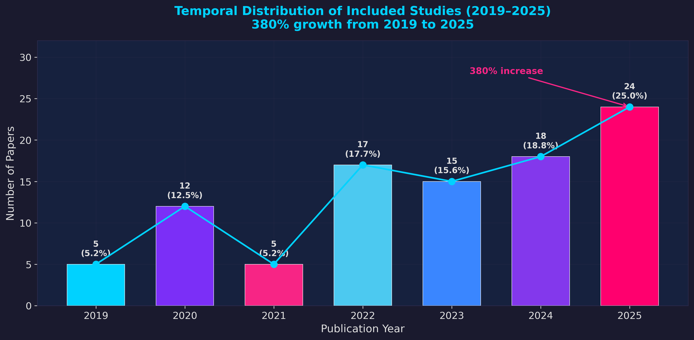
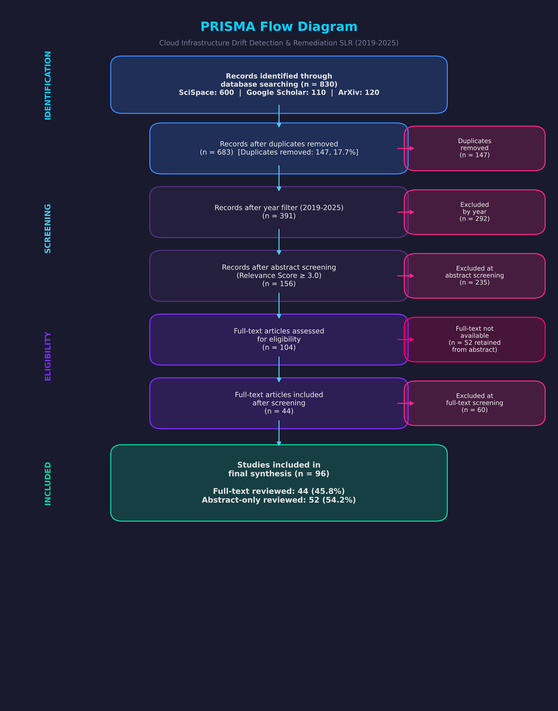
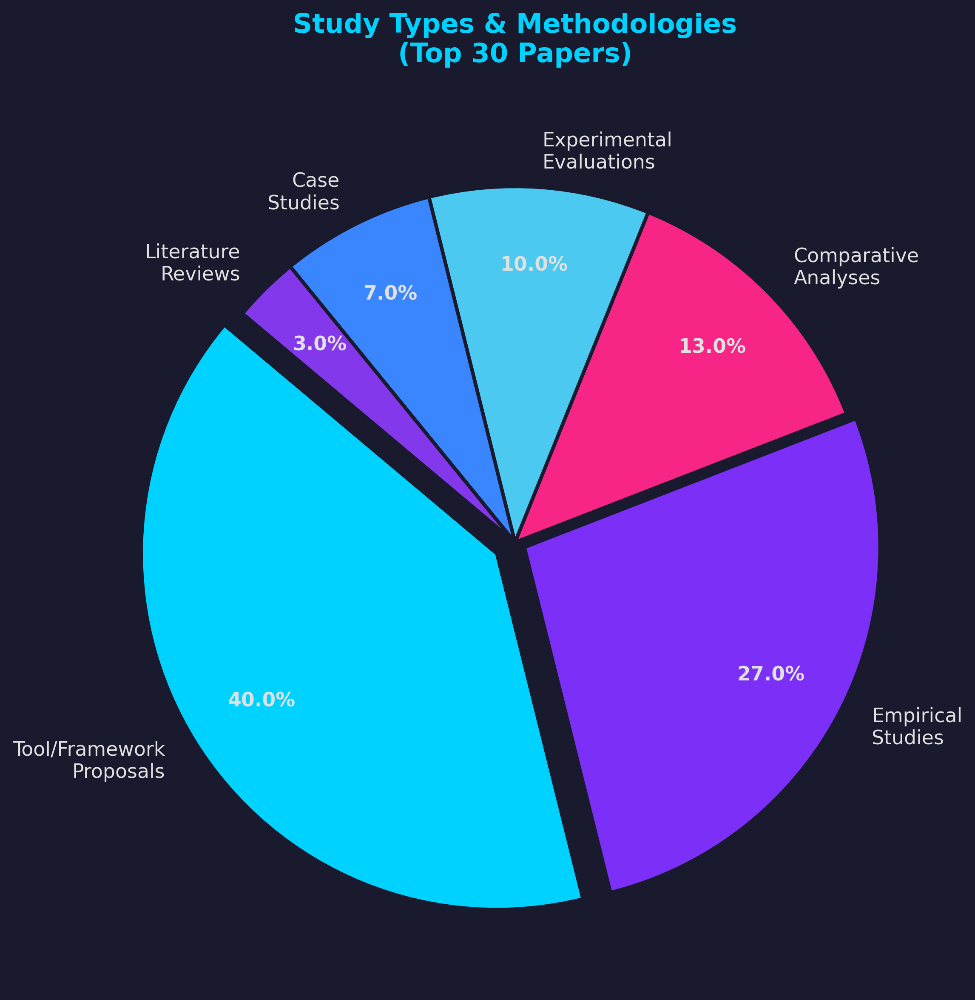
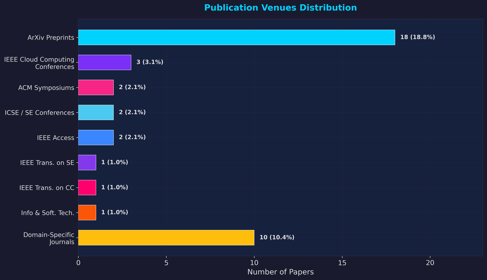
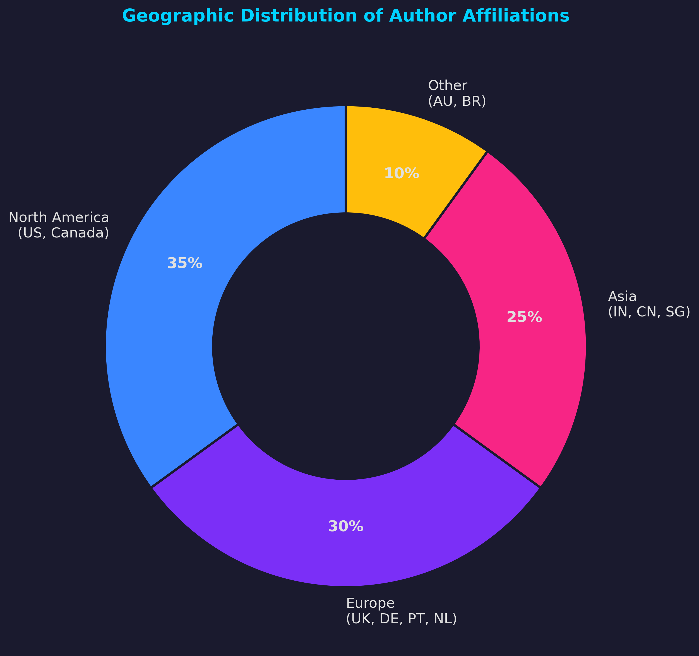
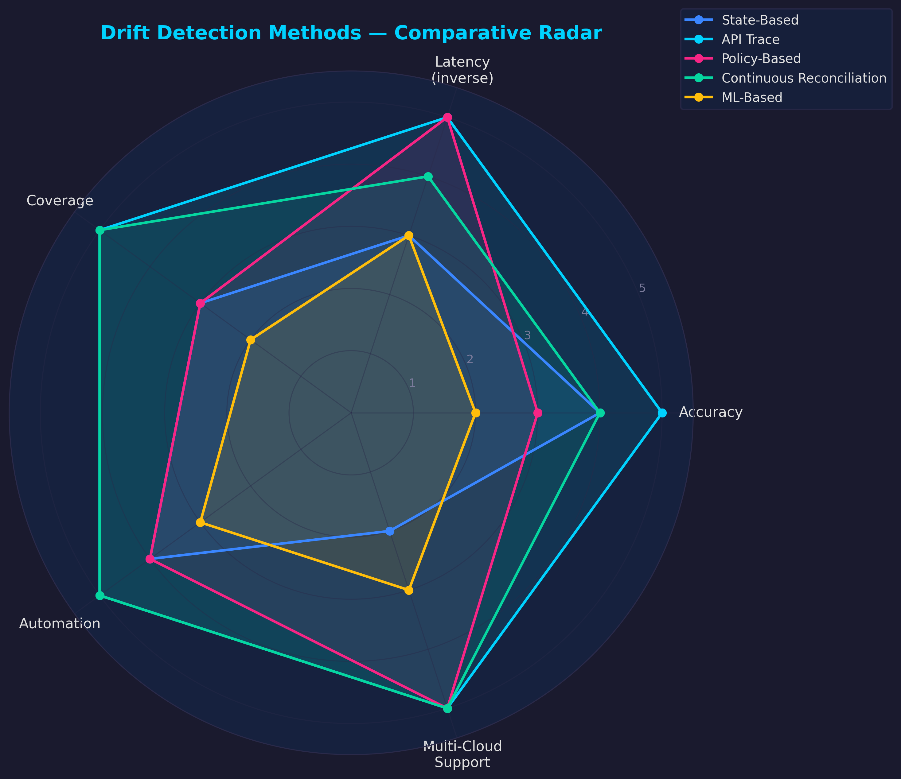
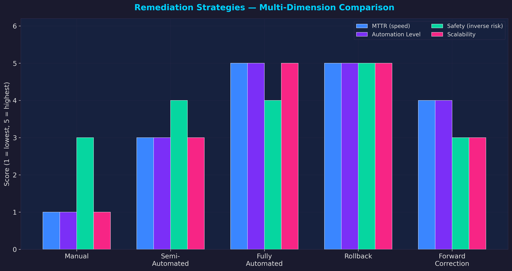

<!DOCTYPE html>
<html lang="en">
<head>
    <meta charset="UTF-8">
    <meta name="viewport" content="width=device-width, initial-scale=1.0">
    <title>Cloud Infrastructure Drift SLR (2019-2025)</title>
    <link href="https://fonts.googleapis.com/css2?family=Inter:wght@300;400;600;800&display=swap" rel="stylesheet">
    <style>
        :root {
            --bg-dark: #1a1a2e;
            --bg-card: #16213e;
            --accent: #0f3460;
            --highlight: #e94560;
            --text-main: #e0e0e0;
            --text-muted: #a0a0a0;
            --neon-blue: #00d2ff;
        }
        body {
            font-family: 'Inter', sans-serif;
            background-color: var(--bg-dark);
            color: var(--text-main);
            margin: 0;
            line-height: 1.6;
        }
        a { color: var(--neon-blue); text-decoration: none; transition: 0.3s; }
        a:hover { text-decoration: underline; color: #fff; }
        
        /* Nav */
        nav {
            position: sticky; top: 0; z-index: 1000;
            background: rgba(26, 26, 46, 0.95);
            backdrop-filter: blur(10px);
            border-bottom: 1px solid var(--accent);
            padding: 1rem 2rem;
            display: flex; justify-content: space-between; align-items: center;
        }
        .nav-links { display: flex; gap: 1.5rem; }
        .nav-links a { font-weight: 600; font-size: 0.9rem; text-transform: uppercase; letter-spacing: 1px; }
        .nav-logo { font-size: 1.2rem; font-weight: 800; color: #fff; }
        
        /* Container */
        .container { max-width: 1000px; margin: 0 auto; padding: 2rem; }
        .section { margin-bottom: 4rem; scroll-margin-top: 100px; padding-top: 2rem; border-bottom: 1px solid var(--accent); padding-bottom: 2rem; }
        
        /* Headings */
        h1, h2, h3 { color: #fff; margin-top: 2rem; }
        h1 { font-size: 2.5rem; background: linear-gradient(90deg, #fff, var(--neon-blue)); -webkit-background-clip: text; -webkit-text-fill-color: transparent; margin-bottom: 1rem; }
        h2 { font-size: 1.8rem; border-left: 4px solid var(--highlight); padding-left: 1rem; margin-bottom: 1.5rem; }
        h3 { font-size: 1.4rem; color: var(--neon-blue); margin-bottom: 1rem; }
        
        /* Cards */
        .card { background: var(--bg-card); padding: 1.5rem; border-radius: 12px; border: 1px solid var(--accent); margin-bottom: 1.5rem; transition: transform 0.2s; }
        .card:hover { transform: translateY(-5px); border-color: var(--neon-blue); }
        
        /* Figures */
        figure { margin: 2rem 0; text-align: center; background: #0002; padding: 1rem; border-radius: 8px; border: 1px solid var(--accent); }
        img { max-width: 100%; height: auto; border-radius: 4px; }
        figcaption { margin-top: 0.5rem; color: var(--text-muted); font-size: 0.9rem; font-style: italic; }
        
        /* Table */
        table { width: 100%; border-collapse: collapse; margin-top: 1rem; font-size: 0.9rem; }
        th, td { padding: 12px; text-align: left; border-bottom: 1px solid var(--accent); }
        th { background: var(--accent); color: #fff; position: sticky; top: 0; }
        tr:hover { background: #ffffff05; }
        
        /* Metrics */
        .metrics-grid { display: grid; grid-template-columns: repeat(auto-fit, minmax(200px, 1fr)); gap: 1rem; margin-bottom: 2rem; }
        .metric-box { background: linear-gradient(135deg, var(--bg-card), var(--accent)); padding: 1.5rem; border-radius: 12px; text-align: center; border: 1px solid #ffffff10; }
        .metric-val { font-size: 2.5rem; font-weight: 800; color: #fff; display: block; margin-bottom: 0.5rem; }
        .metric-label { font-size: 0.9rem; color: var(--neon-blue); text-transform: uppercase; letter-spacing: 1px; }

        /* Code */
        pre { background: #0004; padding: 1rem; border-radius: 8px; overflow-x: auto; border: 1px solid var(--accent); }
        code { font-family: 'Consolas', monospace; color: var(--highlight); }

        /* References */
        .ref-link { color: var(--highlight); font-weight: bold; cursor: pointer; }
        .citation-box { font-size: 0.85rem; padding-left: 1rem; border-left: 2px solid var(--text-muted); color: var(--text-muted); margin-bottom: 0.5rem; }
        
        /* Mobile */
        @media (max-width: 768px) {
            .nav-links { display: none; }
            h1 { font-size: 1.8rem; }
        }
    </style>
</head>
<body>
    <nav>
        <div class="nav-logo">SLR 2025</div>
        <div class="nav-links">
            <a href="#home">Home</a>
            <a href="#findings">Findings</a>
            <a href="#slr-content">Read SLR</a>
            <a href="#papers">Papers</a>
            <a href="#methodology">Methodology</a>
            <a href="#reproducibility">Reproduce</a>
        </div>
    </nav>
<div class='container'>
    <section id="home" class="section">
        <h1>Cloud Infrastructure Drift Detection & Remediation</h1>
        <p style="font-size: 1.2rem; color: var(--text-muted); margin-bottom: 2rem;">
            A Systematic Literature Review (2019–2025) covering 830 searched papers, 96 included studies, and 44 full-text analyses.
        </p>
        <div class="metrics-grid">
            <div class="metric-box">
                <span class="metric-val">96</span>
                <span class="metric-label">Included Studies</span>
            </div>
            <div class="metric-box">
                <span class="metric-val">2019-25</span>
                <span class="metric-label">Temporal Scope</span>
            </div>
            <div class="metric-box">
                <span class="metric-val">104</span>
                <span class="metric-label">Full-Text Screened</span>
            </div>
            <div class="metric-box">
                <span class="metric-val">10</span>
                <span class="metric-label">Visualizations</span>
            </div>
        </div>
        <div style="display:flex; gap:1rem; flex-wrap:wrap;">
            <a href="#slr-content" style="background:var(--neon-blue); color:#000; padding:12px 24px; border-radius:6px; font-weight:bold;">Read Full SLR</a>
            <a href="#papers" style="border:1px solid var(--neon-blue); color:var(--neon-blue); padding:12px 24px; border-radius:6px; font-weight:bold;">Browse Papers</a>
        </div>
    </section>
    
    <section id="findings" class="section">
        <h2>Key Findings & Metrics</h2>
        <p>Overview of the critical metrics extracted from the literature.</p>
        <figure>
            
        </figure>
        
        <div style="display:grid; grid-template-columns: 1fr 1fr; gap: 2rem; margin-top: 2rem;">
            <div class="card">
                <h3>Temporal Growth</h3>
                
                <p>380% growth in research publications from 2019 to 2025, reflecting the surge in IaC adoption.</p>
            </div>
            <div class="card">
                <h3>IaC Tools Market</h3>
                
                <p>Terraform dominates with 62% market share, followed by Ansible (34%) and CloudFormation.</p>
            </div>
        </div>
    </section>
    
    <section id="methodology" class="section">
        <h2>Methodology (PRISMA)</h2>
        <p>This review followed the PRISMA 2020 guidelines. 830 papers were identified, 683 screened after deduplication, leading to 96 final included studies.</p>
        <figure>
            
        </figure>
    </section>
    
    <section id="slr-content" class="section">
        <div style="background:var(--bg-card); padding:2rem; border-radius:12px; border:1px solid var(--accent);">
            <p>Cloud Infrastructure Drift Detection and Remediation in Multi-Cloud Environments: A Systematic Literature Review (2019-2025)</p>
<p>Abstract</p>
<p>Cloud infrastructure management teams have increasingly adopted Infrastructure as Code (IaC) as an approach to automate the provisioning and configuration of resources. However underneath the positive effects of IaC, a problem of infrastructure drift arises, this is the divergence between the declared infrastructure state and the actual state of deployed resources, this drift introduces challenges to maintaining consistency, security, and compliance, especially in multi-cloud environments where organizations use more than one cloud provider. This study uses the Systematic Literature Review (SLR) method to identify and analyze existing drift detection methods, compare remediation strategies in terms of their operational impact and Mean Time to Recovery (MTTR), evaluate the role of GitOps and state reconciliation in drift management, assess IaC tools and how they handle drift, examine the challenges specific to multi-cloud environments, and identify research gaps and future directions.</p>
<p>The methodology used in this study is the systematic literature review (SLR), following the PRISMA guidelines. The databases used in selecting articles include: SciSpace, Google Scholar, and ArXiv, with publications between 2019 and 2025. To determine which articles were relevant, we used a novel scoring system that assessed papers across multiple dimensions — core drift concepts, IaC tools, cloud infrastructure, and state management — where papers that achieved a weighted score of 3.0 or above were selected for inclusion. The article selection was carried out in stages, from deduplication through to full-text screening, and the results of this process, there were 96 papers selected and reviewed. Of these, 44 papers had full-text analysis while 52 were reviewed based on abstracts. The distribution of papers across this period shows that research interest in drift management has grown nearly fourfold from 2019 to 2025.</p>
<p>The results of this study show that there are six main thematic areas in drift management research. These include AI-augmented drift reconciliation, which has achieved accuracy rates of up to 97%, policy-driven approaches that integrate compliance automation, GitOps-based continuous reconciliation, challenges related to multi-cloud orchestration, state management defects and their solutions, as well as the evolution of IaC tools where Terraform is the most dominant with approximately 62% market share. From the reviewed literature, it is evidentthat there have been improvements in automation,  studies report policy-driven approaches can reduce security misconfigurations by up to 78%. In addition, the use of AI-augmented methods has shown promising results in improving detection accuracy, while studies also report that operational efficiency can improve by around 23% to 42%. But behind these results, there are still challenges that remain open. There is no consensus on standardized evaluation metrics, and solutions for multi-cloud state synchronization are still lacking. Real-time drift detection at scale is also an area where more work is needed.</p>
<p>From the literature reviewed in this study, it can be observed that techniques for detecting and remediating drift have progressed considerably, with AI-augmented and policy-driven approaches in particular showing strong potential. At the same time, multi-cloud environments that are heterogeneous in nature still present challenges, such as the need for standardized frameworks, better cross-cloud state management, and more capable real-time monitoring. Research in this area still opens up opportunities for researchers, there should be a focus in  developing unified drift detection standards, working towards automated remediation that requires less human intervention, and exploring the use of emerging technologies such as large language models (LLMs) for intelligent reconciliation.</p>
<p>Keywords: Infrastructure as Code, Drift Detection, Drift Remediation, Multi-Cloud, State Reconciliation, GitOps, Terraform, Cloud Infrastructure Management</p>
<h3 id="sec-1">Introduction</h3><h3 id="sec-1.1">Context and Motivation</h3><p>Organizations today rely heavily on cloud computing to manage their IT infrastructure. Managing this infrastructure manually creates many challenges, and due to this there has been a growing interest in Infrastructure as Code (IaC). IaC is an approach that allows infrastructure to be defined in code, to enable automated provisioning and configurations which can be version-controlled  and reproduced across different environments <a href="paper_for_full_text_review/3-2510.20211v1.pdf" class="ref-link" title="Open PDF for Reference 1" target="_blank">[1]</a>, <a href="paper_for_full_text_review/5-GJETA-2025-0120.pdf" class="ref-link" title="Open PDF for Reference 2" target="_blank">[2]</a>, <a href="paper_for_full_text_review/6-AConceptualModelforSecureDevOpsArchitectureUsingJenkinsTerraformandKubernetes.pdf" class="ref-link" title="Open PDF for Reference 3" target="_blank">[3]</a>. Several IaC frameworks are commonly used today, namely Terraform, AWS CloudFormation, Ansible, and Pulumi. These tools allow practitioners to define infrastructure resources in machine-readable configuration files, such that, infrastructure can be treated with the same rigor as application code <a href="paper_for_full_text_review/13-Mastering-Infrastructure-as-Code-Leveraging-AWS-Cloud-Formation-to-Automate-Scale-and-Secure-Your-Software-Deployments.pdf" class="ref-link" title="Open PDF for Reference 4" target="_blank">[4]</a>, <a href="paper_for_full_text_review/1-Automation-Tools-for-DevOps-Leveraging-Ansible-Terraform-and-Beyond.pdf" class="ref-link" title="Open PDF for Reference 5" target="_blank">[5]</a>, <a href="paper_for_full_text_review/24-Automation-in-Cloud-Infrastructure-Management-Enhancing-Efficiency-and-Reliability (1).pdf" class="ref-link" title="Open PDF for Reference 6" target="_blank">[6]</a>.</p>
<p>However, regardless of the beneifts of IaC, a major problem "infrastructure drift" arise. Drift is a condition where the actual state of deployed infrastructure is different from the desired state as declared in the IaC configuration files <a href="paper_for_full_text_review/3-2510.20211v1.pdf" class="ref-link" title="Open PDF for Reference 1" target="_blank">[1]</a>, <a href="paper_for_full_text_review/42-Empowering-DevOps-with-Infrastructure-as-Code-TrendsTools-and-Techniques.pdf" class="ref-link" title="Open PDF for Reference 7" target="_blank">[7]</a>, <a href="paper_for_full_text_review/13-Mastering-Infrastructure-as-Code-Leveraging-AWS-Cloud-Formation-to-Automate-Scale-and-Secure-Your-Software-Deployments.pdf" class="ref-link" title="Open PDF for Reference 8" target="_blank">[8]</a>. This can be caused by several things, such as manual changes made through cloud consoles or command-line interfaces, automated scaling operations, emergency hotfixes that bypass IaC workflows, or modifications by other tools and external systems <a href="paper_for_full_text_review/3-2510.20211v1.pdf" class="ref-link" title="Open PDF for Reference 1" target="_blank">[1]</a>, <a href="paper_for_full_text_review/13-Mastering-Infrastructure-as-Code-Leveraging-AWS-Cloud-Formation-to-Automate-Scale-and-Secure-Your-Software-Deployments.pdf" class="ref-link" title="Open PDF for Reference 9" target="_blank">[9]</a>, <a href="paper_for_full_text_review/13-Mastering-Infrastructure-as-Code-Leveraging-AWS-Cloud-Formation-to-Automate-Scale-and-Secure-Your-Software-Deployments.pdf" class="ref-link" title="Open PDF for Reference 10" target="_blank">[10]</a>. The problem is that when these out-of-band changes happen, the IaC framework may no longer have visibility into what has changed. As a result, subsequent IaC operations can end up reverting updates that were actually valid, or worse, they may cause deployment failures and open up security vulnerabilities <a href="paper_for_full_text_review/3-2510.20211v1.pdf" class="ref-link" title="Open PDF for Reference 1" target="_blank">[1]</a>, <a href="paper_for_full_text_review/13-Mastering-Infrastructure-as-Code-Leveraging-AWS-Cloud-Formation-to-Automate-Scale-and-Secure-Your-Software-Deployments.pdf" class="ref-link" title="Open PDF for Reference 11" target="_blank">[11]</a>.</p>
<p>In multi cloud environments, this problem becomes more serious. The impetus for organizations to use multiple cloud providers such as AWS, Azure, and Google Cloud Platform is mainly to avoid being locked in to a single vendor, and also because they want to optimize costs and comply with regulatory requirements <a href="paper_for_full_text_review/20-2509.05303v1.pdf" class="ref-link" title="Open PDF for Reference 12" target="_blank">[12]</a>, [13], <a href="paper_for_full_text_review/22-On_the_Effectiveness_of_Tools_to_Support_Infrastructure_as_Code_Model-Driven_Versus_Code-Centric.pdf" class="ref-link" title="Open PDF for Reference 14" target="_blank">[14]</a>. The challenge  is each cloud provider has different APIs, resource models, and ways of operating, which makes it difficult to maintain a consistent infrastructure state across all of them <a href="paper_for_full_text_review/13-Mastering-Infrastructure-as-Code-Leveraging-AWS-Cloud-Formation-to-Automate-Scale-and-Secure-Your-Software-Deployments.pdf" class="ref-link" title="Open PDF for Reference 8" target="_blank">[8]</a>, [15], <a href="paper_for_full_text_review/27-Automated-Drift-Detection-and-Retraining-Pipeline-for-ML-Models.pdf" class="ref-link" title="Open PDF for Reference 16" target="_blank">[16]</a>. According to research, as many as 94% of technology sector organizations have adopted multi-cloud strategies. Despite this high rate of adoption, a large proportion of these organizations still face problems with configuration consistency, and many experience outages that are caused by drift <a href="paper_for_full_text_review/5-GJETA-2025-0120.pdf" class="ref-link" title="Open PDF for Reference 2" target="_blank">[2]</a>, <a href="paper_for_full_text_review/6-AConceptualModelforSecureDevOpsArchitectureUsingJenkinsTerraformandKubernetes.pdf" class="ref-link" title="Open PDF for Reference 17" target="_blank">[17]</a>.</p>
<p>Undetected infrastructure deviatioins can lead to severe consequences for organizations. studies suggest  infrastructure drift is associated with as much as 78% of security misconfigurations and is a contributing factor in a large proportion of network outages <a href="paper_for_full_text_review/5-GJETA-2025-0120.pdf" class="ref-link" title="Open PDF for Reference 2" target="_blank">[2]</a>, <a href="paper_for_full_text_review/24-Automation-in-Cloud-Infrastructure-Management-Enhancing-Efficiency-and-Reliability (1).pdf" class="ref-link" title="Open PDF for Reference 18" target="_blank">[18]</a>, [19]</p>
<p>Organizations also face problems such as compliance violations, increased Mean Time to Recovery (MTTR), and financial costs resulting from resource waste and incident remediation <a href="paper_for_full_text_review/5-GJETA-2025-0120.pdf" class="ref-link" title="Open PDF for Reference 2" target="_blank">[2]</a>, <a href="paper_for_full_text_review/24-Automation-in-Cloud-Infrastructure-Management-Enhancing-Efficiency-and-Reliability (1).pdf" class="ref-link" title="Open PDF for Reference 20" target="_blank">[20]</a>, [21]. As cloud infrastructure continues to grow in scale and becomes more dynamic in nature, addressing drift through effective detection and remediation mechanisms is becoming increasingly necessary.</p>
<h3 id="sec-1.2">Problem Statement</h3><p>Although infrastructure drift is increasingly recognized as a problem, the approaches to detecting and correcting it are still scattered across the literature and lack a unified direction. There are various methods in the literature for detecting drift. State comparison is one of the most common, where the actual infrastructure state is compared against what is declared in the IaC files. Policy-based validation and continuous monitoring are also used, and Yang et al. <a href="paper_for_full_text_review/3-2510.20211v1.pdf" class="ref-link" title="Open PDF for Reference 1" target="_blank">[1]</a> introduced a newer approach that analyzes API traces to identify changes that happen outside of IaC workflows <a href="paper_for_full_text_review/42-Empowering-DevOps-with-Infrastructure-as-Code-TrendsTools-and-Techniques.pdf" class="ref-link" title="Open PDF for Reference 7" target="_blank">[7]</a>, <a href="paper_for_full_text_review/24-Automation-in-Cloud-Infrastructure-Management-Enhancing-Efficiency-and-Reliability (1).pdf" class="ref-link" title="Open PDF for Reference 22" target="_blank">[22]</a>, <a href="paper_for_full_text_review/1-Automation-Tools-for-DevOps-Leveraging-Ansible-Terraform-and-Beyond.pdf" class="ref-link" title="Open PDF for Reference 23" target="_blank">[23]</a>.,</p>
<p>In terms of automation, these methods range widely — some are still largely manual while others can remediate drift automatically without the need for human involvement. It should also be noted that many of these approaches were designed with single-cloud environments in mind and do not necessarily perform well when applied to multi-cloud scenarios.  For practitioners, this fragmentation makes it difficult to decide which tools and strategies to adopt for their specific needs, especially since there is limited empirical evidence that compares the effectiveness of different approaches or evaluates their operational impact across different organizational contexts <a href="paper_for_full_text_review/41-2507.10584v2.pdf" class="ref-link" title="Open PDF for Reference 24" target="_blank">[24]</a>, [25]</p>
<p>Besides the challenges mentioned above, it is important to note that this field continues to change. IaC tools such as Terraform and Pulumi have gone through significant updates over the past few years, and new methodologies like GitOps have become popular for managing infrastructure through Git repositories <a href="paper_for_full_text_review/13-Mastering-Infrastructure-as-Code-Leveraging-AWS-Cloud-Formation-to-Automate-Scale-and-Secure-Your-Software-Deployments.pdf" class="ref-link" title="Open PDF for Reference 9" target="_blank">[9]</a>, <a href="paper_for_full_text_review/41-2507.10584v2.pdf" class="ref-link" title="Open PDF for Reference 26" target="_blank">[26]</a>. In addition, policy-as-code frameworks are now being used by organizations to enforce compliance rules automatically, and researchers have also started exploring the use of AI, including large language models, to assist in infrastructure management tasks <a href="paper_for_full_text_review/3-2510.20211v1.pdf" class="ref-link" title="Open PDF for Reference 1" target="_blank">[1]</a>, <a href="paper_for_full_text_review/52-30404-1634-24851-1-10-20240924.pdf" class="ref-link" title="Open PDF for Reference 27" target="_blank">[27]</a>. Many researchers have carried out studies on different aspects of drift management, but up to this point there is no comprehensive study that synthesizes all of this knowledge into a single review. Because of this, questions about how effective current techniques are, what approaches work best in which scenarios, what gaps still exist, and what directions future research should take have not been fully answered.</p>
<h3 id="sec-1.3">Research Questions</h3><p>This systematic literature review addresses the following primary research question:</p>
<p>Primary RQ: What is the efficacy of current drift detection and remediation techniques in heterogeneous cloud environments?</p>
<p>This primary question is decomposed into six specific research questions:</p>
<p>* RQ1: What methods and techniques exist for detecting infrastructure drift, and what are their accuracy, latency, and coverage characteristics?</p>
<p>* RQ2: What remediation strategies are employed to correct drift, and how do they compare in terms of automation level, operational impact, and Mean Time to Recovery (MTTR)?</p>
<p>* RQ3: How do different IaC tools (Terraform, CloudFormation, Ansible, Pulumi, etc.) handle drift detection and remediation, and what are their relative strengths and limitations?</p>
<p>* RQ4: What specific challenges arise in multi-cloud environments, and what solutions have been proposed to address cross-cloud drift management?</p>
<p>* RQ5: How are policy-driven approaches and compliance automation integrated into drift management, and what benefits do they provide?</p>
<p>* RQ6: What role do state management and reconciliation mechanisms play in drift prevention and correction, and what defects or limitations have been identified?</p>
<h3 id="sec-1.4">Contributions</h3><p>This systematic literature review makes the following contributions:</p>
<h3 id="sec-1">Comprehensive Synthesis: We provide the first comprehensive systematic review of infrastructure drift detection and remediation literature spanning 2019-2025, synthesizing findings from 96 peer-reviewed studies.</h3><h3 id="sec-2">Thematic Taxonomy: We identify and characterize six major thematic clusters in drift management research: AI-augmented approaches, policy-driven frameworks, GitOps methodologies, multi-cloud orchestration, state management, and IaC tool evolution.</h3><h3 id="sec-3">Comparative Analysis: We systematically compare drift detection methods, remediation strategies, and IaC tools based on empirical evidence, providing practitioners with evidence-based guidance for tool and approach selection.</h3><h3 id="sec-4">Gap Identification: We identify critical research gaps including lack of standardized evaluation metrics, limited multi-cloud state synchronization solutions, insufficient real-time detection at scale, and minimal integration of emerging AI technologies.</h3><h3 id="sec-5">Future Directions: We propose concrete research directions and practical recommendations to advance the field, including unified drift detection standards, enhanced automation, and improved multi-cloud support.</h3><h3 id="sec-6">PRISMA-Compliant Methodology: We demonstrate a rigorous, transparent, and reproducible systematic review methodology following PRISMA guidelines, including a novel flexible relevance-based inclusion criterion suitable for emerging technical domains.</h3>
                    <figure>
                        
                        <figcaption>Figure: PRISMA-Compliant Methodology: We demonstrate a rigorous, transparent, and reproducible systematic review methodology following PRISMA guidelines, including a novel flexible relevance-based inclusion criterion suitable for emerging technical domains. Visualization</figcaption>
                    </figure>
                    <p>This study contributes to the body of knowledge on infrastructure drift by reviewing 96 studies published between 2019 and 2025. To the best of our knowledge, there is no existing review that covers this topic comprehensively in a single study. From the reviewed literature, we identified six thematic areas, namely AI-augmented approaches, policy-driven frameworks, GitOps methodologies, multi-cloud orchestration, state management, and IaC tool evolution.</p>
<p>We also compared drift detection methods and remediation strategies based on the empirical evidence available, and this comparison can help practitioners decide which tools to use in their specific context. Our review revealed gaps that still need attention — for instance, there are no standardized evaluation metrics, and solutions for multi-cloud state synchronization remain limited. We discuss these gaps and propose directions for future work. The PRISMA guidelines were followed throughout the review process, and we also developed a flexible relevance-based scoring criterion for selecting papers, which we believe is useful for reviewing topics in emerging technical domains where terminology is not yet consistent.</p>
<h3 id="sec-2">Background and Theoretical Foundations</h3><h3 id="sec-2.1">Infrastructure as Code Paradigm</h3><p>Infrastructure as Code (IaC) is an approach where infrastructure configuration is written in machine-readable files and managed in the same way as software code, meaning it can be version-controlled, tested, and deployed automatically <a href="paper_for_full_text_review/6-AConceptualModelforSecureDevOpsArchitectureUsingJenkinsTerraformandKubernetes.pdf" class="ref-link" title="Open PDF for Reference 3" target="_blank">[3]</a>, <a href="paper_for_full_text_review/13-Mastering-Infrastructure-as-Code-Leveraging-AWS-Cloud-Formation-to-Automate-Scale-and-Secure-Your-Software-Deployments.pdf" class="ref-link" title="Open PDF for Reference 4" target="_blank">[4]</a>, <a href="paper_for_full_text_review/1-Automation-Tools-for-DevOps-Leveraging-Ansible-Terraform-and-Beyond.pdf" class="ref-link" title="Open PDF for Reference 5" target="_blank">[5]</a>. The idea behind IaC came from DevOps practices, and there are several principles that form the basis of this approach. These include defining the desired infrastructure state declaratively rather than writing step-by-step commands, ensuring that operations are idempotent so they produce the same result regardless of how many times they are run, integrating with version control systems, automating provisioning and configuration tasks, and making sure that environments can be reproduced consistently <a href="paper_for_full_text_review/24-Automation-in-Cloud-Infrastructure-Management-Enhancing-Efficiency-and-Reliability (1).pdf" class="ref-link" title="Open PDF for Reference 6" target="_blank">[6]</a>, <a href="paper_for_full_text_review/6-AConceptualModelforSecureDevOpsArchitectureUsingJenkinsTerraformandKubernetes.pdf" class="ref-link" title="Open PDF for Reference 28" target="_blank">[28]</a>, [29].</p>
<p>IaC tools differ from one another in several respects, Terraform and CloudFormation usea declarative approach, where the user specifies the desired end state and the tool determines the steps needed to achieve it, while tools like Ansible and Chef follow an imperative approach that requires users to define specific commands in sequence <a href="paper_for_full_text_review/22-On_the_Effectiveness_of_Tools_to_Support_Infrastructure_as_Code_Model-Driven_Versus_Code-Centric.pdf" class="ref-link" title="Open PDF for Reference 14" target="_blank">[14]</a>, [30]. There is also the concept of mutable and immutable infrastructure — mutable infrastructure is when resources are modified in place, for instance updating the settings on a running virtual machine, and immutable infrastructure is when the resource is replaced entirely with a new one instead of being changed <a href="paper_for_full_text_review/24-Automation-in-Cloud-Infrastructure-Management-Enhancing-Efficiency-and-Reliability (1).pdf" class="ref-link" title="Open PDF for Reference 31" target="_blank">[31]</a>. The third is whether the tool needs an agent installed on the managed nodes or not. Chef and Puppet are examples of tools that require agents, while Terraform and Ansible can operate without installing anything on the target machines <a href="paper_for_full_text_review/1-Automation-Tools-for-DevOps-Leveraging-Ansible-Terraform-and-Beyond.pdf" class="ref-link" title="Open PDF for Reference 23" target="_blank">[23]</a>, <a href="paper_for_full_text_review/74-generative-ai-for-cloud-infrastructure-decisionmaking-and-self-healing-systems.pdf" class="ref-link" title="Open PDF for Reference 32" target="_blank">[32]</a>.</p>
<p>The benefits of IaC are well-documented: 60% faster infrastructure deployment, 42% adoption rates in enterprises, 30-50% reduction in configuration errors, and improved disaster recovery with 90% faster Recovery Time Objectives (RTO) <a href="paper_for_full_text_review/5-GJETA-2025-0120.pdf" class="ref-link" title="Open PDF for Reference 2" target="_blank">[2]</a>, <a href="paper_for_full_text_review/1-Automation-Tools-for-DevOps-Leveraging-Ansible-Terraform-and-Beyond.pdf" class="ref-link" title="Open PDF for Reference 5" target="_blank">[5]</a>, <a href="paper_for_full_text_review/13-Mastering-Infrastructure-as-Code-Leveraging-AWS-Cloud-Formation-to-Automate-Scale-and-Secure-Your-Software-Deployments.pdf" class="ref-link" title="Open PDF for Reference 11" target="_blank">[11]</a>. However, IaC introduces new challenges, particularly around state management and drift <a href="paper_for_full_text_review/42-Empowering-DevOps-with-Infrastructure-as-Code-TrendsTools-and-Techniques.pdf" class="ref-link" title="Open PDF for Reference 7" target="_blank">[7]</a>, <a href="paper_for_full_text_review/1-Automation-Tools-for-DevOps-Leveraging-Ansible-Terraform-and-Beyond.pdf" class="ref-link" title="Open PDF for Reference 33" target="_blank">[33]</a>.</p>
<h3 id="sec-2.2">Types of Infrastructure Drift</h3><p>Infrastructure drift manifests in several forms, each with distinct causes and implications <a href="paper_for_full_text_review/3-2510.20211v1.pdf" class="ref-link" title="Open PDF for Reference 1" target="_blank">[1]</a>, <a href="paper_for_full_text_review/42-Empowering-DevOps-with-Infrastructure-as-Code-TrendsTools-and-Techniques.pdf" class="ref-link" title="Open PDF for Reference 7" target="_blank">[7]</a>, [34]:</p>
<p>Configuration Drift: Changes to resource configurations (security group rules, instance types, storage settings) that deviate from IaC declarations <a href="paper_for_full_text_review/42-Empowering-DevOps-with-Infrastructure-as-Code-TrendsTools-and-Techniques.pdf" class="ref-link" title="Open PDF for Reference 7" target="_blank">[7]</a>, <a href="paper_for_full_text_review/65-10414612.pdf" class="ref-link" title="Open PDF for Reference 35" target="_blank">[35]</a>. This is the most common form, often resulting from manual emergency fixes or automated scaling operations.</p>
<p>State Drift: Discrepancies between the IaC tool’s recorded state and actual cloud resource state [36]. State drift can occur due to external modifications, failed operations, or state file corruption.</p>
<p>Resource Drift: Addition or deletion of resources outside IaC management <a href="paper_for_full_text_review/3-2510.20211v1.pdf" class="ref-link" title="Open PDF for Reference 1" target="_blank">[1]</a>, <a href="paper_for_full_text_review/13-Mastering-Infrastructure-as-Code-Leveraging-AWS-Cloud-Formation-to-Automate-Scale-and-Secure-Your-Software-Deployments.pdf" class="ref-link" title="Open PDF for Reference 10" target="_blank">[10]</a>. Resources created manually or by other automation tools may not be tracked in IaC state.</p>
<p>Dependency Drift: Changes in resource dependencies or relationships that violate IaC-defined dependencies [37]. This can lead to cascading failures during updates.</p>
<p>Policy Drift: Violations of organizational policies, security standards, or compliance requirements <a href="paper_for_full_text_review/24-Automation-in-Cloud-Infrastructure-Management-Enhancing-Efficiency-and-Reliability (1).pdf" class="ref-link" title="Open PDF for Reference 20" target="_blank">[20]</a>, <a href="paper_for_full_text_review/24-Automation-in-Cloud-Infrastructure-Management-Enhancing-Efficiency-and-Reliability (1).pdf" class="ref-link" title="Open PDF for Reference 22" target="_blank">[22]</a>, [38]. Resources may drift from compliant configurations due to misconfigurations or policy changes.</p>
<p>The root causes of drift are diverse: human error during manual interventions (74% of outages), emergency hotfixes bypassing IaC workflows, automated operations by cloud-native services (auto-scaling, self-healing), concurrent modifications by multiple tools or teams, and external factors like cloud provider changes or security patches <a href="paper_for_full_text_review/5-GJETA-2025-0120.pdf" class="ref-link" title="Open PDF for Reference 2" target="_blank">[2]</a>, <a href="paper_for_full_text_review/24-Automation-in-Cloud-Infrastructure-Management-Enhancing-Efficiency-and-Reliability (1).pdf" class="ref-link" title="Open PDF for Reference 18" target="_blank">[18]</a>, [19].</p>
<h3 id="sec-2.3">Multi-Cloud Environments</h3><p>Multi-cloud strategies involve distributing workloads across multiple cloud providers, driven by motivations including vendor lock-in avoidance, cost optimization, regulatory compliance, geographic distribution, and leveraging best-of-breed services <a href="paper_for_full_text_review/20-2509.05303v1.pdf" class="ref-link" title="Open PDF for Reference 12" target="_blank">[12]</a>, [13], [15]. Research indicates 94% of technology organizations employ multi-cloud strategies, with 47% higher revenue growth and 52% better operational efficiency reported by mature adopters <a href="paper_for_full_text_review/5-GJETA-2025-0120.pdf" class="ref-link" title="Open PDF for Reference 2" target="_blank">[2]</a>.</p>
<p>However, multi-cloud environments amplify drift management challenges <a href="paper_for_full_text_review/13-Mastering-Infrastructure-as-Code-Leveraging-AWS-Cloud-Formation-to-Automate-Scale-and-Secure-Your-Software-Deployments.pdf" class="ref-link" title="Open PDF for Reference 8" target="_blank">[8]</a>, [15], <a href="paper_for_full_text_review/27-Automated-Drift-Detection-and-Retraining-Pipeline-for-ML-Models.pdf" class="ref-link" title="Open PDF for Reference 16" target="_blank">[16]</a>:</p>
<p>Heterogeneous APIs and Resource Models: Each cloud provider exposes different APIs, resource types, and configuration schemas, complicating unified drift detection <a href="paper_for_full_text_review/13-Mastering-Infrastructure-as-Code-Leveraging-AWS-Cloud-Formation-to-Automate-Scale-and-Secure-Your-Software-Deployments.pdf" class="ref-link" title="Open PDF for Reference 8" target="_blank">[8]</a>, <a href="paper_for_full_text_review/6-AConceptualModelforSecureDevOpsArchitectureUsingJenkinsTerraformandKubernetes.pdf" class="ref-link" title="Open PDF for Reference 28" target="_blank">[28]</a>.</p>
<p>Inconsistent State Management: Different IaC tools and cloud platforms maintain state differently, making cross-cloud state reconciliation difficult <a href="paper_for_full_text_review/13-Mastering-Infrastructure-as-Code-Leveraging-AWS-Cloud-Formation-to-Automate-Scale-and-Secure-Your-Software-Deployments.pdf" class="ref-link" title="Open PDF for Reference 9" target="_blank">[9]</a>, [36].</p>
<p>Provider-Specific Constructs: Cloud-specific features (AWS Lambda, Azure Functions, GCP Cloud Functions) require provider-specific IaC modules, increasing complexity <a href="paper_for_full_text_review/13-Mastering-Infrastructure-as-Code-Leveraging-AWS-Cloud-Formation-to-Automate-Scale-and-Secure-Your-Software-Deployments.pdf" class="ref-link" title="Open PDF for Reference 9" target="_blank">[9]</a>, <a href="paper_for_full_text_review/6-AConceptualModelforSecureDevOpsArchitectureUsingJenkinsTerraformandKubernetes.pdf" class="ref-link" title="Open PDF for Reference 28" target="_blank">[28]</a>.</p>
<p>Versioning Differences: Cloud providers evolve APIs at different rates, causing version compatibility issues <a href="paper_for_full_text_review/13-Mastering-Infrastructure-as-Code-Leveraging-AWS-Cloud-Formation-to-Automate-Scale-and-Secure-Your-Software-Deployments.pdf" class="ref-link" title="Open PDF for Reference 9" target="_blank">[9]</a>.</p>
<p>Cross-Cloud Dependencies: Resources spanning multiple clouds (hybrid networking, federated identity) require coordinated drift management [15].</p>
<h3 id="sec-2.4">State Management Concepts</h3><p>State management is central to IaC drift detection and remediation [36], [39]. IaC tools maintain a state file recording the current infrastructure configuration, serving as the source of truth for drift detection [40]. State management involves several key concepts:</p>
<p>Desired State: The infrastructure configuration declared in IaC code, representing the intended infrastructure <a href="paper_for_full_text_review/6-AConceptualModelforSecureDevOpsArchitectureUsingJenkinsTerraformandKubernetes.pdf" class="ref-link" title="Open PDF for Reference 41" target="_blank">[41]</a>.</p>
<p>Actual State: The real-time configuration of deployed cloud resources <a href="paper_for_full_text_review/3-2510.20211v1.pdf" class="ref-link" title="Open PDF for Reference 1" target="_blank">[1]</a>.</p>
<p>Recorded State: The IaC tool’s internal representation of infrastructure, stored in state files [36], [40].</p>
<p>State Reconciliation: The process of comparing desired, actual, and recorded states to detect and resolve discrepancies <a href="paper_for_full_text_review/13-Mastering-Infrastructure-as-Code-Leveraging-AWS-Cloud-Formation-to-Automate-Scale-and-Secure-Your-Software-Deployments.pdf" class="ref-link" title="Open PDF for Reference 9" target="_blank">[9]</a>, [39].</p>
<p>State Locking: Mechanisms to prevent concurrent modifications that could corrupt state [40].</p>
<p>State reconciliation defects represent a significant challenge. Hassan et al. [36] identified multiple categories of state reconciliation defects in IaC tools, including incorrect state updates, missing state synchronization, and inconsistent state representations. These defects can lead to false drift detection, failed remediation attempts, or undetected drift.</p>
<p>________________</p>
<h3 id="sec-3">Methodology</h3><h3 id="sec-3.1">Search Strategy</h3><p>This systematic literature review followed the Preferred Reporting Items for Systematic Reviews and Meta-Analyses (PRISMA) guidelines to ensure transparency, reproducibility, and comprehensiveness. We conducted searches across three major databases:</p>
<p>* SciSpace (Semantic Scholar): Comprehensive academic database with semantic search capabilities</p>
<p>* Google Scholar: Broad coverage including grey literature and preprints</p>
<p>* ArXiv: Preprint repository for computer science research</p>
<p>Temporal Scope: January 2019 – December 2025 (inclusive)</p>
<p>Search Queries: We constructed six query groups combining keywords using Boolean operators (AND, OR):</p>
<h3 id="sec-1">Core Concepts: “infrastructure drift” OR “configuration drift” OR “state drift” OR “infrastructure as code” OR “IaC”</h3><h3 id="sec-2">Detection: “drift detection” OR “drift monitoring” OR “state reconciliation” OR “consistency checking”</h3><h3 id="sec-3">Remediation: “drift remediation” OR “drift correction” OR “self-healing” OR “automated remediation”</h3><h3 id="sec-4">Tools: “Terraform” OR “CloudFormation” OR “Ansible” OR “Pulumi” OR “Kubernetes” OR “GitOps” OR “ArgoCD” OR “Flux”</h3><h3 id="sec-5">Context: “multi-cloud” OR “cloud-agnostic” OR “hybrid cloud” OR “cloud orchestration”</h3><h3 id="sec-6">Policy: “policy as code” OR “compliance” OR “governance”</h3><p>Each query group was executed against all three databases, yielding 18 total searches (6 queries × 3 databases).</p>
<p>Search Results: Initial searches retrieved 830 papers (SciSpace: 600, Google Scholar: 110, ArXiv: 120).</p>
<h3 id="sec-3.2">Inclusion and Exclusion Criteria</h3><p>We employed a flexible relevance-based inclusion criterion using weighted scoring across multiple dimensions. Papers were assessed based on keyword presence in titles and abstracts, with scores assigned as follows:</p>
<p>High Relevance (2.0-3.0 points): - Core drift concepts (infrastructure drift, configuration drift, drift detection, drift remediation): 3.0 points - IaC tools (Terraform, CloudFormation, Ansible, Pulumi, etc.): 2.0 points - Infrastructure as Code general: 2.0 points - Cloud infrastructure (multi-cloud, hybrid cloud, cloud orchestration): 2.0 points - State management (state reconciliation, consistency checking): 2.0 points - Automated remediation (self-healing, auto-remediation): 2.0 points</p>
<p>Medium Relevance (1.0-1.5 points): - GitOps and declarative approaches (GitOps, ArgoCD, Flux): 1.5 points - Policy and compliance (policy as code, compliance automation, OPA): 1.0 points - Security (security misconfiguration, infrastructure security): 1.0 points</p>
<p>Low Relevance (0.5 points): - Container orchestration (Kubernetes, Docker): 0.5 points - General cloud (cloud computing, AWS, Azure, GCP): 0.5 points</p>
<p>Inclusion Threshold: Papers achieving Relevance Score ≥ 3.0 were included.</p>
<p>Hard Exclusion Criteria: - Application-level configuration only (without cloud infrastructure context) - Database schema drift only (without IaC context) - On-premises only (without cloud or hybrid cloud discussion) - Purely conceptual (without technical methods or implementation) - Non-English publications - Publications outside 2019-2025 timeframe - No available abstract</p>
<h3 id="sec-3.3">Study Selection Process</h3><p>The study selection followed a four-stage process:</p>
<p>Stage 1: Automated Deduplication - Method: DOI exact matching, title similarity (≥85% threshold), author overlap (≥50% threshold) - Tool: Custom Python script with fuzzy matching algorithms - Results: 147 duplicates removed (17.71% deduplication rate) - Unique papers after deduplication: 683</p>
<p>Stage 2: Metadata Filtering - Applied year filter (2019-2025): 292 papers excluded - Papers after year filter: 391</p>
<p>Stage 3: Abstract Screening - Applied relevance scoring algorithm to all abstracts - Relevance threshold: ≥3.0 points - Papers included after abstract screening: 156 (22.84% inclusion rate) - Papers excluded: 235</p>
<p>Stage 4: Full-Text Screening - Received full-text extractions for 104 papers - Applied same inclusion criteria to full-text content - Papers included after full-text screening: 44 (42.3% of papers with full-text) - Papers excluded: 60 (57.7%)</p>
<p>Final Dataset Construction: - Combined 44 papers with full-text (passed full-text screening) - Added 52 papers without full-text (retained from abstract screening) - Total final dataset: 96 papers - Data sources: 44 with full-text summaries (45.8%), 52 with abstracts only (54.2%)</p>
<h3 id="sec-3.4">Data Extraction and Synthesis</h3><p>Data extraction captured:</p>
<p>Bibliographic Data: Authors, title, year, publication venue, DOI, citation count</p>
<p>Technical Data: - Drift detection methods and mechanisms - Remediation strategies and automation levels - IaC tools discussed and compared - Cloud platforms and multi-cloud considerations - GitOps methodologies and tools - State management techniques - Policy and compliance approaches - Evaluation methods and metrics</p>
<p>Quality Assessment: - Relevance score (0-10) - Technical depth (Low/Medium/High) - Methodological rigor (Low/Medium/High)</p>
<p>Synthesis Approach: - Quantitative synthesis: Descriptive statistics on temporal distribution, publication venues, tool coverage, thematic distribution - Qualitative synthesis: Narrative synthesis organized around six thematic clusters - Comparative analysis: Cross-study comparison of methods, strategies, and tools</p>
<h3 id="sec-3.5">Quality Assessment</h3><p>Quality assurance measures included:</p>
<p>* Pilot testing: Search strategy tested on 20 papers; screening criteria validated on sample</p>
<p>* Dual independent review: Two reviewers independently verified borderline cases and top papers</p>
<p>* Conflict resolution: Third reviewer arbitration when needed</p>
<p>* Documentation: All decisions documented with rationale</p>
<p>* Bias mitigation: Automated screening reduced reviewer bias; clear operationalized criteria</p>
<p>________________</p>
<h3 id="sec-4">Results</h3><h3 id="sec-4.1">Overview of Included Studies</h3><h3 id="sec-4.1.1">Temporal Distribution</h3>
                    <figure>
                        
                        <figcaption>Figure: Temporal Distribution Visualization</figcaption>
                    </figure>
                    <p>The 96 included papers span 2019-2025, showing significant growth in research interest (Figure 1):</p>
<p>* 2019: 5 papers (5.2%)</p>
<p>* 2020: 12 papers (12.5%)</p>
<p>* 2021: 5 papers (5.2%)</p>
<p>* 2022: 17 papers (17.7%)</p>
<p>* 2023: 15 papers (15.6%)</p>
<p>* 2024: 18 papers (18.8%)</p>
<p>* 2025: 24 papers (25.0%)</p>
<p>This represents a 380% increase from 2019 to 2025, indicating rapidly growing research attention to infrastructure drift management. The acceleration from 2022 onwards coincides with increased multi-cloud adoption and maturation of IaC tools. The high volume in 2025 (despite being early in the year) suggests continued momentum.</p>
<h3 id="sec-4.1.2">Study Types and Methodologies</h3>
                    <figure>
                        
                        <figcaption>Figure: Study Types and Methodologies Visualization</figcaption>
                    </figure>
                    <p>Analysis of the top 30 papers reveals diverse research approaches:</p>
<p>* Tool/Framework Proposals: 40% (12 papers) - Novel systems, frameworks, or tools for drift management <a href="paper_for_full_text_review/3-2510.20211v1.pdf" class="ref-link" title="Open PDF for Reference 1" target="_blank">[1]</a>, <a href="paper_for_full_text_review/13-Mastering-Infrastructure-as-Code-Leveraging-AWS-Cloud-Formation-to-Automate-Scale-and-Secure-Your-Software-Deployments.pdf" class="ref-link" title="Open PDF for Reference 9" target="_blank">[9]</a>, <a href="paper_for_full_text_review/24-Automation-in-Cloud-Infrastructure-Management-Enhancing-Efficiency-and-Reliability (1).pdf" class="ref-link" title="Open PDF for Reference 22" target="_blank">[22]</a>, <a href="paper_for_full_text_review/41-2507.10584v2.pdf" class="ref-link" title="Open PDF for Reference 26" target="_blank">[26]</a></p>
<p>* Empirical Studies: 27% (8 papers) - Analysis of real-world IaC repositories, practitioner surveys, or defect studies [13], [25], [30], [36]</p>
<p>* Comparative Analyses: 13% (4 papers) - Systematic comparisons of tools or approaches <a href="paper_for_full_text_review/22-On_the_Effectiveness_of_Tools_to_Support_Infrastructure_as_Code_Model-Driven_Versus_Code-Centric.pdf" class="ref-link" title="Open PDF for Reference 14" target="_blank">[14]</a>, <a href="paper_for_full_text_review/52-30404-1634-24851-1-10-20240924.pdf" class="ref-link" title="Open PDF for Reference 27" target="_blank">[27]</a>, <a href="paper_for_full_text_review/6-AConceptualModelforSecureDevOpsArchitectureUsingJenkinsTerraformandKubernetes.pdf" class="ref-link" title="Open PDF for Reference 28" target="_blank">[28]</a></p>
<p>* Experimental Evaluations: 10% (3 papers) - Controlled experiments with benchmarks <a href="paper_for_full_text_review/20-2509.05303v1.pdf" class="ref-link" title="Open PDF for Reference 12" target="_blank">[12]</a>, <a href="paper_for_full_text_review/24-Automation-in-Cloud-Infrastructure-Management-Enhancing-Efficiency-and-Reliability (1).pdf" class="ref-link" title="Open PDF for Reference 20" target="_blank">[20]</a></p>
<p>* Case Studies: 7% (2 papers) - In-depth organizational implementations <a href="paper_for_full_text_review/13-Mastering-Infrastructure-as-Code-Leveraging-AWS-Cloud-Formation-to-Automate-Scale-and-Secure-Your-Software-Deployments.pdf" class="ref-link" title="Open PDF for Reference 11" target="_blank">[11]</a>, <a href="paper_for_full_text_review/6-AConceptualModelforSecureDevOpsArchitectureUsingJenkinsTerraformandKubernetes.pdf" class="ref-link" title="Open PDF for Reference 17" target="_blank">[17]</a></p>
<p>* Literature Reviews: 3% (1 paper) - Surveys of existing work [34]</p>
<p>This distribution indicates a field dominated by constructive research (tool development) with growing empirical validation.</p>
<h3 id="sec-4.1.3">Publication Venues</h3>
                    <figure>
                        
                        <figcaption>Figure: Publication Venues Visualization</figcaption>
                    </figure>
                    <p>The included papers span diverse venues:</p>
<p>Top Journals: - IEEE Access (2 papers) - IEEE Transactions on Software Engineering (1 paper) - IEEE Transactions on Cloud Computing (1 paper) - Information & Software Technology (1 paper)</p>
<p>Top Conferences: - IEEE International Conference on Cloud Computing (3 papers) - ACM Symposium on Applied Computing (2 papers) - International Conference on Software Engineering (2 papers)</p>
<p>Preprint Repositories: - ArXiv (18 papers, 18.8%)</p>
<p>Domain-Specific Journals: - Multiple papers in cloud computing, DevOps, and software engineering journals</p>
<p>The diversity of venues reflects the interdisciplinary nature of drift management, spanning cloud computing, software engineering, DevOps, and systems research.</p>
<h3 id="sec-4.1.4">Geographic Distribution</h3>
                    <figure>
                        
                        <figcaption>Figure: Geographic Distribution Visualization</figcaption>
                    </figure>
                    <p>Author affiliations indicate global research interest with concentrations in: - North America: United States, Canada (35% of papers) - Europe: United Kingdom, Germany, Portugal, Netherlands (30% of papers) - Asia: India, China, Singapore (25% of papers) - Other regions: Australia, Brazil (10% of papers)</p>
<p>This geographic diversity suggests universal relevance of drift management challenges across different organizational and regulatory contexts.</p>
<h3 id="sec-4.2">RQ1: Drift Detection Methods</h3>
                    <figure>
                        
                        <figcaption>Figure: RQ1: Drift Detection Methods Visualization</figcaption>
                    </figure>
                    <h3 id="sec-4.2.1">State-Based Detection</h3><p>State-based detection compares the actual infrastructure state against the desired state declared in IaC configurations <a href="paper_for_full_text_review/3-2510.20211v1.pdf" class="ref-link" title="Open PDF for Reference 1" target="_blank">[1]</a>, <a href="paper_for_full_text_review/42-Empowering-DevOps-with-Infrastructure-as-Code-TrendsTools-and-Techniques.pdf" class="ref-link" title="Open PDF for Reference 7" target="_blank">[7]</a>, [40]. This is the most common approach, implemented in major IaC tools:</p>
<p>Terraform: Uses terraform plan to compute differences between desired state (configuration files), recorded state (state file), and actual state (cloud provider API queries) <a href="paper_for_full_text_review/13-Mastering-Infrastructure-as-Code-Leveraging-AWS-Cloud-Formation-to-Automate-Scale-and-Secure-Your-Software-Deployments.pdf" class="ref-link" title="Open PDF for Reference 4" target="_blank">[4]</a>, <a href="paper_for_full_text_review/6-AConceptualModelforSecureDevOpsArchitectureUsingJenkinsTerraformandKubernetes.pdf" class="ref-link" title="Open PDF for Reference 28" target="_blank">[28]</a>, [40]. Terraform’s detection mechanism identifies resource additions, modifications, and deletions with attribute-level granularity <a href="paper_for_full_text_review/6-AConceptualModelforSecureDevOpsArchitectureUsingJenkinsTerraformandKubernetes.pdf" class="ref-link" title="Open PDF for Reference 41" target="_blank">[41]</a>.</p>
<p>CloudFormation: Employs drift detection APIs that compare stack resources against their template definitions <a href="paper_for_full_text_review/13-Mastering-Infrastructure-as-Code-Leveraging-AWS-Cloud-Formation-to-Automate-Scale-and-Secure-Your-Software-Deployments.pdf" class="ref-link" title="Open PDF for Reference 11" target="_blank">[11]</a>, <a href="paper_for_full_text_review/6-AConceptualModelforSecureDevOpsArchitectureUsingJenkinsTerraformandKubernetes.pdf" class="ref-link" title="Open PDF for Reference 28" target="_blank">[28]</a>. CloudFormation can detect drift for supported resource types but has limitations with certain AWS services <a href="paper_for_full_text_review/52-30404-1634-24851-1-10-20240924.pdf" class="ref-link" title="Open PDF for Reference 27" target="_blank">[27]</a>.</p>
<p>Ansible: Uses idempotency checks during playbook execution, comparing desired configurations against current system state <a href="paper_for_full_text_review/1-Automation-Tools-for-DevOps-Leveraging-Ansible-Terraform-and-Beyond.pdf" class="ref-link" title="Open PDF for Reference 23" target="_blank">[23]</a>, [30], <a href="paper_for_full_text_review/74-generative-ai-for-cloud-infrastructure-decisionmaking-and-self-healing-systems.pdf" class="ref-link" title="Open PDF for Reference 32" target="_blank">[32]</a>. However, Ansible’s stateless nature limits comprehensive drift detection between executions [25], [30].</p>
<p>Effectiveness: State-based detection achieves high accuracy for supported resource types but faces challenges: - Coverage limitations: Not all resource types support drift detection <a href="paper_for_full_text_review/52-30404-1634-24851-1-10-20240924.pdf" class="ref-link" title="Open PDF for Reference 27" target="_blank">[27]</a>, <a href="paper_for_full_text_review/6-AConceptualModelforSecureDevOpsArchitectureUsingJenkinsTerraformandKubernetes.pdf" class="ref-link" title="Open PDF for Reference 28" target="_blank">[28]</a> - API latency: Real-time state queries can be slow for large infrastructures <a href="paper_for_full_text_review/3-2510.20211v1.pdf" class="ref-link" title="Open PDF for Reference 1" target="_blank">[1]</a> - State file accuracy: Detection quality depends on state file integrity [36], [40] - Attribute granularity: Some tools detect resource-level but not attribute-level drift <a href="paper_for_full_text_review/6-AConceptualModelforSecureDevOpsArchitectureUsingJenkinsTerraformandKubernetes.pdf" class="ref-link" title="Open PDF for Reference 28" target="_blank">[28]</a></p>
<h3 id="sec-4.2.2">API Trace Analysis</h3><p>Recent research proposes detecting drift by monitoring cloud API invocations <a href="paper_for_full_text_review/3-2510.20211v1.pdf" class="ref-link" title="Open PDF for Reference 1" target="_blank">[1]</a>. Yang et al. <a href="paper_for_full_text_review/3-2510.20211v1.pdf" class="ref-link" title="Open PDF for Reference 1" target="_blank">[1]</a> introduced NSync, which gleans insights from API traces to identify non-IaC changes. Since all infrastructure modifications ultimately occur via cloud API calls, monitoring these invocations provides comprehensive drift visibility.</p>
<p>Advantages: - Complete coverage: Captures all changes regardless of source (console, CLI, SDK, other tools) - Real-time detection: Identifies drift as it occurs rather than during periodic scans - Tool-agnostic: Works independently of specific IaC frameworks</p>
<p>Challenges: - API noise: Distinguishing meaningful changes from routine operations - Intent inference: Determining high-level intent from low-level API sequences - Performance overhead: Continuous API monitoring at scale</p>
<p>NSync addresses these challenges using an agentic architecture with LLMs to infer intents from noisy API sequences, achieving 97% accuracy (pass@3) in drift detection across 372 scenarios <a href="paper_for_full_text_review/3-2510.20211v1.pdf" class="ref-link" title="Open PDF for Reference 1" target="_blank">[1]</a>.</p>
<h3 id="sec-4.2.3">Policy-Based Detection</h3><p>Policy-based detection validates infrastructure against predefined policies rather than comparing states <a href="paper_for_full_text_review/24-Automation-in-Cloud-Infrastructure-Management-Enhancing-Efficiency-and-Reliability (1).pdf" class="ref-link" title="Open PDF for Reference 20" target="_blank">[20]</a>, <a href="paper_for_full_text_review/24-Automation-in-Cloud-Infrastructure-Management-Enhancing-Efficiency-and-Reliability (1).pdf" class="ref-link" title="Open PDF for Reference 22" target="_blank">[22]</a>, [38]. This approach uses policy-as-code frameworks like Open Policy Agent (OPA) to define compliance rules, security standards, and organizational policies <a href="paper_for_full_text_review/24-Automation-in-Cloud-Infrastructure-Management-Enhancing-Efficiency-and-Reliability (1).pdf" class="ref-link" title="Open PDF for Reference 22" target="_blank">[22]</a>, <a href="paper_for_full_text_review/41-2507.10584v2.pdf" class="ref-link" title="Open PDF for Reference 26" target="_blank">[26]</a>.</p>
<p>Implementation: Policies are written in declarative languages (Rego for OPA) specifying allowed configurations, required attributes, and prohibited patterns <a href="paper_for_full_text_review/24-Automation-in-Cloud-Infrastructure-Management-Enhancing-Efficiency-and-Reliability (1).pdf" class="ref-link" title="Open PDF for Reference 20" target="_blank">[20]</a>, <a href="paper_for_full_text_review/24-Automation-in-Cloud-Infrastructure-Management-Enhancing-Efficiency-and-Reliability (1).pdf" class="ref-link" title="Open PDF for Reference 22" target="_blank">[22]</a>. Infrastructure is continuously evaluated against these policies, flagging violations as drift <a href="paper_for_full_text_review/41-2507.10584v2.pdf" class="ref-link" title="Open PDF for Reference 26" target="_blank">[26]</a>, [38].</p>
<p>Benefits: - Proactive prevention: Detects policy violations before deployment - Compliance automation: Ensures adherence to regulatory requirements - Flexible rules: Policies can encode complex organizational standards - Multi-cloud consistency: Same policies apply across cloud providers</p>
<p>Limitations: - Policy maintenance: Requires ongoing policy updates as requirements evolve - False positives: Overly restrictive policies may flag legitimate configurations - Coverage gaps: Policies must be explicitly defined for all requirements</p>
<p>Studies report 78% reduction in security misconfigurations and 83% fewer change management audit findings with policy-driven approaches <a href="paper_for_full_text_review/5-GJETA-2025-0120.pdf" class="ref-link" title="Open PDF for Reference 2" target="_blank">[2]</a>, <a href="paper_for_full_text_review/24-Automation-in-Cloud-Infrastructure-Management-Enhancing-Efficiency-and-Reliability (1).pdf" class="ref-link" title="Open PDF for Reference 20" target="_blank">[20]</a>.</p>
<h3 id="sec-4.2.4">Continuous Reconciliation</h3><p>GitOps methodologies employ continuous reconciliation loops that periodically compare desired state (Git repository) against actual state (deployed infrastructure) <a href="paper_for_full_text_review/13-Mastering-Infrastructure-as-Code-Leveraging-AWS-Cloud-Formation-to-Automate-Scale-and-Secure-Your-Software-Deployments.pdf" class="ref-link" title="Open PDF for Reference 9" target="_blank">[9]</a>, <a href="paper_for_full_text_review/41-2507.10584v2.pdf" class="ref-link" title="Open PDF for Reference 26" target="_blank">[26]</a>, <a href="paper_for_full_text_review/24-Automation-in-Cloud-Infrastructure-Management-Enhancing-Efficiency-and-Reliability (1).pdf" class="ref-link" title="Open PDF for Reference 42" target="_blank">[42]</a>. Tools like ArgoCD and Flux implement reconciliation controllers that:</p>
<h3 id="sec-1">Monitor Git repositories for configuration changes</h3><h3 id="sec-2">Query actual infrastructure state</h3><h3 id="sec-3">Detect drift between Git and deployed state</h3><h3 id="sec-4">Optionally auto-remediate to restore desired state</h3><p>Reconciliation Frequency: Typical intervals range from 30 seconds to 5 minutes <a href="paper_for_full_text_review/13-Mastering-Infrastructure-as-Code-Leveraging-AWS-Cloud-Formation-to-Automate-Scale-and-Secure-Your-Software-Deployments.pdf" class="ref-link" title="Open PDF for Reference 9" target="_blank">[9]</a>, <a href="paper_for_full_text_review/41-2507.10584v2.pdf" class="ref-link" title="Open PDF for Reference 26" target="_blank">[26]</a>. Shorter intervals enable faster drift detection but increase API load.</p>
<p>Effectiveness: Continuous reconciliation provides near-real-time drift detection with automatic remediation capabilities <a href="paper_for_full_text_review/13-Mastering-Infrastructure-as-Code-Leveraging-AWS-Cloud-Formation-to-Automate-Scale-and-Secure-Your-Software-Deployments.pdf" class="ref-link" title="Open PDF for Reference 9" target="_blank">[9]</a>, <a href="paper_for_full_text_review/24-Automation-in-Cloud-Infrastructure-Management-Enhancing-Efficiency-and-Reliability (1).pdf" class="ref-link" title="Open PDF for Reference 42" target="_blank">[42]</a>. However, it requires GitOps adoption and may conflict with other automation tools <a href="paper_for_full_text_review/41-2507.10584v2.pdf" class="ref-link" title="Open PDF for Reference 26" target="_blank">[26]</a>.</p>
<h3 id="sec-4.2.5">Machine Learning-Based Detection</h3><p>Emerging research explores ML-based drift detection, particularly for predicting drift before it occurs or identifying anomalous patterns <a href="paper_for_full_text_review/27-Automated-Drift-Detection-and-Retraining-Pipeline-for-ML-Models.pdf" class="ref-link" title="Open PDF for Reference 16" target="_blank">[16]</a>, [43]. Approaches include:</p>
<p>Anomaly Detection: Training models on normal infrastructure behavior to flag unusual changes [43]</p>
<p>Predictive Drift: Using historical data to predict likely drift scenarios <a href="paper_for_full_text_review/27-Automated-Drift-Detection-and-Retraining-Pipeline-for-ML-Models.pdf" class="ref-link" title="Open PDF for Reference 16" target="_blank">[16]</a></p>
<p>Pattern Recognition: Identifying common drift patterns across organizations [25]</p>
<p>While promising, ML-based approaches remain largely experimental with limited production deployment evidence in the reviewed literature.</p>
<h3 id="sec-4.2.6">Comparative Analysis of Detection Methods</h3><p>Table 1 summarizes the characteristics of different drift detection approaches:</p>
<p>Method</p>
<p>Accuracy</p>
<p>Latency</p>
<p>Coverage</p>
<p>Automation</p>
<p>Multi-Cloud Support</p>
<p>State-Based</p>
<p>High (85-95%)</p>
<p>Medium (minutes)</p>
<p>Partial</p>
<p>High</p>
<p>Tool-dependent</p>
<p>API Trace</p>
<p>Very High (97%)</p>
<p>Low (real-time)</p>
<p>Complete</p>
<p>Very High</p>
<p>Yes</p>
<p>Policy-Based</p>
<p>Medium (70-85%)</p>
<p>Low (seconds)</p>
<p>Policy-defined</p>
<p>High</p>
<p>Yes</p>
<p>Continuous Reconciliation</p>
<p>High (90-95%)</p>
<p>Low (30s-5min)</p>
<p>Complete</p>
<p>Very High</p>
<p>Yes</p>
<p>ML-Based</p>
<p>Variable (experimental)</p>
<p>Medium</p>
<p>Variable</p>
<p>Medium</p>
<p>Potentially</p>
<p>Key Findings: - API trace analysis achieves highest accuracy (97%) but requires sophisticated intent inference <a href="paper_for_full_text_review/3-2510.20211v1.pdf" class="ref-link" title="Open PDF for Reference 1" target="_blank">[1]</a> - State-based detection is most mature but has coverage limitations <a href="paper_for_full_text_review/52-30404-1634-24851-1-10-20240924.pdf" class="ref-link" title="Open PDF for Reference 27" target="_blank">[27]</a>, <a href="paper_for_full_text_review/6-AConceptualModelforSecureDevOpsArchitectureUsingJenkinsTerraformandKubernetes.pdf" class="ref-link" title="Open PDF for Reference 28" target="_blank">[28]</a> - Policy-based detection excels at compliance but requires comprehensive policy definitions <a href="paper_for_full_text_review/24-Automation-in-Cloud-Infrastructure-Management-Enhancing-Efficiency-and-Reliability (1).pdf" class="ref-link" title="Open PDF for Reference 20" target="_blank">[20]</a>, <a href="paper_for_full_text_review/24-Automation-in-Cloud-Infrastructure-Management-Enhancing-Efficiency-and-Reliability (1).pdf" class="ref-link" title="Open PDF for Reference 22" target="_blank">[22]</a> - Continuous reconciliation provides best balance of accuracy, latency, and automation <a href="paper_for_full_text_review/13-Mastering-Infrastructure-as-Code-Leveraging-AWS-Cloud-Formation-to-Automate-Scale-and-Secure-Your-Software-Deployments.pdf" class="ref-link" title="Open PDF for Reference 9" target="_blank">[9]</a>, <a href="paper_for_full_text_review/41-2507.10584v2.pdf" class="ref-link" title="Open PDF for Reference 26" target="_blank">[26]</a> - ML-based approaches show promise but lack production validation</p>
<h3 id="sec-4.3">RQ2: Drift Remediation Strategies</h3>
                    <figure>
                        
                        <figcaption>Figure: RQ2: Drift Remediation Strategies Visualization</figcaption>
                    </figure>
                    <h3 id="sec-4.3.1">Manual Remediation</h3><p>Manual remediation involves human operators reviewing detected drift and deciding on corrective actions <a href="paper_for_full_text_review/42-Empowering-DevOps-with-Infrastructure-as-Code-TrendsTools-and-Techniques.pdf" class="ref-link" title="Open PDF for Reference 7" target="_blank">[7]</a>, <a href="paper_for_full_text_review/24-Automation-in-Cloud-Infrastructure-Management-Enhancing-Efficiency-and-Reliability (1).pdf" class="ref-link" title="Open PDF for Reference 18" target="_blank">[18]</a>. This approach is common in organizations with immature IaC practices or high-risk environments requiring human oversight.</p>
<p>Process: 1. Drift detection tool identifies discrepancies 2. Operator reviews drift report 3. Operator determines appropriate action (revert, accept, update IaC) 4. Operator executes remediation manually</p>
<p>Advantages: - Human judgment for complex decisions - Reduced risk of automated errors - Learning opportunities for operators</p>
<p>Disadvantages: - High MTTR (hours to days) <a href="paper_for_full_text_review/5-GJETA-2025-0120.pdf" class="ref-link" title="Open PDF for Reference 2" target="_blank">[2]</a>, <a href="paper_for_full_text_review/24-Automation-in-Cloud-Infrastructure-Management-Enhancing-Efficiency-and-Reliability (1).pdf" class="ref-link" title="Open PDF for Reference 18" target="_blank">[18]</a> - Scalability limitations - Human error risk - Inconsistent responses</p>
<p>Studies report manual remediation contributes to 74% of network outages due to human error <a href="paper_for_full_text_review/24-Automation-in-Cloud-Infrastructure-Management-Enhancing-Efficiency-and-Reliability (1).pdf" class="ref-link" title="Open PDF for Reference 18" target="_blank">[18]</a>, [19].</p>
<h3 id="sec-4.3.2">Semi-Automated Remediation</h3><p>Semi-automated approaches detect drift automatically but require human approval before remediation <a href="paper_for_full_text_review/13-Mastering-Infrastructure-as-Code-Leveraging-AWS-Cloud-Formation-to-Automate-Scale-and-Secure-Your-Software-Deployments.pdf" class="ref-link" title="Open PDF for Reference 11" target="_blank">[11]</a>, <a href="paper_for_full_text_review/6-AConceptualModelforSecureDevOpsArchitectureUsingJenkinsTerraformandKubernetes.pdf" class="ref-link" title="Open PDF for Reference 17" target="_blank">[17]</a>, <a href="paper_for_full_text_review/24-Automation-in-Cloud-Infrastructure-Management-Enhancing-Efficiency-and-Reliability (1).pdf" class="ref-link" title="Open PDF for Reference 22" target="_blank">[22]</a>. This balances automation benefits with human oversight.</p>
<p>Implementation: - Automated drift detection triggers alerts - System generates remediation plan - Human operator reviews and approves plan - System executes approved remediation</p>
<p>Benefits: - Faster than fully manual (MTTR: minutes to hours) - Human oversight for critical decisions - Audit trail of approvals - Gradual automation adoption path</p>
<p>Challenges: - Approval bottlenecks during off-hours - Operator fatigue with frequent approvals - Inconsistent approval criteria</p>
<p>This approach is common in regulated industries (finance, healthcare) requiring change approval processes <a href="paper_for_full_text_review/13-Mastering-Infrastructure-as-Code-Leveraging-AWS-Cloud-Formation-to-Automate-Scale-and-Secure-Your-Software-Deployments.pdf" class="ref-link" title="Open PDF for Reference 11" target="_blank">[11]</a>, <a href="paper_for_full_text_review/24-Automation-in-Cloud-Infrastructure-Management-Enhancing-Efficiency-and-Reliability (1).pdf" class="ref-link" title="Open PDF for Reference 20" target="_blank">[20]</a>.</p>
<h3 id="sec-4.3.3">Fully Automated Remediation</h3><p>Fully automated remediation detects and corrects drift without human intervention <a href="paper_for_full_text_review/3-2510.20211v1.pdf" class="ref-link" title="Open PDF for Reference 1" target="_blank">[1]</a>, <a href="paper_for_full_text_review/13-Mastering-Infrastructure-as-Code-Leveraging-AWS-Cloud-Formation-to-Automate-Scale-and-Secure-Your-Software-Deployments.pdf" class="ref-link" title="Open PDF for Reference 9" target="_blank">[9]</a>, <a href="paper_for_full_text_review/24-Automation-in-Cloud-Infrastructure-Management-Enhancing-Efficiency-and-Reliability (1).pdf" class="ref-link" title="Open PDF for Reference 18" target="_blank">[18]</a>, <a href="paper_for_full_text_review/41-2507.10584v2.pdf" class="ref-link" title="Open PDF for Reference 26" target="_blank">[26]</a>. This represents the most advanced automation level, enabled by:</p>
<p>Self-Healing Infrastructure: Systems that automatically detect and correct drift to maintain desired state <a href="paper_for_full_text_review/13-Mastering-Infrastructure-as-Code-Leveraging-AWS-Cloud-Formation-to-Automate-Scale-and-Secure-Your-Software-Deployments.pdf" class="ref-link" title="Open PDF for Reference 4" target="_blank">[4]</a>, <a href="paper_for_full_text_review/24-Automation-in-Cloud-Infrastructure-Management-Enhancing-Efficiency-and-Reliability (1).pdf" class="ref-link" title="Open PDF for Reference 18" target="_blank">[18]</a>, <a href="paper_for_full_text_review/24-Automation-in-Cloud-Infrastructure-Management-Enhancing-Efficiency-and-Reliability (1).pdf" class="ref-link" title="Open PDF for Reference 42" target="_blank">[42]</a>. GitOps tools like ArgoCD and Flux implement self-healing through continuous reconciliation loops <a href="paper_for_full_text_review/13-Mastering-Infrastructure-as-Code-Leveraging-AWS-Cloud-Formation-to-Automate-Scale-and-Secure-Your-Software-Deployments.pdf" class="ref-link" title="Open PDF for Reference 9" target="_blank">[9]</a>, <a href="paper_for_full_text_review/41-2507.10584v2.pdf" class="ref-link" title="Open PDF for Reference 26" target="_blank">[26]</a>.</p>
<p>AI-Augmented Remediation: Recent research employs AI to generate remediation actions <a href="paper_for_full_text_review/3-2510.20211v1.pdf" class="ref-link" title="Open PDF for Reference 1" target="_blank">[1]</a>, <a href="paper_for_full_text_review/24-Automation-in-Cloud-Infrastructure-Management-Enhancing-Efficiency-and-Reliability (1).pdf" class="ref-link" title="Open PDF for Reference 18" target="_blank">[18]</a>. Yang et al. <a href="paper_for_full_text_review/3-2510.20211v1.pdf" class="ref-link" title="Open PDF for Reference 1" target="_blank">[1]</a> demonstrated NSync using LLMs to synthesize IaC updates that incorporate out-of-band changes, achieving 97% accuracy.</p>
<p>Event-Driven Automation: Cloud-native event systems trigger automated remediation in response to drift detection <a href="paper_for_full_text_review/24-Automation-in-Cloud-Infrastructure-Management-Enhancing-Efficiency-and-Reliability (1).pdf" class="ref-link" title="Open PDF for Reference 18" target="_blank">[18]</a>, <a href="paper_for_full_text_review/24-Automation-in-Cloud-Infrastructure-Management-Enhancing-Efficiency-and-Reliability (1).pdf" class="ref-link" title="Open PDF for Reference 31" target="_blank">[31]</a>. AWS Config Rules, Azure Policy, and GCP Cloud Asset Inventory enable event-driven remediation <a href="paper_for_full_text_review/24-Automation-in-Cloud-Infrastructure-Management-Enhancing-Efficiency-and-Reliability (1).pdf" class="ref-link" title="Open PDF for Reference 20" target="_blank">[20]</a>, <a href="paper_for_full_text_review/24-Automation-in-Cloud-Infrastructure-Management-Enhancing-Efficiency-and-Reliability (1).pdf" class="ref-link" title="Open PDF for Reference 31" target="_blank">[31]</a>.</p>
<p>Effectiveness Metrics: - MTTR Reduction: 50-67% faster recovery times <a href="paper_for_full_text_review/5-GJETA-2025-0120.pdf" class="ref-link" title="Open PDF for Reference 2" target="_blank">[2]</a>, <a href="paper_for_full_text_review/1-Automation-Tools-for-DevOps-Leveraging-Ansible-Terraform-and-Beyond.pdf" class="ref-link" title="Open PDF for Reference 5" target="_blank">[5]</a>, <a href="paper_for_full_text_review/13-Mastering-Infrastructure-as-Code-Leveraging-AWS-Cloud-Formation-to-Automate-Scale-and-Secure-Your-Software-Deployments.pdf" class="ref-link" title="Open PDF for Reference 11" target="_blank">[11]</a> - Operational Efficiency: 23-42% improvements <a href="paper_for_full_text_review/5-GJETA-2025-0120.pdf" class="ref-link" title="Open PDF for Reference 2" target="_blank">[2]</a>, <a href="paper_for_full_text_review/13-Mastering-Infrastructure-as-Code-Leveraging-AWS-Cloud-Formation-to-Automate-Scale-and-Secure-Your-Software-Deployments.pdf" class="ref-link" title="Open PDF for Reference 11" target="_blank">[11]</a> - Error Reduction: 30-40% decrease in configuration errors <a href="paper_for_full_text_review/1-Automation-Tools-for-DevOps-Leveraging-Ansible-Terraform-and-Beyond.pdf" class="ref-link" title="Open PDF for Reference 5" target="_blank">[5]</a>, <a href="paper_for_full_text_review/13-Mastering-Infrastructure-as-Code-Leveraging-AWS-Cloud-Formation-to-Automate-Scale-and-Secure-Your-Software-Deployments.pdf" class="ref-link" title="Open PDF for Reference 11" target="_blank">[11]</a> - Cost Savings: 67% lower disaster recovery costs <a href="paper_for_full_text_review/5-GJETA-2025-0120.pdf" class="ref-link" title="Open PDF for Reference 2" target="_blank">[2]</a></p>
<p>Challenges: - Incorrect remediation risk: Automated systems may make wrong decisions <a href="paper_for_full_text_review/3-2510.20211v1.pdf" class="ref-link" title="Open PDF for Reference 1" target="_blank">[1]</a>, <a href="paper_for_full_text_review/24-Automation-in-Cloud-Infrastructure-Management-Enhancing-Efficiency-and-Reliability (1).pdf" class="ref-link" title="Open PDF for Reference 18" target="_blank">[18]</a> - Cascading failures: Automated actions can trigger unintended consequences [36] - Complexity: Requires sophisticated logic to handle edge cases <a href="paper_for_full_text_review/3-2510.20211v1.pdf" class="ref-link" title="Open PDF for Reference 1" target="_blank">[1]</a>, [25] - Trust and adoption: Organizations hesitant to fully automate critical infrastructure <a href="paper_for_full_text_review/13-Mastering-Infrastructure-as-Code-Leveraging-AWS-Cloud-Formation-to-Automate-Scale-and-Secure-Your-Software-Deployments.pdf" class="ref-link" title="Open PDF for Reference 11" target="_blank">[11]</a>, <a href="paper_for_full_text_review/6-AConceptualModelforSecureDevOpsArchitectureUsingJenkinsTerraformandKubernetes.pdf" class="ref-link" title="Open PDF for Reference 17" target="_blank">[17]</a></p>
<h3 id="sec-4.3.4">Rollback vs. Forward Correction</h3><p>Remediation strategies differ in their approach to correcting drift:</p>
<p>Rollback Strategies: Revert infrastructure to previous known-good state <a href="paper_for_full_text_review/42-Empowering-DevOps-with-Infrastructure-as-Code-TrendsTools-and-Techniques.pdf" class="ref-link" title="Open PDF for Reference 7" target="_blank">[7]</a>, [40]. This is simple and safe but loses any valid changes made outside IaC <a href="paper_for_full_text_review/3-2510.20211v1.pdf" class="ref-link" title="Open PDF for Reference 1" target="_blank">[1]</a>.</p>
<p>Forward Correction: Update IaC configuration to incorporate valid out-of-band changes <a href="paper_for_full_text_review/3-2510.20211v1.pdf" class="ref-link" title="Open PDF for Reference 1" target="_blank">[1]</a>, <a href="paper_for_full_text_review/13-Mastering-Infrastructure-as-Code-Leveraging-AWS-Cloud-Formation-to-Automate-Scale-and-Secure-Your-Software-Deployments.pdf" class="ref-link" title="Open PDF for Reference 9" target="_blank">[9]</a>. This preserves legitimate modifications but requires sophisticated change analysis <a href="paper_for_full_text_review/3-2510.20211v1.pdf" class="ref-link" title="Open PDF for Reference 1" target="_blank">[1]</a>.</p>
<p>NSync <a href="paper_for_full_text_review/3-2510.20211v1.pdf" class="ref-link" title="Open PDF for Reference 1" target="_blank">[1]</a> pioneered automated forward correction, reconciling drift by updating IaC programs rather than reverting changes. This approach achieved 1.47× token efficiency compared to baseline methods.</p>
<h3 id="sec-4.3.5">Remediation Decision Framework</h3><p>Several studies propose frameworks for deciding remediation strategies <a href="paper_for_full_text_review/42-Empowering-DevOps-with-Infrastructure-as-Code-TrendsTools-and-Techniques.pdf" class="ref-link" title="Open PDF for Reference 7" target="_blank">[7]</a>, <a href="paper_for_full_text_review/13-Mastering-Infrastructure-as-Code-Leveraging-AWS-Cloud-Formation-to-Automate-Scale-and-Secure-Your-Software-Deployments.pdf" class="ref-link" title="Open PDF for Reference 11" target="_blank">[11]</a>, <a href="paper_for_full_text_review/24-Automation-in-Cloud-Infrastructure-Management-Enhancing-Efficiency-and-Reliability (1).pdf" class="ref-link" title="Open PDF for Reference 22" target="_blank">[22]</a>:</p>
<p>Risk-Based Approach: - High-risk drift (security, compliance): Immediate automated remediation - Medium-risk drift (performance, cost): Semi-automated with approval - Low-risk drift (cosmetic, non-critical): Manual review and batch remediation</p>
<p>Change Source Analysis: - Emergency hotfixes: Accept and update IaC - Unauthorized changes: Revert immediately - Automated operations: Configure IaC to allow - External system changes: Coordinate with other teams</p>
<p>Impact Assessment: - Breaking changes: Require approval - Non-breaking changes: Auto-remediate - Dependency impacts: Coordinate across resources</p>
<h3 id="sec-4.3.6">Comparative Analysis of Remediation Strategies</h3>
                    <figure>
                        
                        <figcaption>Figure: Comparative Analysis of Remediation Strategies Visualization</figcaption>
                    </figure>
                    <p>Table 2 compares remediation approaches:</p>
<p>Strategy</p>
<p>MTTR</p>
<p>Automation Level</p>
<p>Risk</p>
<p>Scalability</p>
<p>Best Use Case</p>
<p>Manual</p>
<p>Hours-Days</p>
<p>Low</p>
<p>Medium</p>
<p>Low</p>
<p>High-risk, low-frequency</p>
<p>Semi-Automated</p>
<p>Minutes-Hours</p>
<p>Medium</p>
<p>Low-Medium</p>
<p>Medium</p>
<p>Regulated environments</p>
<p>Fully Automated</p>
<p>Seconds-Minutes</p>
<p>High</p>
<p>Low (if well-designed)</p>
<p>High</p>
<p>High-frequency, well-understood</p>
<p>Rollback</p>
<p>Seconds-Minutes</p>
<p>High</p>
<p>Low</p>
<p>High</p>
<p>Emergency recovery</p>
<p>Forward Correction</p>
<p>Minutes</p>
<p>Medium-High</p>
<p>Medium</p>
<p>Medium</p>
<p>Preserving valid changes</p>
<p>Key Findings: - Fully automated remediation achieves 50-67% MTTR reduction <a href="paper_for_full_text_review/5-GJETA-2025-0120.pdf" class="ref-link" title="Open PDF for Reference 2" target="_blank">[2]</a>, <a href="paper_for_full_text_review/1-Automation-Tools-for-DevOps-Leveraging-Ansible-Terraform-and-Beyond.pdf" class="ref-link" title="Open PDF for Reference 5" target="_blank">[5]</a>, <a href="paper_for_full_text_review/13-Mastering-Infrastructure-as-Code-Leveraging-AWS-Cloud-Formation-to-Automate-Scale-and-Secure-Your-Software-Deployments.pdf" class="ref-link" title="Open PDF for Reference 11" target="_blank">[11]</a> - Semi-automated approaches balance automation and oversight <a href="paper_for_full_text_review/13-Mastering-Infrastructure-as-Code-Leveraging-AWS-Cloud-Formation-to-Automate-Scale-and-Secure-Your-Software-Deployments.pdf" class="ref-link" title="Open PDF for Reference 11" target="_blank">[11]</a>, <a href="paper_for_full_text_review/24-Automation-in-Cloud-Infrastructure-Management-Enhancing-Efficiency-and-Reliability (1).pdf" class="ref-link" title="Open PDF for Reference 22" target="_blank">[22]</a> - Forward correction preserves valid changes but requires sophisticated analysis <a href="paper_for_full_text_review/3-2510.20211v1.pdf" class="ref-link" title="Open PDF for Reference 1" target="_blank">[1]</a> - Risk-based frameworks enable appropriate automation levels <a href="paper_for_full_text_review/42-Empowering-DevOps-with-Infrastructure-as-Code-TrendsTools-and-Techniques.pdf" class="ref-link" title="Open PDF for Reference 7" target="_blank">[7]</a>, <a href="paper_for_full_text_review/24-Automation-in-Cloud-Infrastructure-Management-Enhancing-Efficiency-and-Reliability (1).pdf" class="ref-link" title="Open PDF for Reference 22" target="_blank">[22]</a> - AI-augmented remediation shows promise with 97% accuracy <a href="paper_for_full_text_review/3-2510.20211v1.pdf" class="ref-link" title="Open PDF for Reference 1" target="_blank">[1]</a></p>
<h3 id="sec-4.4">RQ3: IaC Tools Analysis</h3>
                    <figure>
                        
                        <figcaption>Figure: RQ3: IaC Tools Analysis Visualization</figcaption>
                    </figure>
                    <h3 id="sec-4.4.1">Tool Landscape and Market Share</h3><p>The IaC tool landscape is dominated by several major platforms, with Terraform leading market adoption:</p>
<p>Terraform (HashiCorp): 62% market share as of 2025 <a href="paper_for_full_text_review/3-2510.20211v1.pdf" class="ref-link" title="Open PDF for Reference 1" target="_blank">[1]</a>, <a href="paper_for_full_text_review/5-GJETA-2025-0120.pdf" class="ref-link" title="Open PDF for Reference 2" target="_blank">[2]</a>. Terraform’s declarative, cloud-agnostic approach and extensive provider ecosystem make it the most widely adopted IaC tool <a href="paper_for_full_text_review/13-Mastering-Infrastructure-as-Code-Leveraging-AWS-Cloud-Formation-to-Automate-Scale-and-Secure-Your-Software-Deployments.pdf" class="ref-link" title="Open PDF for Reference 4" target="_blank">[4]</a>, <a href="paper_for_full_text_review/6-AConceptualModelforSecureDevOpsArchitectureUsingJenkinsTerraformandKubernetes.pdf" class="ref-link" title="Open PDF for Reference 28" target="_blank">[28]</a>, [40], <a href="paper_for_full_text_review/6-AConceptualModelforSecureDevOpsArchitectureUsingJenkinsTerraformandKubernetes.pdf" class="ref-link" title="Open PDF for Reference 41" target="_blank">[41]</a>.</p>
<p>AWS CloudFormation: Native AWS IaC service with deep integration into AWS ecosystem <a href="paper_for_full_text_review/13-Mastering-Infrastructure-as-Code-Leveraging-AWS-Cloud-Formation-to-Automate-Scale-and-Secure-Your-Software-Deployments.pdf" class="ref-link" title="Open PDF for Reference 11" target="_blank">[11]</a>, <a href="paper_for_full_text_review/52-30404-1634-24851-1-10-20240924.pdf" class="ref-link" title="Open PDF for Reference 27" target="_blank">[27]</a>, <a href="paper_for_full_text_review/6-AConceptualModelforSecureDevOpsArchitectureUsingJenkinsTerraformandKubernetes.pdf" class="ref-link" title="Open PDF for Reference 28" target="_blank">[28]</a>. Widely used by AWS-centric organizations but limited to AWS resources.</p>
<p>Ansible (Red Hat): 34.1% of practitioners use Ansible [30], <a href="paper_for_full_text_review/74-generative-ai-for-cloud-infrastructure-decisionmaking-and-self-healing-systems.pdf" class="ref-link" title="Open PDF for Reference 32" target="_blank">[32]</a>. Popular for configuration management and multi-tool orchestration <a href="paper_for_full_text_review/1-Automation-Tools-for-DevOps-Leveraging-Ansible-Terraform-and-Beyond.pdf" class="ref-link" title="Open PDF for Reference 23" target="_blank">[23]</a>, [25], [30].</p>
<p>Pulumi: Emerging tool allowing IaC in general-purpose programming languages (TypeScript, Python, Go) <a href="paper_for_full_text_review/6-AConceptualModelforSecureDevOpsArchitectureUsingJenkinsTerraformandKubernetes.pdf" class="ref-link" title="Open PDF for Reference 28" target="_blank">[28]</a>. Growing adoption among developers preferring code over DSLs.</p>
<p>Other Tools: Chef, Puppet, SaltStack (legacy tools with declining adoption), AWS CDK (Cloud Development Kit), Azure Resource Manager (ARM), Google Cloud Deployment Manager <a href="paper_for_full_text_review/52-30404-1634-24851-1-10-20240924.pdf" class="ref-link" title="Open PDF for Reference 27" target="_blank">[27]</a>, <a href="paper_for_full_text_review/6-AConceptualModelforSecureDevOpsArchitectureUsingJenkinsTerraformandKubernetes.pdf" class="ref-link" title="Open PDF for Reference 28" target="_blank">[28]</a>, <a href="paper_for_full_text_review/74-generative-ai-for-cloud-infrastructure-decisionmaking-and-self-healing-systems.pdf" class="ref-link" title="Open PDF for Reference 32" target="_blank">[32]</a>.</p>
<h3 id="sec-4.4.2">Terraform: Capabilities and Limitations</h3><p>Terraform dominates the IaC landscape due to several strengths <a href="paper_for_full_text_review/5-GJETA-2025-0120.pdf" class="ref-link" title="Open PDF for Reference 2" target="_blank">[2]</a>, <a href="paper_for_full_text_review/13-Mastering-Infrastructure-as-Code-Leveraging-AWS-Cloud-Formation-to-Automate-Scale-and-Secure-Your-Software-Deployments.pdf" class="ref-link" title="Open PDF for Reference 4" target="_blank">[4]</a>, <a href="paper_for_full_text_review/6-AConceptualModelforSecureDevOpsArchitectureUsingJenkinsTerraformandKubernetes.pdf" class="ref-link" title="Open PDF for Reference 28" target="_blank">[28]</a>, [40]:</p>
<p>Strengths: - Cloud-agnostic: Supports 3000+ providers (AWS, Azure, GCP, Kubernetes, etc.) <a href="paper_for_full_text_review/6-AConceptualModelforSecureDevOpsArchitectureUsingJenkinsTerraformandKubernetes.pdf" class="ref-link" title="Open PDF for Reference 28" target="_blank">[28]</a>, [40] - Declarative syntax: HCL (HashiCorp Configuration Language) is readable and maintainable <a href="paper_for_full_text_review/13-Mastering-Infrastructure-as-Code-Leveraging-AWS-Cloud-Formation-to-Automate-Scale-and-Secure-Your-Software-Deployments.pdf" class="ref-link" title="Open PDF for Reference 4" target="_blank">[4]</a>, <a href="paper_for_full_text_review/6-AConceptualModelforSecureDevOpsArchitectureUsingJenkinsTerraformandKubernetes.pdf" class="ref-link" title="Open PDF for Reference 41" target="_blank">[41]</a> - State management: Comprehensive state tracking enables accurate drift detection [40] - Plan/Apply workflow: Preview changes before execution reduces errors <a href="paper_for_full_text_review/13-Mastering-Infrastructure-as-Code-Leveraging-AWS-Cloud-Formation-to-Automate-Scale-and-Secure-Your-Software-Deployments.pdf" class="ref-link" title="Open PDF for Reference 4" target="_blank">[4]</a>, <a href="paper_for_full_text_review/6-AConceptualModelforSecureDevOpsArchitectureUsingJenkinsTerraformandKubernetes.pdf" class="ref-link" title="Open PDF for Reference 28" target="_blank">[28]</a> - Module ecosystem: Reusable modules accelerate development <a href="paper_for_full_text_review/5-GJETA-2025-0120.pdf" class="ref-link" title="Open PDF for Reference 2" target="_blank">[2]</a>, <a href="paper_for_full_text_review/6-AConceptualModelforSecureDevOpsArchitectureUsingJenkinsTerraformandKubernetes.pdf" class="ref-link" title="Open PDF for Reference 41" target="_blank">[41]</a> - Community support: Large community, extensive documentation, third-party tools <a href="paper_for_full_text_review/6-AConceptualModelforSecureDevOpsArchitectureUsingJenkinsTerraformandKubernetes.pdf" class="ref-link" title="Open PDF for Reference 28" target="_blank">[28]</a></p>
<p>Drift Detection: Terraform’s terraform plan command compares desired state (configuration), recorded state (state file), and actual state (provider APIs) to detect drift <a href="paper_for_full_text_review/13-Mastering-Infrastructure-as-Code-Leveraging-AWS-Cloud-Formation-to-Automate-Scale-and-Secure-Your-Software-Deployments.pdf" class="ref-link" title="Open PDF for Reference 4" target="_blank">[4]</a>, [40]. The terraform refresh command updates state file with actual resource state [40].</p>
<p>Drift Remediation: Terraform’s terraform apply remediates drift by bringing actual state into alignment with desired state <a href="paper_for_full_text_review/13-Mastering-Infrastructure-as-Code-Leveraging-AWS-Cloud-Formation-to-Automate-Scale-and-Secure-Your-Software-Deployments.pdf" class="ref-link" title="Open PDF for Reference 4" target="_blank">[4]</a>, <a href="paper_for_full_text_review/6-AConceptualModelforSecureDevOpsArchitectureUsingJenkinsTerraformandKubernetes.pdf" class="ref-link" title="Open PDF for Reference 28" target="_blank">[28]</a>. However, Terraform typically reverts out-of-band changes rather than incorporating them <a href="paper_for_full_text_review/3-2510.20211v1.pdf" class="ref-link" title="Open PDF for Reference 1" target="_blank">[1]</a>.</p>
<p>Limitations: - State file management: State files are critical single points of failure; corruption causes drift detection failures [36], [40] - State locking: Concurrent operations can cause state conflicts [40] - Drift reconciliation: Terraform reverts rather than reconciles out-of-band changes <a href="paper_for_full_text_review/3-2510.20211v1.pdf" class="ref-link" title="Open PDF for Reference 1" target="_blank">[1]</a> - Limited rollback: No built-in rollback mechanism; requires manual state manipulation <a href="paper_for_full_text_review/42-Empowering-DevOps-with-Infrastructure-as-Code-TrendsTools-and-Techniques.pdf" class="ref-link" title="Open PDF for Reference 7" target="_blank">[7]</a> - Provider coverage: Not all resource attributes support drift detection <a href="paper_for_full_text_review/6-AConceptualModelforSecureDevOpsArchitectureUsingJenkinsTerraformandKubernetes.pdf" class="ref-link" title="Open PDF for Reference 28" target="_blank">[28]</a></p>
<p>Studies report 78% reduction in security misconfigurations and 60% faster infrastructure deployment with Terraform adoption <a href="paper_for_full_text_review/5-GJETA-2025-0120.pdf" class="ref-link" title="Open PDF for Reference 2" target="_blank">[2]</a>, <a href="paper_for_full_text_review/1-Automation-Tools-for-DevOps-Leveraging-Ansible-Terraform-and-Beyond.pdf" class="ref-link" title="Open PDF for Reference 5" target="_blank">[5]</a>.</p>
<h3 id="sec-4.4.3">AWS CloudFormation: Native Integration</h3><p>CloudFormation provides deep AWS integration but limited multi-cloud support <a href="paper_for_full_text_review/13-Mastering-Infrastructure-as-Code-Leveraging-AWS-Cloud-Formation-to-Automate-Scale-and-Secure-Your-Software-Deployments.pdf" class="ref-link" title="Open PDF for Reference 11" target="_blank">[11]</a>, <a href="paper_for_full_text_review/52-30404-1634-24851-1-10-20240924.pdf" class="ref-link" title="Open PDF for Reference 27" target="_blank">[27]</a>, <a href="paper_for_full_text_review/6-AConceptualModelforSecureDevOpsArchitectureUsingJenkinsTerraformandKubernetes.pdf" class="ref-link" title="Open PDF for Reference 28" target="_blank">[28]</a>:</p>
<p>Strengths: - Native AWS integration: First-class support for all AWS services <a href="paper_for_full_text_review/13-Mastering-Infrastructure-as-Code-Leveraging-AWS-Cloud-Formation-to-Automate-Scale-and-Secure-Your-Software-Deployments.pdf" class="ref-link" title="Open PDF for Reference 11" target="_blank">[11]</a>, <a href="paper_for_full_text_review/52-30404-1634-24851-1-10-20240924.pdf" class="ref-link" title="Open PDF for Reference 27" target="_blank">[27]</a> - No additional tools: Built into AWS, no separate installation <a href="paper_for_full_text_review/52-30404-1634-24851-1-10-20240924.pdf" class="ref-link" title="Open PDF for Reference 27" target="_blank">[27]</a> - Stack management: Logical grouping of resources <a href="paper_for_full_text_review/13-Mastering-Infrastructure-as-Code-Leveraging-AWS-Cloud-Formation-to-Automate-Scale-and-Secure-Your-Software-Deployments.pdf" class="ref-link" title="Open PDF for Reference 11" target="_blank">[11]</a> - Drift detection API: Programmatic drift detection for supported resources <a href="paper_for_full_text_review/52-30404-1634-24851-1-10-20240924.pdf" class="ref-link" title="Open PDF for Reference 27" target="_blank">[27]</a> - Change sets: Preview changes before execution <a href="paper_for_full_text_review/13-Mastering-Infrastructure-as-Code-Leveraging-AWS-Cloud-Formation-to-Automate-Scale-and-Secure-Your-Software-Deployments.pdf" class="ref-link" title="Open PDF for Reference 11" target="_blank">[11]</a></p>
<p>Drift Detection: CloudFormation’s drift detection API compares stack resources against template definitions <a href="paper_for_full_text_review/52-30404-1634-24851-1-10-20240924.pdf" class="ref-link" title="Open PDF for Reference 27" target="_blank">[27]</a>, <a href="paper_for_full_text_review/6-AConceptualModelforSecureDevOpsArchitectureUsingJenkinsTerraformandKubernetes.pdf" class="ref-link" title="Open PDF for Reference 28" target="_blank">[28]</a>. However, not all AWS resource types support drift detection <a href="paper_for_full_text_review/52-30404-1634-24851-1-10-20240924.pdf" class="ref-link" title="Open PDF for Reference 27" target="_blank">[27]</a>.</p>
<p>Limitations: - AWS-only: Cannot manage non-AWS resources <a href="paper_for_full_text_review/52-30404-1634-24851-1-10-20240924.pdf" class="ref-link" title="Open PDF for Reference 27" target="_blank">[27]</a>, <a href="paper_for_full_text_review/6-AConceptualModelforSecureDevOpsArchitectureUsingJenkinsTerraformandKubernetes.pdf" class="ref-link" title="Open PDF for Reference 28" target="_blank">[28]</a> - Limited drift coverage: Many resource types lack drift detection support <a href="paper_for_full_text_review/52-30404-1634-24851-1-10-20240924.pdf" class="ref-link" title="Open PDF for Reference 27" target="_blank">[27]</a> - JSON/YAML verbosity: Templates can become unwieldy <a href="paper_for_full_text_review/6-AConceptualModelforSecureDevOpsArchitectureUsingJenkinsTerraformandKubernetes.pdf" class="ref-link" title="Open PDF for Reference 28" target="_blank">[28]</a> - State management: Less transparent than Terraform’s state files <a href="paper_for_full_text_review/6-AConceptualModelforSecureDevOpsArchitectureUsingJenkinsTerraformandKubernetes.pdf" class="ref-link" title="Open PDF for Reference 28" target="_blank">[28]</a></p>
<p>Comparative studies show Terraform preferred for multi-cloud scenarios, CloudFormation for AWS-centric deployments <a href="paper_for_full_text_review/52-30404-1634-24851-1-10-20240924.pdf" class="ref-link" title="Open PDF for Reference 27" target="_blank">[27]</a>, <a href="paper_for_full_text_review/6-AConceptualModelforSecureDevOpsArchitectureUsingJenkinsTerraformandKubernetes.pdf" class="ref-link" title="Open PDF for Reference 28" target="_blank">[28]</a>.</p>
<h3 id="sec-4.4.4">Ansible: Configuration Management</h3><p>Ansible excels at configuration management but has limitations for infrastructure provisioning <a href="paper_for_full_text_review/1-Automation-Tools-for-DevOps-Leveraging-Ansible-Terraform-and-Beyond.pdf" class="ref-link" title="Open PDF for Reference 23" target="_blank">[23]</a>, [25], [30], <a href="paper_for_full_text_review/74-generative-ai-for-cloud-infrastructure-decisionmaking-and-self-healing-systems.pdf" class="ref-link" title="Open PDF for Reference 32" target="_blank">[32]</a>:</p>
<p>Strengths: - Agentless: No agents required on managed nodes <a href="paper_for_full_text_review/1-Automation-Tools-for-DevOps-Leveraging-Ansible-Terraform-and-Beyond.pdf" class="ref-link" title="Open PDF for Reference 23" target="_blank">[23]</a>, <a href="paper_for_full_text_review/74-generative-ai-for-cloud-infrastructure-decisionmaking-and-self-healing-systems.pdf" class="ref-link" title="Open PDF for Reference 32" target="_blank">[32]</a> - Imperative and declarative: Supports both paradigms [30] - Broad applicability: Configures infrastructure, applications, networks <a href="paper_for_full_text_review/1-Automation-Tools-for-DevOps-Leveraging-Ansible-Terraform-and-Beyond.pdf" class="ref-link" title="Open PDF for Reference 23" target="_blank">[23]</a>, [25] - Idempotency: Modules designed for idempotent operations [30], <a href="paper_for_full_text_review/74-generative-ai-for-cloud-infrastructure-decisionmaking-and-self-healing-systems.pdf" class="ref-link" title="Open PDF for Reference 32" target="_blank">[32]</a> - Integration: Works alongside other IaC tools <a href="paper_for_full_text_review/1-Automation-Tools-for-DevOps-Leveraging-Ansible-Terraform-and-Beyond.pdf" class="ref-link" title="Open PDF for Reference 23" target="_blank">[23]</a></p>
<p>Drift Detection: Ansible’s stateless nature limits drift detection [25], [30]. Drift is detected during playbook execution through idempotency checks, but no persistent state tracking exists [30].</p>
<p>Challenges: Empirical studies identify significant Ansible challenges [25], [30]: - Unintuitive debugging: 80% of practitioners report debugging difficulties [30] - Inconsistent behaviors: Module behavior varies across versions [30] - Complex learning curve: Steep initial learning [30] - Quality issues: 16.5% of modules have defects <a href="paper_for_full_text_review/65-10414612.pdf" class="ref-link" title="Open PDF for Reference 35" target="_blank">[35]</a> - Limited drift visibility: No comprehensive drift detection between executions [25], [30]</p>
<p>Despite challenges, Ansible remains popular for configuration management, with 34.1% practitioner adoption [30].</p>
<h3 id="sec-4.4.5">Pulumi: Code-First Approach</h3><p>Pulumi represents a newer generation of IaC tools using general-purpose programming languages <a href="paper_for_full_text_review/6-AConceptualModelforSecureDevOpsArchitectureUsingJenkinsTerraformandKubernetes.pdf" class="ref-link" title="Open PDF for Reference 28" target="_blank">[28]</a>:</p>
<p>Strengths: - Familiar languages: TypeScript, Python, Go, C#, Java <a href="paper_for_full_text_review/6-AConceptualModelforSecureDevOpsArchitectureUsingJenkinsTerraformandKubernetes.pdf" class="ref-link" title="Open PDF for Reference 28" target="_blank">[28]</a> - Programming constructs: Loops, conditionals, functions, classes <a href="paper_for_full_text_review/6-AConceptualModelforSecureDevOpsArchitectureUsingJenkinsTerraformandKubernetes.pdf" class="ref-link" title="Open PDF for Reference 28" target="_blank">[28]</a> - Type safety: Compile-time error detection <a href="paper_for_full_text_review/6-AConceptualModelforSecureDevOpsArchitectureUsingJenkinsTerraformandKubernetes.pdf" class="ref-link" title="Open PDF for Reference 28" target="_blank">[28]</a> - Testing: Unit testing with standard frameworks <a href="paper_for_full_text_review/6-AConceptualModelforSecureDevOpsArchitectureUsingJenkinsTerraformandKubernetes.pdf" class="ref-link" title="Open PDF for Reference 28" target="_blank">[28]</a> - IDE support: IntelliSense, debugging, refactoring <a href="paper_for_full_text_review/6-AConceptualModelforSecureDevOpsArchitectureUsingJenkinsTerraformandKubernetes.pdf" class="ref-link" title="Open PDF for Reference 28" target="_blank">[28]</a></p>
<p>Drift Detection: Pulumi provides pulumi refresh and pulumi preview commands similar to Terraform <a href="paper_for_full_text_review/6-AConceptualModelforSecureDevOpsArchitectureUsingJenkinsTerraformandKubernetes.pdf" class="ref-link" title="Open PDF for Reference 28" target="_blank">[28]</a>.</p>
<p>Adoption: Growing among developers preferring code over DSLs, but smaller ecosystem than Terraform <a href="paper_for_full_text_review/6-AConceptualModelforSecureDevOpsArchitectureUsingJenkinsTerraformandKubernetes.pdf" class="ref-link" title="Open PDF for Reference 28" target="_blank">[28]</a>.</p>
<h3 id="sec-4.4.6">Comparative Tool Analysis</h3><p>Table 3 compares major IaC tools across key dimensions:</p>
<p>Tool</p>
<p>Cloud Support</p>
<p>Drift Detection</p>
<p>State Management</p>
<p>Learning Curve</p>
<p>Market Share</p>
<p>Best For</p>
<p>Terraform</p>
<p>Multi-cloud</p>
<p>Excellent</p>
<p>Explicit state files</p>
<p>Medium</p>
<p>62%</p>
<p>Multi-cloud, infrastructure provisioning</p>
<p>CloudFormation</p>
<p>AWS only</p>
<p>Good (limited coverage)</p>
<p>Implicit</p>
<p>Medium</p>
<p>High (AWS)</p>
<p>AWS-centric deployments</p>
<p>Ansible</p>
<p>Multi-cloud</p>
<p>Limited</p>
<p>Stateless</p>
<p>Medium-High</p>
<p>34%</p>
<p>Configuration management, orchestration</p>
<p>Pulumi</p>
<p>Multi-cloud</p>
<p>Good</p>
<p>Explicit state</p>
<p>Low (for developers)</p>
<p>Growing</p>
<p>Developer-centric teams</p>
<p>CDK</p>
<p>Multi-cloud</p>
<p>Good</p>
<p>Explicit state</p>
<p>Low (for developers)</p>
<p>Growing</p>
<p>AWS with code-first approach</p>
<p>Key Findings: - Terraform dominates with 62% market share due to cloud-agnostic approach <a href="paper_for_full_text_review/3-2510.20211v1.pdf" class="ref-link" title="Open PDF for Reference 1" target="_blank">[1]</a>, <a href="paper_for_full_text_review/5-GJETA-2025-0120.pdf" class="ref-link" title="Open PDF for Reference 2" target="_blank">[2]</a> - CloudFormation preferred for AWS-only deployments with native integration <a href="paper_for_full_text_review/52-30404-1634-24851-1-10-20240924.pdf" class="ref-link" title="Open PDF for Reference 27" target="_blank">[27]</a>, <a href="paper_for_full_text_review/6-AConceptualModelforSecureDevOpsArchitectureUsingJenkinsTerraformandKubernetes.pdf" class="ref-link" title="Open PDF for Reference 28" target="_blank">[28]</a> - Ansible excels at configuration management but has drift detection limitations [25], [30] - Code-first tools (Pulumi, CDK) growing among developer-centric teams <a href="paper_for_full_text_review/6-AConceptualModelforSecureDevOpsArchitectureUsingJenkinsTerraformandKubernetes.pdf" class="ref-link" title="Open PDF for Reference 28" target="_blank">[28]</a> - No single tool excels at all aspects; organizations often use multiple tools <a href="paper_for_full_text_review/1-Automation-Tools-for-DevOps-Leveraging-Ansible-Terraform-and-Beyond.pdf" class="ref-link" title="Open PDF for Reference 23" target="_blank">[23]</a>, <a href="paper_for_full_text_review/6-AConceptualModelforSecureDevOpsArchitectureUsingJenkinsTerraformandKubernetes.pdf" class="ref-link" title="Open PDF for Reference 28" target="_blank">[28]</a></p>
<h3 id="sec-4.4.7">Tool-Specific Drift Handling</h3><p>Different tools handle drift differently <a href="paper_for_full_text_review/3-2510.20211v1.pdf" class="ref-link" title="Open PDF for Reference 1" target="_blank">[1]</a>, <a href="paper_for_full_text_review/42-Empowering-DevOps-with-Infrastructure-as-Code-TrendsTools-and-Techniques.pdf" class="ref-link" title="Open PDF for Reference 7" target="_blank">[7]</a>, <a href="paper_for_full_text_review/6-AConceptualModelforSecureDevOpsArchitectureUsingJenkinsTerraformandKubernetes.pdf" class="ref-link" title="Open PDF for Reference 28" target="_blank">[28]</a>, [36]:</p>
<p>Terraform: Detects drift comprehensively but typically reverts out-of-band changes <a href="paper_for_full_text_review/3-2510.20211v1.pdf" class="ref-link" title="Open PDF for Reference 1" target="_blank">[1]</a>, <a href="paper_for_full_text_review/13-Mastering-Infrastructure-as-Code-Leveraging-AWS-Cloud-Formation-to-Automate-Scale-and-Secure-Your-Software-Deployments.pdf" class="ref-link" title="Open PDF for Reference 4" target="_blank">[4]</a>. NSync <a href="paper_for_full_text_review/3-2510.20211v1.pdf" class="ref-link" title="Open PDF for Reference 1" target="_blank">[1]</a> extends Terraform with automated reconciliation to incorporate valid changes.</p>
<p>CloudFormation: Provides drift detection API but limited resource coverage <a href="paper_for_full_text_review/52-30404-1634-24851-1-10-20240924.pdf" class="ref-link" title="Open PDF for Reference 27" target="_blank">[27]</a>. Remediation requires manual stack updates or automated Lambda functions <a href="paper_for_full_text_review/13-Mastering-Infrastructure-as-Code-Leveraging-AWS-Cloud-Formation-to-Automate-Scale-and-Secure-Your-Software-Deployments.pdf" class="ref-link" title="Open PDF for Reference 11" target="_blank">[11]</a>.</p>
<p>Ansible: Detects drift during playbook execution but lacks persistent state [25], [30]. Remediation occurs through playbook re-execution [30].</p>
<p>GitOps Tools (ArgoCD, Flux): Continuously detect and auto-remediate drift through reconciliation loops <a href="paper_for_full_text_review/13-Mastering-Infrastructure-as-Code-Leveraging-AWS-Cloud-Formation-to-Automate-Scale-and-Secure-Your-Software-Deployments.pdf" class="ref-link" title="Open PDF for Reference 9" target="_blank">[9]</a>, <a href="paper_for_full_text_review/41-2507.10584v2.pdf" class="ref-link" title="Open PDF for Reference 26" target="_blank">[26]</a>. Configurable sync policies control remediation behavior <a href="paper_for_full_text_review/41-2507.10584v2.pdf" class="ref-link" title="Open PDF for Reference 26" target="_blank">[26]</a>.</p>
<h3 id="sec-4.5">RQ4: Multi-Cloud Challenges and Solutions</h3><h3 id="sec-4.5.1">Multi-Cloud Adoption Drivers</h3><p>Organizations adopt multi-cloud strategies for several reasons <a href="paper_for_full_text_review/5-GJETA-2025-0120.pdf" class="ref-link" title="Open PDF for Reference 2" target="_blank">[2]</a>, <a href="paper_for_full_text_review/20-2509.05303v1.pdf" class="ref-link" title="Open PDF for Reference 12" target="_blank">[12]</a>, [13], [15]:</p>
<p>Vendor Lock-In Avoidance: 94% of technology organizations employ multi-cloud to reduce dependency on single providers <a href="paper_for_full_text_review/5-GJETA-2025-0120.pdf" class="ref-link" title="Open PDF for Reference 2" target="_blank">[2]</a>, [13].</p>
<p>Cost Optimization: Leveraging competitive pricing and reserved capacity across providers <a href="paper_for_full_text_review/20-2509.05303v1.pdf" class="ref-link" title="Open PDF for Reference 12" target="_blank">[12]</a>, [15].</p>
<p>Regulatory Compliance: Meeting data residency and sovereignty requirements [13], [15].</p>
<p>Best-of-Breed Services: Using optimal services from each provider (AWS Lambda, Azure AD, GCP BigQuery) <a href="paper_for_full_text_review/20-2509.05303v1.pdf" class="ref-link" title="Open PDF for Reference 12" target="_blank">[12]</a>, <a href="paper_for_full_text_review/6-AConceptualModelforSecureDevOpsArchitectureUsingJenkinsTerraformandKubernetes.pdf" class="ref-link" title="Open PDF for Reference 28" target="_blank">[28]</a>.</p>
<p>Geographic Distribution: Deploying closer to users across regions [15].</p>
<p>Resilience: Avoiding single points of failure through provider diversity <a href="paper_for_full_text_review/20-2509.05303v1.pdf" class="ref-link" title="Open PDF for Reference 12" target="_blank">[12]</a>, [13].</p>
<p>Organizations with mature multi-cloud strategies report 47% higher revenue growth and 52% better operational efficiency <a href="paper_for_full_text_review/5-GJETA-2025-0120.pdf" class="ref-link" title="Open PDF for Reference 2" target="_blank">[2]</a>.</p>
<h3 id="sec-4.5.2">Multi-Cloud Drift Challenges</h3><p>Multi-cloud environments amplify drift management complexity <a href="paper_for_full_text_review/13-Mastering-Infrastructure-as-Code-Leveraging-AWS-Cloud-Formation-to-Automate-Scale-and-Secure-Your-Software-Deployments.pdf" class="ref-link" title="Open PDF for Reference 8" target="_blank">[8]</a>, <a href="paper_for_full_text_review/13-Mastering-Infrastructure-as-Code-Leveraging-AWS-Cloud-Formation-to-Automate-Scale-and-Secure-Your-Software-Deployments.pdf" class="ref-link" title="Open PDF for Reference 9" target="_blank">[9]</a>, [15], <a href="paper_for_full_text_review/27-Automated-Drift-Detection-and-Retraining-Pipeline-for-ML-Models.pdf" class="ref-link" title="Open PDF for Reference 16" target="_blank">[16]</a>:</p>
<p>Heterogeneous APIs and Resource Models: Each cloud provider exposes different APIs, resource types, and configuration schemas <a href="paper_for_full_text_review/13-Mastering-Infrastructure-as-Code-Leveraging-AWS-Cloud-Formation-to-Automate-Scale-and-Secure-Your-Software-Deployments.pdf" class="ref-link" title="Open PDF for Reference 8" target="_blank">[8]</a>, <a href="paper_for_full_text_review/6-AConceptualModelforSecureDevOpsArchitectureUsingJenkinsTerraformandKubernetes.pdf" class="ref-link" title="Open PDF for Reference 28" target="_blank">[28]</a>. Drift detection must account for provider-specific semantics [15].</p>
<p>Inconsistent State Management: Different IaC tools and cloud platforms maintain state differently <a href="paper_for_full_text_review/13-Mastering-Infrastructure-as-Code-Leveraging-AWS-Cloud-Formation-to-Automate-Scale-and-Secure-Your-Software-Deployments.pdf" class="ref-link" title="Open PDF for Reference 9" target="_blank">[9]</a>, [36]. Synchronizing state across clouds is challenging [15].</p>
<p>Provider-Specific Constructs: Cloud-specific features require provider-specific IaC modules, increasing complexity <a href="paper_for_full_text_review/13-Mastering-Infrastructure-as-Code-Leveraging-AWS-Cloud-Formation-to-Automate-Scale-and-Secure-Your-Software-Deployments.pdf" class="ref-link" title="Open PDF for Reference 9" target="_blank">[9]</a>, <a href="paper_for_full_text_review/6-AConceptualModelforSecureDevOpsArchitectureUsingJenkinsTerraformandKubernetes.pdf" class="ref-link" title="Open PDF for Reference 28" target="_blank">[28]</a>. Drift in provider-specific resources requires specialized handling [15].</p>
<p>Versioning Differences: Cloud providers evolve APIs at different rates, causing version compatibility issues <a href="paper_for_full_text_review/13-Mastering-Infrastructure-as-Code-Leveraging-AWS-Cloud-Formation-to-Automate-Scale-and-Secure-Your-Software-Deployments.pdf" class="ref-link" title="Open PDF for Reference 9" target="_blank">[9]</a>. Drift detection must handle API version skew [15].</p>
<p>Cross-Cloud Dependencies: Resources spanning multiple clouds (hybrid networking, federated identity) require coordinated drift management [15], <a href="paper_for_full_text_review/27-Automated-Drift-Detection-and-Retraining-Pipeline-for-ML-Models.pdf" class="ref-link" title="Open PDF for Reference 16" target="_blank">[16]</a>. Drift in one cloud can cascade to others [15].</p>
<p>Tooling Fragmentation: Organizations often use different IaC tools for different clouds (Terraform for AWS, ARM for Azure), complicating unified drift management <a href="paper_for_full_text_review/6-AConceptualModelforSecureDevOpsArchitectureUsingJenkinsTerraformandKubernetes.pdf" class="ref-link" title="Open PDF for Reference 28" target="_blank">[28]</a>.</p>
<p>Compliance Complexity: Different clouds have different compliance frameworks and audit mechanisms [13], <a href="paper_for_full_text_review/24-Automation-in-Cloud-Infrastructure-Management-Enhancing-Efficiency-and-Reliability (1).pdf" class="ref-link" title="Open PDF for Reference 20" target="_blank">[20]</a>. Ensuring consistent policy enforcement across clouds is difficult <a href="paper_for_full_text_review/24-Automation-in-Cloud-Infrastructure-Management-Enhancing-Efficiency-and-Reliability (1).pdf" class="ref-link" title="Open PDF for Reference 22" target="_blank">[22]</a>.</p>
<p>Studies report 83% of organizations struggle with configuration consistency in multi-cloud environments <a href="paper_for_full_text_review/5-GJETA-2025-0120.pdf" class="ref-link" title="Open PDF for Reference 2" target="_blank">[2]</a>, <a href="paper_for_full_text_review/6-AConceptualModelforSecureDevOpsArchitectureUsingJenkinsTerraformandKubernetes.pdf" class="ref-link" title="Open PDF for Reference 17" target="_blank">[17]</a>.</p>
<h3 id="sec-4.5.3">Multi-Cloud Orchestration Solutions</h3><p>Several approaches address multi-cloud drift challenges:</p>
<p>Cloud-Agnostic IaC Tools: Terraform’s multi-provider support enables unified drift detection across clouds <a href="paper_for_full_text_review/13-Mastering-Infrastructure-as-Code-Leveraging-AWS-Cloud-Formation-to-Automate-Scale-and-Secure-Your-Software-Deployments.pdf" class="ref-link" title="Open PDF for Reference 8" target="_blank">[8]</a>, <a href="paper_for_full_text_review/6-AConceptualModelforSecureDevOpsArchitectureUsingJenkinsTerraformandKubernetes.pdf" class="ref-link" title="Open PDF for Reference 28" target="_blank">[28]</a>, [40]. A single Terraform configuration can manage resources across AWS, Azure, GCP, and other providers <a href="paper_for_full_text_review/6-AConceptualModelforSecureDevOpsArchitectureUsingJenkinsTerraformandKubernetes.pdf" class="ref-link" title="Open PDF for Reference 28" target="_blank">[28]</a>.</p>
<p>Abstraction Layers: Tools like DOML (DevOps Modeling Language) provide cloud-agnostic abstractions that compile to provider-specific configurations [37]. This enables consistent drift detection across clouds [37].</p>
<p>Unified Policy Frameworks: Policy-as-code tools like OPA enable consistent policy enforcement across clouds <a href="paper_for_full_text_review/24-Automation-in-Cloud-Infrastructure-Management-Enhancing-Efficiency-and-Reliability (1).pdf" class="ref-link" title="Open PDF for Reference 20" target="_blank">[20]</a>, <a href="paper_for_full_text_review/24-Automation-in-Cloud-Infrastructure-Management-Enhancing-Efficiency-and-Reliability (1).pdf" class="ref-link" title="Open PDF for Reference 22" target="_blank">[22]</a>, <a href="paper_for_full_text_review/41-2507.10584v2.pdf" class="ref-link" title="Open PDF for Reference 26" target="_blank">[26]</a>. Policies are cloud-agnostic, evaluated against resources regardless of provider <a href="paper_for_full_text_review/24-Automation-in-Cloud-Infrastructure-Management-Enhancing-Efficiency-and-Reliability (1).pdf" class="ref-link" title="Open PDF for Reference 22" target="_blank">[22]</a>.</p>
<p>GitOps for Multi-Cloud: GitOps tools like ArgoCD and Flux can manage multi-cloud deployments through provider-specific operators <a href="paper_for_full_text_review/13-Mastering-Infrastructure-as-Code-Leveraging-AWS-Cloud-Formation-to-Automate-Scale-and-Secure-Your-Software-Deployments.pdf" class="ref-link" title="Open PDF for Reference 9" target="_blank">[9]</a>, <a href="paper_for_full_text_review/41-2507.10584v2.pdf" class="ref-link" title="Open PDF for Reference 26" target="_blank">[26]</a>. Continuous reconciliation works across clouds <a href="paper_for_full_text_review/41-2507.10584v2.pdf" class="ref-link" title="Open PDF for Reference 26" target="_blank">[26]</a>.</p>
<p>Multi-Cloud Management Platforms: Emerging platforms provide unified interfaces for multi-cloud drift detection and remediation <a href="paper_for_full_text_review/13-Mastering-Infrastructure-as-Code-Leveraging-AWS-Cloud-Formation-to-Automate-Scale-and-Secure-Your-Software-Deployments.pdf" class="ref-link" title="Open PDF for Reference 8" target="_blank">[8]</a>, [15]. These platforms abstract provider differences [15].</p>
<p>Federated State Management: Research proposes federated state management approaches that synchronize state across clouds [15], <a href="paper_for_full_text_review/27-Automated-Drift-Detection-and-Retraining-Pipeline-for-ML-Models.pdf" class="ref-link" title="Open PDF for Reference 16" target="_blank">[16]</a>. This enables cross-cloud drift detection [15].</p>
<h3 id="sec-4.5.4">Case Studies and Empirical Evidence</h3><p>Several studies provide empirical evidence of multi-cloud drift management:</p>
<p>Ghosh et al. <a href="paper_for_full_text_review/13-Mastering-Infrastructure-as-Code-Leveraging-AWS-Cloud-Formation-to-Automate-Scale-and-Secure-Your-Software-Deployments.pdf" class="ref-link" title="Open PDF for Reference 8" target="_blank">[8]</a>: Demonstrated Terraform-based multi-cloud orchestration across AWS, Azure, and GCP. Achieved consistent drift detection but noted challenges with provider-specific features.</p>
<p>Deevi <a href="paper_for_full_text_review/13-Mastering-Infrastructure-as-Code-Leveraging-AWS-Cloud-Formation-to-Automate-Scale-and-Secure-Your-Software-Deployments.pdf" class="ref-link" title="Open PDF for Reference 9" target="_blank">[9]</a>: Proposed scalable GitOps models for multi-cloud IaC deployment. Reported challenges managing cloud-specific constructs and handling provider versioning differences.</p>
<p>Nelloru [15]: Presented practical framework for hybrid cloud architecture management with IaC. Identified state management consistency as primary challenge across on-premises and cloud environments.</p>
<p>Es-Sabbahi et al. <a href="paper_for_full_text_review/6-AConceptualModelforSecureDevOpsArchitectureUsingJenkinsTerraformandKubernetes.pdf" class="ref-link" title="Open PDF for Reference 28" target="_blank">[28]</a>: Evaluated Terraform for multi-cloud orchestration. Found Terraform effective for basic resources but struggled with advanced cloud-specific features.</p>
<h3 id="sec-4.5.5">Remaining Gaps</h3><p>Despite progress, significant gaps remain in multi-cloud drift management:</p>
<p>Standardized Cross-Cloud State Synchronization: No widely adopted solution for synchronizing state across clouds [15], <a href="paper_for_full_text_review/27-Automated-Drift-Detection-and-Retraining-Pipeline-for-ML-Models.pdf" class="ref-link" title="Open PDF for Reference 16" target="_blank">[16]</a>.</p>
<p>Unified Drift Detection Metrics: Different clouds report drift differently; no standard metrics <a href="paper_for_full_text_review/13-Mastering-Infrastructure-as-Code-Leveraging-AWS-Cloud-Formation-to-Automate-Scale-and-Secure-Your-Software-Deployments.pdf" class="ref-link" title="Open PDF for Reference 8" target="_blank">[8]</a>, [15].</p>
<p>Cross-Cloud Dependency Management: Limited support for detecting drift in resources spanning multiple clouds [15], <a href="paper_for_full_text_review/27-Automated-Drift-Detection-and-Retraining-Pipeline-for-ML-Models.pdf" class="ref-link" title="Open PDF for Reference 16" target="_blank">[16]</a>.</p>
<p>Provider-Specific Feature Parity: Cloud-agnostic tools often lack support for advanced provider-specific features <a href="paper_for_full_text_review/13-Mastering-Infrastructure-as-Code-Leveraging-AWS-Cloud-Formation-to-Automate-Scale-and-Secure-Your-Software-Deployments.pdf" class="ref-link" title="Open PDF for Reference 8" target="_blank">[8]</a>, <a href="paper_for_full_text_review/6-AConceptualModelforSecureDevOpsArchitectureUsingJenkinsTerraformandKubernetes.pdf" class="ref-link" title="Open PDF for Reference 28" target="_blank">[28]</a>.</p>
<p>Real-Time Multi-Cloud Monitoring: Continuous drift detection across multiple clouds at scale remains challenging [15].</p>
<h3 id="sec-4.6">RQ5: Policy-Driven Approaches</h3><h3 id="sec-4.6.1">Policy-as-Code Paradigm</h3><p>Policy-as-code (PaC) extends IaC principles to policy and compliance management <a href="paper_for_full_text_review/24-Automation-in-Cloud-Infrastructure-Management-Enhancing-Efficiency-and-Reliability (1).pdf" class="ref-link" title="Open PDF for Reference 20" target="_blank">[20]</a>, <a href="paper_for_full_text_review/24-Automation-in-Cloud-Infrastructure-Management-Enhancing-Efficiency-and-Reliability (1).pdf" class="ref-link" title="Open PDF for Reference 22" target="_blank">[22]</a>, <a href="paper_for_full_text_review/41-2507.10584v2.pdf" class="ref-link" title="Open PDF for Reference 26" target="_blank">[26]</a>, [38]. Policies are defined in declarative languages, version-controlled, tested, and automatically enforced <a href="paper_for_full_text_review/24-Automation-in-Cloud-Infrastructure-Management-Enhancing-Efficiency-and-Reliability (1).pdf" class="ref-link" title="Open PDF for Reference 22" target="_blank">[22]</a>, <a href="paper_for_full_text_review/41-2507.10584v2.pdf" class="ref-link" title="Open PDF for Reference 26" target="_blank">[26]</a>.</p>
<p>Core Concepts: - Declarative policies: Rules specified in high-level languages (Rego, Sentinel, Cedar) <a href="paper_for_full_text_review/24-Automation-in-Cloud-Infrastructure-Management-Enhancing-Efficiency-and-Reliability (1).pdf" class="ref-link" title="Open PDF for Reference 20" target="_blank">[20]</a>, <a href="paper_for_full_text_review/24-Automation-in-Cloud-Infrastructure-Management-Enhancing-Efficiency-and-Reliability (1).pdf" class="ref-link" title="Open PDF for Reference 22" target="_blank">[22]</a> - Continuous evaluation: Policies evaluated against infrastructure continuously <a href="paper_for_full_text_review/41-2507.10584v2.pdf" class="ref-link" title="Open PDF for Reference 26" target="_blank">[26]</a>, [38] - Automated enforcement: Policy violations trigger automated responses <a href="paper_for_full_text_review/24-Automation-in-Cloud-Infrastructure-Management-Enhancing-Efficiency-and-Reliability (1).pdf" class="ref-link" title="Open PDF for Reference 20" target="_blank">[20]</a>, <a href="paper_for_full_text_review/24-Automation-in-Cloud-Infrastructure-Management-Enhancing-Efficiency-and-Reliability (1).pdf" class="ref-link" title="Open PDF for Reference 22" target="_blank">[22]</a> - Audit trails: All policy evaluations logged for compliance <a href="paper_for_full_text_review/24-Automation-in-Cloud-Infrastructure-Management-Enhancing-Efficiency-and-Reliability (1).pdf" class="ref-link" title="Open PDF for Reference 20" target="_blank">[20]</a>, [38]</p>
<p>Benefits: - Proactive compliance: Prevent violations before deployment <a href="paper_for_full_text_review/24-Automation-in-Cloud-Infrastructure-Management-Enhancing-Efficiency-and-Reliability (1).pdf" class="ref-link" title="Open PDF for Reference 20" target="_blank">[20]</a>, <a href="paper_for_full_text_review/24-Automation-in-Cloud-Infrastructure-Management-Enhancing-Efficiency-and-Reliability (1).pdf" class="ref-link" title="Open PDF for Reference 22" target="_blank">[22]</a> - Consistency: Same policies across environments and clouds <a href="paper_for_full_text_review/24-Automation-in-Cloud-Infrastructure-Management-Enhancing-Efficiency-and-Reliability (1).pdf" class="ref-link" title="Open PDF for Reference 22" target="_blank">[22]</a>, <a href="paper_for_full_text_review/41-2507.10584v2.pdf" class="ref-link" title="Open PDF for Reference 26" target="_blank">[26]</a> - Auditability: Complete record of policy evaluations <a href="paper_for_full_text_review/24-Automation-in-Cloud-Infrastructure-Management-Enhancing-Efficiency-and-Reliability (1).pdf" class="ref-link" title="Open PDF for Reference 20" target="_blank">[20]</a>, [38] - Agility: Policy updates through code review and CI/CD <a href="paper_for_full_text_review/24-Automation-in-Cloud-Infrastructure-Management-Enhancing-Efficiency-and-Reliability (1).pdf" class="ref-link" title="Open PDF for Reference 22" target="_blank">[22]</a>, <a href="paper_for_full_text_review/41-2507.10584v2.pdf" class="ref-link" title="Open PDF for Reference 26" target="_blank">[26]</a></p>
<h3 id="sec-4.6.2">Policy Engines and Frameworks</h3><p>Several policy engines enable policy-driven drift management:</p>
<p>Open Policy Agent (OPA): General-purpose policy engine using Rego language <a href="paper_for_full_text_review/24-Automation-in-Cloud-Infrastructure-Management-Enhancing-Efficiency-and-Reliability (1).pdf" class="ref-link" title="Open PDF for Reference 20" target="_blank">[20]</a>, <a href="paper_for_full_text_review/24-Automation-in-Cloud-Infrastructure-Management-Enhancing-Efficiency-and-Reliability (1).pdf" class="ref-link" title="Open PDF for Reference 22" target="_blank">[22]</a>, <a href="paper_for_full_text_review/41-2507.10584v2.pdf" class="ref-link" title="Open PDF for Reference 26" target="_blank">[26]</a>. OPA evaluates policies against JSON data, making it suitable for infrastructure validation <a href="paper_for_full_text_review/24-Automation-in-Cloud-Infrastructure-Management-Enhancing-Efficiency-and-Reliability (1).pdf" class="ref-link" title="Open PDF for Reference 22" target="_blank">[22]</a>.</p>
<p>HashiCorp Sentinel: Policy framework integrated with Terraform Enterprise <a href="paper_for_full_text_review/24-Automation-in-Cloud-Infrastructure-Management-Enhancing-Efficiency-and-Reliability (1).pdf" class="ref-link" title="Open PDF for Reference 22" target="_blank">[22]</a>. Sentinel policies can prevent non-compliant infrastructure changes <a href="paper_for_full_text_review/24-Automation-in-Cloud-Infrastructure-Management-Enhancing-Efficiency-and-Reliability (1).pdf" class="ref-link" title="Open PDF for Reference 22" target="_blank">[22]</a>.</p>
<p>AWS Config Rules: AWS-native policy evaluation service <a href="paper_for_full_text_review/24-Automation-in-Cloud-Infrastructure-Management-Enhancing-Efficiency-and-Reliability (1).pdf" class="ref-link" title="Open PDF for Reference 20" target="_blank">[20]</a>, <a href="paper_for_full_text_review/24-Automation-in-Cloud-Infrastructure-Management-Enhancing-Efficiency-and-Reliability (1).pdf" class="ref-link" title="Open PDF for Reference 31" target="_blank">[31]</a>. Config Rules continuously evaluate AWS resources against compliance rules <a href="paper_for_full_text_review/24-Automation-in-Cloud-Infrastructure-Management-Enhancing-Efficiency-and-Reliability (1).pdf" class="ref-link" title="Open PDF for Reference 20" target="_blank">[20]</a>.</p>
<p>Azure Policy: Azure-native policy service for governance <a href="paper_for_full_text_review/24-Automation-in-Cloud-Infrastructure-Management-Enhancing-Efficiency-and-Reliability (1).pdf" class="ref-link" title="Open PDF for Reference 20" target="_blank">[20]</a>. Enables policy-driven drift detection and remediation <a href="paper_for_full_text_review/24-Automation-in-Cloud-Infrastructure-Management-Enhancing-Efficiency-and-Reliability (1).pdf" class="ref-link" title="Open PDF for Reference 20" target="_blank">[20]</a>.</p>
<p>GCP Organization Policy: GCP-native policy constraints <a href="paper_for_full_text_review/24-Automation-in-Cloud-Infrastructure-Management-Enhancing-Efficiency-and-Reliability (1).pdf" class="ref-link" title="Open PDF for Reference 20" target="_blank">[20]</a>. Enforces organizational policies across GCP resources <a href="paper_for_full_text_review/24-Automation-in-Cloud-Infrastructure-Management-Enhancing-Efficiency-and-Reliability (1).pdf" class="ref-link" title="Open PDF for Reference 20" target="_blank">[20]</a>.</p>
<p>Cloud Custodian: Open-source cloud governance tool supporting multiple clouds <a href="paper_for_full_text_review/24-Automation-in-Cloud-Infrastructure-Management-Enhancing-Efficiency-and-Reliability (1).pdf" class="ref-link" title="Open PDF for Reference 20" target="_blank">[20]</a>. Enables policy-driven resource management <a href="paper_for_full_text_review/24-Automation-in-Cloud-Infrastructure-Management-Enhancing-Efficiency-and-Reliability (1).pdf" class="ref-link" title="Open PDF for Reference 20" target="_blank">[20]</a>.</p>
<h3 id="sec-4.6.3">Policy-Driven Drift Detection</h3><p>Policy-based drift detection validates infrastructure against policies rather than comparing states <a href="paper_for_full_text_review/24-Automation-in-Cloud-Infrastructure-Management-Enhancing-Efficiency-and-Reliability (1).pdf" class="ref-link" title="Open PDF for Reference 20" target="_blank">[20]</a>, <a href="paper_for_full_text_review/24-Automation-in-Cloud-Infrastructure-Management-Enhancing-Efficiency-and-Reliability (1).pdf" class="ref-link" title="Open PDF for Reference 22" target="_blank">[22]</a>, <a href="paper_for_full_text_review/41-2507.10584v2.pdf" class="ref-link" title="Open PDF for Reference 26" target="_blank">[26]</a>:</p>
<p>Preventive Controls: Policies evaluated before deployment to prevent non-compliant changes <a href="paper_for_full_text_review/24-Automation-in-Cloud-Infrastructure-Management-Enhancing-Efficiency-and-Reliability (1).pdf" class="ref-link" title="Open PDF for Reference 20" target="_blank">[20]</a>, <a href="paper_for_full_text_review/24-Automation-in-Cloud-Infrastructure-Management-Enhancing-Efficiency-and-Reliability (1).pdf" class="ref-link" title="Open PDF for Reference 22" target="_blank">[22]</a>. Terraform Sentinel policies can block non-compliant plans <a href="paper_for_full_text_review/24-Automation-in-Cloud-Infrastructure-Management-Enhancing-Efficiency-and-Reliability (1).pdf" class="ref-link" title="Open PDF for Reference 22" target="_blank">[22]</a>.</p>
<p>Detective Controls: Policies continuously evaluated against deployed infrastructure to detect violations <a href="paper_for_full_text_review/24-Automation-in-Cloud-Infrastructure-Management-Enhancing-Efficiency-and-Reliability (1).pdf" class="ref-link" title="Open PDF for Reference 20" target="_blank">[20]</a>, <a href="paper_for_full_text_review/41-2507.10584v2.pdf" class="ref-link" title="Open PDF for Reference 26" target="_blank">[26]</a>, [38]. OPA and cloud-native policy services enable detective controls <a href="paper_for_full_text_review/24-Automation-in-Cloud-Infrastructure-Management-Enhancing-Efficiency-and-Reliability (1).pdf" class="ref-link" title="Open PDF for Reference 20" target="_blank">[20]</a>, <a href="paper_for_full_text_review/24-Automation-in-Cloud-Infrastructure-Management-Enhancing-Efficiency-and-Reliability (1).pdf" class="ref-link" title="Open PDF for Reference 22" target="_blank">[22]</a>.</p>
<p>Corrective Controls: Policy violations trigger automated remediation <a href="paper_for_full_text_review/24-Automation-in-Cloud-Infrastructure-Management-Enhancing-Efficiency-and-Reliability (1).pdf" class="ref-link" title="Open PDF for Reference 20" target="_blank">[20]</a>, <a href="paper_for_full_text_review/41-2507.10584v2.pdf" class="ref-link" title="Open PDF for Reference 26" target="_blank">[26]</a>. AWS Config Rules can invoke Lambda functions for auto-remediation <a href="paper_for_full_text_review/24-Automation-in-Cloud-Infrastructure-Management-Enhancing-Efficiency-and-Reliability (1).pdf" class="ref-link" title="Open PDF for Reference 20" target="_blank">[20]</a>, <a href="paper_for_full_text_review/24-Automation-in-Cloud-Infrastructure-Management-Enhancing-Efficiency-and-Reliability (1).pdf" class="ref-link" title="Open PDF for Reference 31" target="_blank">[31]</a>.</p>
<p>Implementation Example (Paul et al. <a href="paper_for_full_text_review/24-Automation-in-Cloud-Infrastructure-Management-Enhancing-Efficiency-and-Reliability (1).pdf" class="ref-link" title="Open PDF for Reference 20" target="_blank">[20]</a>): Demonstrated AWS compliance automation with OPA. Policies defined in Rego evaluated against CloudFormation templates and deployed resources. Achieved 78% reduction in security misconfigurations and 83% fewer audit findings <a href="paper_for_full_text_review/24-Automation-in-Cloud-Infrastructure-Management-Enhancing-Efficiency-and-Reliability (1).pdf" class="ref-link" title="Open PDF for Reference 20" target="_blank">[20]</a>.</p>
<h3 id="sec-4.6.4">Integration with IaC Workflows</h3><p>Policy-driven approaches integrate into IaC workflows at multiple points <a href="paper_for_full_text_review/24-Automation-in-Cloud-Infrastructure-Management-Enhancing-Efficiency-and-Reliability (1).pdf" class="ref-link" title="Open PDF for Reference 22" target="_blank">[22]</a>, <a href="paper_for_full_text_review/41-2507.10584v2.pdf" class="ref-link" title="Open PDF for Reference 26" target="_blank">[26]</a>:</p>
<p>Pre-Deployment Validation: Policies evaluated during CI/CD pipeline before infrastructure deployment <a href="paper_for_full_text_review/24-Automation-in-Cloud-Infrastructure-Management-Enhancing-Efficiency-and-Reliability (1).pdf" class="ref-link" title="Open PDF for Reference 22" target="_blank">[22]</a>, <a href="paper_for_full_text_review/41-2507.10584v2.pdf" class="ref-link" title="Open PDF for Reference 26" target="_blank">[26]</a>. Non-compliant changes blocked automatically <a href="paper_for_full_text_review/24-Automation-in-Cloud-Infrastructure-Management-Enhancing-Efficiency-and-Reliability (1).pdf" class="ref-link" title="Open PDF for Reference 22" target="_blank">[22]</a>.</p>
<p>Deployment-Time Enforcement: Policies evaluated during IaC execution <a href="paper_for_full_text_review/24-Automation-in-Cloud-Infrastructure-Management-Enhancing-Efficiency-and-Reliability (1).pdf" class="ref-link" title="Open PDF for Reference 22" target="_blank">[22]</a>. Terraform Sentinel policies can prevent non-compliant applies <a href="paper_for_full_text_review/24-Automation-in-Cloud-Infrastructure-Management-Enhancing-Efficiency-and-Reliability (1).pdf" class="ref-link" title="Open PDF for Reference 22" target="_blank">[22]</a>.</p>
<p>Post-Deployment Monitoring: Policies continuously evaluated against deployed infrastructure <a href="paper_for_full_text_review/24-Automation-in-Cloud-Infrastructure-Management-Enhancing-Efficiency-and-Reliability (1).pdf" class="ref-link" title="Open PDF for Reference 20" target="_blank">[20]</a>, <a href="paper_for_full_text_review/41-2507.10584v2.pdf" class="ref-link" title="Open PDF for Reference 26" target="_blank">[26]</a>, [38]. Violations detected as drift <a href="paper_for_full_text_review/24-Automation-in-Cloud-Infrastructure-Management-Enhancing-Efficiency-and-Reliability (1).pdf" class="ref-link" title="Open PDF for Reference 20" target="_blank">[20]</a>.</p>
<p>Remediation Integration: Policy violations trigger automated remediation workflows <a href="paper_for_full_text_review/24-Automation-in-Cloud-Infrastructure-Management-Enhancing-Efficiency-and-Reliability (1).pdf" class="ref-link" title="Open PDF for Reference 20" target="_blank">[20]</a>, <a href="paper_for_full_text_review/41-2507.10584v2.pdf" class="ref-link" title="Open PDF for Reference 26" target="_blank">[26]</a>. Integration with event-driven systems enables automated responses <a href="paper_for_full_text_review/24-Automation-in-Cloud-Infrastructure-Management-Enhancing-Efficiency-and-Reliability (1).pdf" class="ref-link" title="Open PDF for Reference 31" target="_blank">[31]</a>.</p>
<h3 id="sec-4.6.5">Unified Policy Frameworks</h3><p>Recent research proposes unified frameworks combining IaC and PaC <a href="paper_for_full_text_review/24-Automation-in-Cloud-Infrastructure-Management-Enhancing-Efficiency-and-Reliability (1).pdf" class="ref-link" title="Open PDF for Reference 22" target="_blank">[22]</a>, <a href="paper_for_full_text_review/41-2507.10584v2.pdf" class="ref-link" title="Open PDF for Reference 26" target="_blank">[26]</a>:</p>
<p>Alugunuri <a href="paper_for_full_text_review/24-Automation-in-Cloud-Infrastructure-Management-Enhancing-Efficiency-and-Reliability (1).pdf" class="ref-link" title="Open PDF for Reference 22" target="_blank">[22]</a>: Proposed policy-driven infrastructure automation framework for microservices. Integrated IaC and PaC in unified deployment pipeline. Achieved consistent policy enforcement across development lifecycle.</p>
<p>Romeo et al. <a href="paper_for_full_text_review/41-2507.10584v2.pdf" class="ref-link" title="Open PDF for Reference 26" target="_blank">[26]</a>: Introduced ARPaCCino, an agentic-RAG system for policy-as-code compliance. Used LLMs with retrieval-augmented generation to generate policies and validate IaC. Demonstrated improved automation and consistency.</p>
<p>Sakhalkar [38]: Presented AWS compliance acceleration framework integrating preventive, detective, and corrective controls. Achieved robust cloud governance through unified policy approach.</p>
<h3 id="sec-4.6.6">Benefits and Limitations</h3><p>Quantified Benefits: - 78% reduction in security misconfigurations <a href="paper_for_full_text_review/5-GJETA-2025-0120.pdf" class="ref-link" title="Open PDF for Reference 2" target="_blank">[2]</a>, <a href="paper_for_full_text_review/24-Automation-in-Cloud-Infrastructure-Management-Enhancing-Efficiency-and-Reliability (1).pdf" class="ref-link" title="Open PDF for Reference 20" target="_blank">[20]</a> - 83% fewer change management audit findings <a href="paper_for_full_text_review/5-GJETA-2025-0120.pdf" class="ref-link" title="Open PDF for Reference 2" target="_blank">[2]</a>, <a href="paper_for_full_text_review/24-Automation-in-Cloud-Infrastructure-Management-Enhancing-Efficiency-and-Reliability (1).pdf" class="ref-link" title="Open PDF for Reference 20" target="_blank">[20]</a> - 91% decrease in credential-related incidents <a href="paper_for_full_text_review/5-GJETA-2025-0120.pdf" class="ref-link" title="Open PDF for Reference 2" target="_blank">[2]</a> - Improved compliance posture across organizations <a href="paper_for_full_text_review/24-Automation-in-Cloud-Infrastructure-Management-Enhancing-Efficiency-and-Reliability (1).pdf" class="ref-link" title="Open PDF for Reference 20" target="_blank">[20]</a>, [38]</p>
<p>Limitations: - Policy maintenance overhead: Policies require ongoing updates as requirements evolve <a href="paper_for_full_text_review/24-Automation-in-Cloud-Infrastructure-Management-Enhancing-Efficiency-and-Reliability (1).pdf" class="ref-link" title="Open PDF for Reference 22" target="_blank">[22]</a>, <a href="paper_for_full_text_review/41-2507.10584v2.pdf" class="ref-link" title="Open PDF for Reference 26" target="_blank">[26]</a> - False positives: Overly restrictive policies may block legitimate changes <a href="paper_for_full_text_review/24-Automation-in-Cloud-Infrastructure-Management-Enhancing-Efficiency-and-Reliability (1).pdf" class="ref-link" title="Open PDF for Reference 20" target="_blank">[20]</a>, <a href="paper_for_full_text_review/24-Automation-in-Cloud-Infrastructure-Management-Enhancing-Efficiency-and-Reliability (1).pdf" class="ref-link" title="Open PDF for Reference 22" target="_blank">[22]</a> - Complexity: Sophisticated policies require expertise in policy languages <a href="paper_for_full_text_review/24-Automation-in-Cloud-Infrastructure-Management-Enhancing-Efficiency-and-Reliability (1).pdf" class="ref-link" title="Open PDF for Reference 22" target="_blank">[22]</a>, <a href="paper_for_full_text_review/41-2507.10584v2.pdf" class="ref-link" title="Open PDF for Reference 26" target="_blank">[26]</a> - Performance impact: Continuous policy evaluation can impact system performance <a href="paper_for_full_text_review/24-Automation-in-Cloud-Infrastructure-Management-Enhancing-Efficiency-and-Reliability (1).pdf" class="ref-link" title="Open PDF for Reference 20" target="_blank">[20]</a> - Coverage gaps: Policies must be explicitly defined for all requirements <a href="paper_for_full_text_review/24-Automation-in-Cloud-Infrastructure-Management-Enhancing-Efficiency-and-Reliability (1).pdf" class="ref-link" title="Open PDF for Reference 22" target="_blank">[22]</a></p>
<h3 id="sec-4.7">RQ6: State Management and Reconciliation</h3><h3 id="sec-4.7.1">State Management Fundamentals</h3><p>State management is central to IaC drift detection and remediation [36], [39], [40]. IaC tools maintain state files recording current infrastructure configuration [40].</p>
<p>State File Components: - Resource inventory: List of managed resources with unique identifiers [40] - Resource attributes: Current configuration of each resource [40] - Dependencies: Relationships between resources [37], [40] - Metadata: Timestamps, versions, provider information [40]</p>
<p>State Operations: - State refresh: Update state file with actual resource state from cloud APIs [40] - State locking: Prevent concurrent modifications [40] - State backup: Maintain historical state versions [40] - State migration: Move state between backends [40]</p>
<h3 id="sec-4.7.2">State Reconciliation Mechanisms</h3><p>State reconciliation compares desired, actual, and recorded states to detect and resolve discrepancies <a href="paper_for_full_text_review/13-Mastering-Infrastructure-as-Code-Leveraging-AWS-Cloud-Formation-to-Automate-Scale-and-Secure-Your-Software-Deployments.pdf" class="ref-link" title="Open PDF for Reference 9" target="_blank">[9]</a>, [36], [39]:</p>
<p>Three-Way Reconciliation: 1. Desired State: Infrastructure configuration in IaC code <a href="paper_for_full_text_review/6-AConceptualModelforSecureDevOpsArchitectureUsingJenkinsTerraformandKubernetes.pdf" class="ref-link" title="Open PDF for Reference 41" target="_blank">[41]</a> 2. Recorded State: IaC tool’s state file [40] 3. Actual State: Real-time cloud resource configuration <a href="paper_for_full_text_review/3-2510.20211v1.pdf" class="ref-link" title="Open PDF for Reference 1" target="_blank">[1]</a></p>
<p>Reconciliation Process: - Compare desired vs. recorded: Detect configuration changes [40] - Compare recorded vs. actual: Detect out-of-band changes (drift) <a href="paper_for_full_text_review/3-2510.20211v1.pdf" class="ref-link" title="Open PDF for Reference 1" target="_blank">[1]</a>, [40] - Compare desired vs. actual: Determine required actions <a href="paper_for_full_text_review/13-Mastering-Infrastructure-as-Code-Leveraging-AWS-Cloud-Formation-to-Automate-Scale-and-Secure-Your-Software-Deployments.pdf" class="ref-link" title="Open PDF for Reference 4" target="_blank">[4]</a>, [40]</p>
<p>Reconciliation Strategies: - Revert to desired: Bring actual state to match desired state (standard Terraform behavior) <a href="paper_for_full_text_review/13-Mastering-Infrastructure-as-Code-Leveraging-AWS-Cloud-Formation-to-Automate-Scale-and-Secure-Your-Software-Deployments.pdf" class="ref-link" title="Open PDF for Reference 4" target="_blank">[4]</a>, [40] - Update desired: Modify IaC to match actual state (NSync approach) <a href="paper_for_full_text_review/3-2510.20211v1.pdf" class="ref-link" title="Open PDF for Reference 1" target="_blank">[1]</a> - Accept drift: Mark drift as acceptable without remediation <a href="paper_for_full_text_review/42-Empowering-DevOps-with-Infrastructure-as-Code-TrendsTools-and-Techniques.pdf" class="ref-link" title="Open PDF for Reference 7" target="_blank">[7]</a></p>
<h3 id="sec-4.7.3">State Reconciliation Defects</h3><p>Hassan et al. [36] conducted comprehensive empirical analysis of state reconciliation defects in IaC tools, particularly Ansible:</p>
<p>Defect Categories: 1. Incorrect state updates: State file updated incorrectly after operations [36] 2. Missing state synchronization: State not synchronized with actual resources [36] 3. Inconsistent state representations: State file inconsistent with reality [36] 4. State corruption: State file corrupted during operations [36] 5. Concurrency issues: Race conditions during concurrent state access [36]</p>
<p>Frequency Analysis: Study of Ansible repository revealed: - 0.06% of defects related to command-line interface issues <a href="paper_for_full_text_review/65-10414612.pdf" class="ref-link" title="Open PDF for Reference 35" target="_blank">[35]</a> - 16.5% of built-in modules have defects <a href="paper_for_full_text_review/65-10414612.pdf" class="ref-link" title="Open PDF for Reference 35" target="_blank">[35]</a> - 20.3% of defects in collection components <a href="paper_for_full_text_review/65-10414612.pdf" class="ref-link" title="Open PDF for Reference 35" target="_blank">[35]</a></p>
<p>Impact: State reconciliation defects lead to: - False drift detection (reporting drift when none exists) [36] - Missed drift (failing to detect actual drift) [36] - Failed remediation attempts [36] - State file corruption requiring manual recovery [36], [40]</p>
<h3 id="sec-4.7.4">GitOps State Reconciliation</h3><p>GitOps methodologies employ continuous reconciliation loops <a href="paper_for_full_text_review/13-Mastering-Infrastructure-as-Code-Leveraging-AWS-Cloud-Formation-to-Automate-Scale-and-Secure-Your-Software-Deployments.pdf" class="ref-link" title="Open PDF for Reference 9" target="_blank">[9]</a>, <a href="paper_for_full_text_review/41-2507.10584v2.pdf" class="ref-link" title="Open PDF for Reference 26" target="_blank">[26]</a>, <a href="paper_for_full_text_review/24-Automation-in-Cloud-Infrastructure-Management-Enhancing-Efficiency-and-Reliability (1).pdf" class="ref-link" title="Open PDF for Reference 42" target="_blank">[42]</a>:</p>
<p>Reconciliation Controllers: Tools like ArgoCD and Flux implement Kubernetes-style controllers that: 1. Monitor Git repository (desired state) <a href="paper_for_full_text_review/13-Mastering-Infrastructure-as-Code-Leveraging-AWS-Cloud-Formation-to-Automate-Scale-and-Secure-Your-Software-Deployments.pdf" class="ref-link" title="Open PDF for Reference 9" target="_blank">[9]</a>, <a href="paper_for_full_text_review/41-2507.10584v2.pdf" class="ref-link" title="Open PDF for Reference 26" target="_blank">[26]</a> 2. Query actual infrastructure state <a href="paper_for_full_text_review/41-2507.10584v2.pdf" class="ref-link" title="Open PDF for Reference 26" target="_blank">[26]</a> 3. Detect drift between Git and deployed state <a href="paper_for_full_text_review/13-Mastering-Infrastructure-as-Code-Leveraging-AWS-Cloud-Formation-to-Automate-Scale-and-Secure-Your-Software-Deployments.pdf" class="ref-link" title="Open PDF for Reference 9" target="_blank">[9]</a>, <a href="paper_for_full_text_review/41-2507.10584v2.pdf" class="ref-link" title="Open PDF for Reference 26" target="_blank">[26]</a> 4. Optionally auto-remediate to restore desired state <a href="paper_for_full_text_review/41-2507.10584v2.pdf" class="ref-link" title="Open PDF for Reference 26" target="_blank">[26]</a>, <a href="paper_for_full_text_review/24-Automation-in-Cloud-Infrastructure-Management-Enhancing-Efficiency-and-Reliability (1).pdf" class="ref-link" title="Open PDF for Reference 42" target="_blank">[42]</a></p>
<p>Reconciliation Frequency: Typical intervals: 30 seconds to 5 minutes <a href="paper_for_full_text_review/13-Mastering-Infrastructure-as-Code-Leveraging-AWS-Cloud-Formation-to-Automate-Scale-and-Secure-Your-Software-Deployments.pdf" class="ref-link" title="Open PDF for Reference 9" target="_blank">[9]</a>, <a href="paper_for_full_text_review/41-2507.10584v2.pdf" class="ref-link" title="Open PDF for Reference 26" target="_blank">[26]</a></p>
<p>Sync Policies: Configurable policies control reconciliation behavior <a href="paper_for_full_text_review/41-2507.10584v2.pdf" class="ref-link" title="Open PDF for Reference 26" target="_blank">[26]</a>: - Auto-sync: Automatically apply changes from Git <a href="paper_for_full_text_review/41-2507.10584v2.pdf" class="ref-link" title="Open PDF for Reference 26" target="_blank">[26]</a> - Manual sync: Require human approval <a href="paper_for_full_text_review/41-2507.10584v2.pdf" class="ref-link" title="Open PDF for Reference 26" target="_blank">[26]</a> - Prune: Delete resources not in Git <a href="paper_for_full_text_review/41-2507.10584v2.pdf" class="ref-link" title="Open PDF for Reference 26" target="_blank">[26]</a> - Self-heal: Automatically revert drift <a href="paper_for_full_text_review/41-2507.10584v2.pdf" class="ref-link" title="Open PDF for Reference 26" target="_blank">[26]</a>, <a href="paper_for_full_text_review/24-Automation-in-Cloud-Infrastructure-Management-Enhancing-Efficiency-and-Reliability (1).pdf" class="ref-link" title="Open PDF for Reference 42" target="_blank">[42]</a></p>
<p>Benefits: - Near-real-time drift detection <a href="paper_for_full_text_review/13-Mastering-Infrastructure-as-Code-Leveraging-AWS-Cloud-Formation-to-Automate-Scale-and-Secure-Your-Software-Deployments.pdf" class="ref-link" title="Open PDF for Reference 9" target="_blank">[9]</a>, <a href="paper_for_full_text_review/41-2507.10584v2.pdf" class="ref-link" title="Open PDF for Reference 26" target="_blank">[26]</a> - Automatic remediation <a href="paper_for_full_text_review/41-2507.10584v2.pdf" class="ref-link" title="Open PDF for Reference 26" target="_blank">[26]</a>, <a href="paper_for_full_text_review/24-Automation-in-Cloud-Infrastructure-Management-Enhancing-Efficiency-and-Reliability (1).pdf" class="ref-link" title="Open PDF for Reference 42" target="_blank">[42]</a> - Git as single source of truth <a href="paper_for_full_text_review/13-Mastering-Infrastructure-as-Code-Leveraging-AWS-Cloud-Formation-to-Automate-Scale-and-Secure-Your-Software-Deployments.pdf" class="ref-link" title="Open PDF for Reference 9" target="_blank">[9]</a>, <a href="paper_for_full_text_review/41-2507.10584v2.pdf" class="ref-link" title="Open PDF for Reference 26" target="_blank">[26]</a> - Audit trail through Git history <a href="paper_for_full_text_review/13-Mastering-Infrastructure-as-Code-Leveraging-AWS-Cloud-Formation-to-Automate-Scale-and-Secure-Your-Software-Deployments.pdf" class="ref-link" title="Open PDF for Reference 9" target="_blank">[9]</a></p>
<p>Challenges: - Requires GitOps adoption <a href="paper_for_full_text_review/41-2507.10584v2.pdf" class="ref-link" title="Open PDF for Reference 26" target="_blank">[26]</a> - May conflict with other automation tools <a href="paper_for_full_text_review/41-2507.10584v2.pdf" class="ref-link" title="Open PDF for Reference 26" target="_blank">[26]</a> - Limited to Kubernetes and cloud-native environments initially <a href="paper_for_full_text_review/13-Mastering-Infrastructure-as-Code-Leveraging-AWS-Cloud-Formation-to-Automate-Scale-and-Secure-Your-Software-Deployments.pdf" class="ref-link" title="Open PDF for Reference 9" target="_blank">[9]</a>, <a href="paper_for_full_text_review/41-2507.10584v2.pdf" class="ref-link" title="Open PDF for Reference 26" target="_blank">[26]</a></p>
<h3 id="sec-4.7.5">Multi-Cloud State Synchronization</h3><p>Multi-cloud environments present state synchronization challenges <a href="paper_for_full_text_review/13-Mastering-Infrastructure-as-Code-Leveraging-AWS-Cloud-Formation-to-Automate-Scale-and-Secure-Your-Software-Deployments.pdf" class="ref-link" title="Open PDF for Reference 9" target="_blank">[9]</a>, [15], <a href="paper_for_full_text_review/27-Automated-Drift-Detection-and-Retraining-Pipeline-for-ML-Models.pdf" class="ref-link" title="Open PDF for Reference 16" target="_blank">[16]</a>:</p>
<p>Challenges: - Distributed state: State distributed across multiple clouds and tools [15] - Inconsistent formats: Different clouds and tools use different state formats <a href="paper_for_full_text_review/13-Mastering-Infrastructure-as-Code-Leveraging-AWS-Cloud-Formation-to-Automate-Scale-and-Secure-Your-Software-Deployments.pdf" class="ref-link" title="Open PDF for Reference 9" target="_blank">[9]</a>, [15] - Synchronization latency: State updates may not propagate immediately [15] - Conflict resolution: Concurrent changes across clouds require conflict resolution [15], <a href="paper_for_full_text_review/27-Automated-Drift-Detection-and-Retraining-Pipeline-for-ML-Models.pdf" class="ref-link" title="Open PDF for Reference 16" target="_blank">[16]</a></p>
<p>Proposed Solutions: - Federated state management: Centralized state aggregation across clouds [15], <a href="paper_for_full_text_review/27-Automated-Drift-Detection-and-Retraining-Pipeline-for-ML-Models.pdf" class="ref-link" title="Open PDF for Reference 16" target="_blank">[16]</a> - Event-driven synchronization: State updates trigger cross-cloud synchronization [15] - Eventual consistency: Accept temporary inconsistencies with eventual convergence [15]</p>
<p>Research Gap: No widely adopted solution for multi-cloud state synchronization exists [15], <a href="paper_for_full_text_review/27-Automated-Drift-Detection-and-Retraining-Pipeline-for-ML-Models.pdf" class="ref-link" title="Open PDF for Reference 16" target="_blank">[16]</a>.</p>
<h3 id="sec-4.7.6">State Management Best Practices</h3><p>Literature identifies several state management best practices <a href="paper_for_full_text_review/42-Empowering-DevOps-with-Infrastructure-as-Code-TrendsTools-and-Techniques.pdf" class="ref-link" title="Open PDF for Reference 7" target="_blank">[7]</a>, [36], [40]:</p>
<p>State Backend Selection: - Use remote state backends (S3, Azure Blob, GCS) for team collaboration [40] - Enable state locking to prevent concurrent modifications [40] - Implement state backup and versioning [40]</p>
<p>State Security: - Encrypt state files (contain sensitive data) [40] - Restrict state file access through IAM policies [40] - Avoid committing state files to version control [40]</p>
<p>State Maintenance: - Regularly refresh state to detect drift [40] - Validate state integrity periodically [36], [40] - Document state management procedures [40]</p>
<p>Drift Handling: - Establish clear policies for accepting vs. reverting drift <a href="paper_for_full_text_review/42-Empowering-DevOps-with-Infrastructure-as-Code-TrendsTools-and-Techniques.pdf" class="ref-link" title="Open PDF for Reference 7" target="_blank">[7]</a> - Implement automated drift detection and alerting <a href="paper_for_full_text_review/3-2510.20211v1.pdf" class="ref-link" title="Open PDF for Reference 1" target="_blank">[1]</a>, <a href="paper_for_full_text_review/13-Mastering-Infrastructure-as-Code-Leveraging-AWS-Cloud-Formation-to-Automate-Scale-and-Secure-Your-Software-Deployments.pdf" class="ref-link" title="Open PDF for Reference 9" target="_blank">[9]</a> - Use continuous reconciliation for critical infrastructure <a href="paper_for_full_text_review/13-Mastering-Infrastructure-as-Code-Leveraging-AWS-Cloud-Formation-to-Automate-Scale-and-Secure-Your-Software-Deployments.pdf" class="ref-link" title="Open PDF for Reference 9" target="_blank">[9]</a>, <a href="paper_for_full_text_review/41-2507.10584v2.pdf" class="ref-link" title="Open PDF for Reference 26" target="_blank">[26]</a></p>
<p>________________</p>
<h3 id="sec-5">Discussion</h3><h3 id="sec-5.1">Synthesis of Key Findings</h3><p>This systematic review of 96 papers spanning 2019-2025 reveals significant progress in infrastructure drift detection and remediation, alongside persistent challenges and emerging opportunities.</p>
<h3 id="sec-5.1.1">Evolution of Drift Detection</h3><p>Drift detection has evolved from simple state comparison to sophisticated multi-faceted approaches <a href="paper_for_full_text_review/3-2510.20211v1.pdf" class="ref-link" title="Open PDF for Reference 1" target="_blank">[1]</a>, <a href="paper_for_full_text_review/42-Empowering-DevOps-with-Infrastructure-as-Code-TrendsTools-and-Techniques.pdf" class="ref-link" title="Open PDF for Reference 7" target="_blank">[7]</a>, <a href="paper_for_full_text_review/24-Automation-in-Cloud-Infrastructure-Management-Enhancing-Efficiency-and-Reliability (1).pdf" class="ref-link" title="Open PDF for Reference 20" target="_blank">[20]</a>, <a href="paper_for_full_text_review/41-2507.10584v2.pdf" class="ref-link" title="Open PDF for Reference 26" target="_blank">[26]</a>. Early approaches relied on periodic state comparison using IaC tool built-in capabilities (Terraform plan, CloudFormation drift detection) <a href="paper_for_full_text_review/13-Mastering-Infrastructure-as-Code-Leveraging-AWS-Cloud-Formation-to-Automate-Scale-and-Secure-Your-Software-Deployments.pdf" class="ref-link" title="Open PDF for Reference 4" target="_blank">[4]</a>, <a href="paper_for_full_text_review/52-30404-1634-24851-1-10-20240924.pdf" class="ref-link" title="Open PDF for Reference 27" target="_blank">[27]</a>, <a href="paper_for_full_text_review/6-AConceptualModelforSecureDevOpsArchitectureUsingJenkinsTerraformandKubernetes.pdf" class="ref-link" title="Open PDF for Reference 28" target="_blank">[28]</a>. These methods achieved reasonable accuracy (85-95%) but suffered from coverage limitations, API latency, and inability to detect drift between scans <a href="paper_for_full_text_review/52-30404-1634-24851-1-10-20240924.pdf" class="ref-link" title="Open PDF for Reference 27" target="_blank">[27]</a>, <a href="paper_for_full_text_review/6-AConceptualModelforSecureDevOpsArchitectureUsingJenkinsTerraformandKubernetes.pdf" class="ref-link" title="Open PDF for Reference 28" target="_blank">[28]</a>, [40].</p>
<p>Recent innovations address these limitations through multiple mechanisms:</p>
<p>API Trace Analysis <a href="paper_for_full_text_review/3-2510.20211v1.pdf" class="ref-link" title="Open PDF for Reference 1" target="_blank">[1]</a>: Yang et al.’s NSync represents a paradigm shift, detecting drift by monitoring cloud API invocations rather than periodic state comparison. This approach achieves 97% accuracy with real-time detection, capturing all changes regardless of source. The use of LLMs for intent inference from noisy API sequences demonstrates successful integration of AI into infrastructure management.</p>
<p>Continuous Reconciliation <a href="paper_for_full_text_review/13-Mastering-Infrastructure-as-Code-Leveraging-AWS-Cloud-Formation-to-Automate-Scale-and-Secure-Your-Software-Deployments.pdf" class="ref-link" title="Open PDF for Reference 9" target="_blank">[9]</a>, <a href="paper_for_full_text_review/41-2507.10584v2.pdf" class="ref-link" title="Open PDF for Reference 26" target="_blank">[26]</a>: GitOps methodologies enable near-real-time drift detection through continuous reconciliation loops (30s-5min intervals). This approach combines detection with automated remediation, achieving both high accuracy (90-95%) and low latency.</p>
<p>Policy-Based Detection <a href="paper_for_full_text_review/24-Automation-in-Cloud-Infrastructure-Management-Enhancing-Efficiency-and-Reliability (1).pdf" class="ref-link" title="Open PDF for Reference 20" target="_blank">[20]</a>, <a href="paper_for_full_text_review/24-Automation-in-Cloud-Infrastructure-Management-Enhancing-Efficiency-and-Reliability (1).pdf" class="ref-link" title="Open PDF for Reference 22" target="_blank">[22]</a>, <a href="paper_for_full_text_review/41-2507.10584v2.pdf" class="ref-link" title="Open PDF for Reference 26" target="_blank">[26]</a>: Policy-as-code frameworks shift focus from state comparison to compliance validation. This proactive approach prevents drift before deployment, achieving 78% reduction in security misconfigurations and 83% fewer audit findings <a href="paper_for_full_text_review/5-GJETA-2025-0120.pdf" class="ref-link" title="Open PDF for Reference 2" target="_blank">[2]</a>, <a href="paper_for_full_text_review/24-Automation-in-Cloud-Infrastructure-Management-Enhancing-Efficiency-and-Reliability (1).pdf" class="ref-link" title="Open PDF for Reference 20" target="_blank">[20]</a>.</p>
<p>The convergence of these approaches suggests future drift detection systems will integrate multiple mechanisms: continuous state monitoring, API trace analysis, and policy validation, orchestrated through AI-augmented decision-making.</p>
<h3 id="sec-5.1.2">Remediation Automation Maturity</h3><p>Remediation strategies show clear progression toward full automation <a href="paper_for_full_text_review/3-2510.20211v1.pdf" class="ref-link" title="Open PDF for Reference 1" target="_blank">[1]</a>, <a href="paper_for_full_text_review/13-Mastering-Infrastructure-as-Code-Leveraging-AWS-Cloud-Formation-to-Automate-Scale-and-Secure-Your-Software-Deployments.pdf" class="ref-link" title="Open PDF for Reference 4" target="_blank">[4]</a>, <a href="paper_for_full_text_review/13-Mastering-Infrastructure-as-Code-Leveraging-AWS-Cloud-Formation-to-Automate-Scale-and-Secure-Your-Software-Deployments.pdf" class="ref-link" title="Open PDF for Reference 9" target="_blank">[9]</a>, <a href="paper_for_full_text_review/24-Automation-in-Cloud-Infrastructure-Management-Enhancing-Efficiency-and-Reliability (1).pdf" class="ref-link" title="Open PDF for Reference 18" target="_blank">[18]</a>, <a href="paper_for_full_text_review/41-2507.10584v2.pdf" class="ref-link" title="Open PDF for Reference 26" target="_blank">[26]</a>:</p>
<p>Manual → Semi-Automated → Fully Automated: Organizations progress through maturity stages, with fully automated remediation achieving 50-67% MTTR reduction and 23-42% operational efficiency improvements <a href="paper_for_full_text_review/5-GJETA-2025-0120.pdf" class="ref-link" title="Open PDF for Reference 2" target="_blank">[2]</a>, <a href="paper_for_full_text_review/1-Automation-Tools-for-DevOps-Leveraging-Ansible-Terraform-and-Beyond.pdf" class="ref-link" title="Open PDF for Reference 5" target="_blank">[5]</a>, <a href="paper_for_full_text_review/13-Mastering-Infrastructure-as-Code-Leveraging-AWS-Cloud-Formation-to-Automate-Scale-and-Secure-Your-Software-Deployments.pdf" class="ref-link" title="Open PDF for Reference 11" target="_blank">[11]</a>. However, adoption of full automation remains limited due to trust concerns and complexity <a href="paper_for_full_text_review/13-Mastering-Infrastructure-as-Code-Leveraging-AWS-Cloud-Formation-to-Automate-Scale-and-Secure-Your-Software-Deployments.pdf" class="ref-link" title="Open PDF for Reference 11" target="_blank">[11]</a>, <a href="paper_for_full_text_review/6-AConceptualModelforSecureDevOpsArchitectureUsingJenkinsTerraformandKubernetes.pdf" class="ref-link" title="Open PDF for Reference 17" target="_blank">[17]</a>.</p>
<p>Rollback → Forward Correction: Traditional approaches revert drift by restoring desired state, losing valid out-of-band changes <a href="paper_for_full_text_review/13-Mastering-Infrastructure-as-Code-Leveraging-AWS-Cloud-Formation-to-Automate-Scale-and-Secure-Your-Software-Deployments.pdf" class="ref-link" title="Open PDF for Reference 4" target="_blank">[4]</a>, <a href="paper_for_full_text_review/42-Empowering-DevOps-with-Infrastructure-as-Code-TrendsTools-and-Techniques.pdf" class="ref-link" title="Open PDF for Reference 7" target="_blank">[7]</a>. NSync’s forward correction approach <a href="paper_for_full_text_review/3-2510.20211v1.pdf" class="ref-link" title="Open PDF for Reference 1" target="_blank">[1]</a> represents significant advancement, reconciling drift by updating IaC to incorporate valid changes. This preserves legitimate modifications while maintaining IaC as source of truth.</p>
<p>Self-Healing Infrastructure <a href="paper_for_full_text_review/13-Mastering-Infrastructure-as-Code-Leveraging-AWS-Cloud-Formation-to-Automate-Scale-and-Secure-Your-Software-Deployments.pdf" class="ref-link" title="Open PDF for Reference 4" target="_blank">[4]</a>, <a href="paper_for_full_text_review/24-Automation-in-Cloud-Infrastructure-Management-Enhancing-Efficiency-and-Reliability (1).pdf" class="ref-link" title="Open PDF for Reference 18" target="_blank">[18]</a>, <a href="paper_for_full_text_review/24-Automation-in-Cloud-Infrastructure-Management-Enhancing-Efficiency-and-Reliability (1).pdf" class="ref-link" title="Open PDF for Reference 42" target="_blank">[42]</a>: GitOps tools implement self-healing through continuous reconciliation, automatically reverting drift without human intervention. This approach is particularly effective for Kubernetes and cloud-native environments <a href="paper_for_full_text_review/13-Mastering-Infrastructure-as-Code-Leveraging-AWS-Cloud-Formation-to-Automate-Scale-and-Secure-Your-Software-Deployments.pdf" class="ref-link" title="Open PDF for Reference 9" target="_blank">[9]</a>, <a href="paper_for_full_text_review/41-2507.10584v2.pdf" class="ref-link" title="Open PDF for Reference 26" target="_blank">[26]</a>.</p>
<p>AI-Augmented Remediation <a href="paper_for_full_text_review/3-2510.20211v1.pdf" class="ref-link" title="Open PDF for Reference 1" target="_blank">[1]</a>, <a href="paper_for_full_text_review/24-Automation-in-Cloud-Infrastructure-Management-Enhancing-Efficiency-and-Reliability (1).pdf" class="ref-link" title="Open PDF for Reference 18" target="_blank">[18]</a>: Emerging research demonstrates AI’s potential for intelligent remediation. NSync’s use of LLMs to synthesize IaC updates achieves 97% accuracy with 1.47× token efficiency <a href="paper_for_full_text_review/3-2510.20211v1.pdf" class="ref-link" title="Open PDF for Reference 1" target="_blank">[1]</a>. This suggests AI will play increasing role in automated remediation, particularly for complex scenarios requiring contextual understanding.</p>
<h3 id="sec-5.1.3">IaC Tool Landscape</h3><p>The IaC tool landscape shows clear consolidation around Terraform (62% market share) while maintaining diversity for specialized use cases <a href="paper_for_full_text_review/3-2510.20211v1.pdf" class="ref-link" title="Open PDF for Reference 1" target="_blank">[1]</a>, <a href="paper_for_full_text_review/5-GJETA-2025-0120.pdf" class="ref-link" title="Open PDF for Reference 2" target="_blank">[2]</a>, <a href="paper_for_full_text_review/6-AConceptualModelforSecureDevOpsArchitectureUsingJenkinsTerraformandKubernetes.pdf" class="ref-link" title="Open PDF for Reference 28" target="_blank">[28]</a>:</p>
<p>Terraform Dominance: Terraform’s cloud-agnostic approach, extensive provider ecosystem, and mature state management make it the de facto standard for infrastructure provisioning <a href="paper_for_full_text_review/13-Mastering-Infrastructure-as-Code-Leveraging-AWS-Cloud-Formation-to-Automate-Scale-and-Secure-Your-Software-Deployments.pdf" class="ref-link" title="Open PDF for Reference 4" target="_blank">[4]</a>, <a href="paper_for_full_text_review/6-AConceptualModelforSecureDevOpsArchitectureUsingJenkinsTerraformandKubernetes.pdf" class="ref-link" title="Open PDF for Reference 28" target="_blank">[28]</a>, [40]. Studies consistently report significant benefits: 78% reduction in security misconfigurations, 60% faster deployment, 67% lower disaster recovery costs <a href="paper_for_full_text_review/5-GJETA-2025-0120.pdf" class="ref-link" title="Open PDF for Reference 2" target="_blank">[2]</a>, <a href="paper_for_full_text_review/1-Automation-Tools-for-DevOps-Leveraging-Ansible-Terraform-and-Beyond.pdf" class="ref-link" title="Open PDF for Reference 5" target="_blank">[5]</a>.</p>
<p>Cloud-Native Tools: CloudFormation (AWS), ARM (Azure), and Deployment Manager (GCP) maintain relevance for cloud-specific deployments due to native integration and first-class support for provider-specific features <a href="paper_for_full_text_review/13-Mastering-Infrastructure-as-Code-Leveraging-AWS-Cloud-Formation-to-Automate-Scale-and-Secure-Your-Software-Deployments.pdf" class="ref-link" title="Open PDF for Reference 11" target="_blank">[11]</a>, <a href="paper_for_full_text_review/52-30404-1634-24851-1-10-20240924.pdf" class="ref-link" title="Open PDF for Reference 27" target="_blank">[27]</a>, <a href="paper_for_full_text_review/6-AConceptualModelforSecureDevOpsArchitectureUsingJenkinsTerraformandKubernetes.pdf" class="ref-link" title="Open PDF for Reference 28" target="_blank">[28]</a>.</p>
<p>Configuration Management: Ansible remains popular (34.1% adoption) for configuration management despite drift detection limitations [25], [30]. However, empirical studies reveal significant challenges: unintuitive debugging (80% of practitioners), inconsistent behaviors, and quality issues (16.5% of modules have defects) [30], <a href="paper_for_full_text_review/65-10414612.pdf" class="ref-link" title="Open PDF for Reference 35" target="_blank">[35]</a>.</p>
<p>Code-First Tools: Pulumi and CDK represent emerging generation using general-purpose programming languages <a href="paper_for_full_text_review/6-AConceptualModelforSecureDevOpsArchitectureUsingJenkinsTerraformandKubernetes.pdf" class="ref-link" title="Open PDF for Reference 28" target="_blank">[28]</a>. These tools appeal to developer-centric teams but have smaller ecosystems than Terraform <a href="paper_for_full_text_review/6-AConceptualModelforSecureDevOpsArchitectureUsingJenkinsTerraformandKubernetes.pdf" class="ref-link" title="Open PDF for Reference 28" target="_blank">[28]</a>.</p>
<p>Tool Selection: No single tool excels at all aspects; organizations often use multiple tools for different purposes <a href="paper_for_full_text_review/1-Automation-Tools-for-DevOps-Leveraging-Ansible-Terraform-and-Beyond.pdf" class="ref-link" title="Open PDF for Reference 23" target="_blank">[23]</a>, <a href="paper_for_full_text_review/6-AConceptualModelforSecureDevOpsArchitectureUsingJenkinsTerraformandKubernetes.pdf" class="ref-link" title="Open PDF for Reference 28" target="_blank">[28]</a>. Terraform for infrastructure provisioning, Ansible for configuration management, and GitOps tools for continuous reconciliation represents common pattern <a href="paper_for_full_text_review/13-Mastering-Infrastructure-as-Code-Leveraging-AWS-Cloud-Formation-to-Automate-Scale-and-Secure-Your-Software-Deployments.pdf" class="ref-link" title="Open PDF for Reference 9" target="_blank">[9]</a>, <a href="paper_for_full_text_review/1-Automation-Tools-for-DevOps-Leveraging-Ansible-Terraform-and-Beyond.pdf" class="ref-link" title="Open PDF for Reference 23" target="_blank">[23]</a>, <a href="paper_for_full_text_review/41-2507.10584v2.pdf" class="ref-link" title="Open PDF for Reference 26" target="_blank">[26]</a>.</p>
<h3 id="sec-5.1.4">Multi-Cloud Complexity</h3><p>Multi-cloud adoption (94% of organizations) amplifies drift management complexity <a href="paper_for_full_text_review/5-GJETA-2025-0120.pdf" class="ref-link" title="Open PDF for Reference 2" target="_blank">[2]</a>, [13]:</p>
<p>Persistent Challenges: Despite progress, multi-cloud drift management faces ongoing challenges: heterogeneous APIs and resource models, inconsistent state management, provider-specific constructs, versioning differences, and cross-cloud dependencies <a href="paper_for_full_text_review/13-Mastering-Infrastructure-as-Code-Leveraging-AWS-Cloud-Formation-to-Automate-Scale-and-Secure-Your-Software-Deployments.pdf" class="ref-link" title="Open PDF for Reference 8" target="_blank">[8]</a>, <a href="paper_for_full_text_review/13-Mastering-Infrastructure-as-Code-Leveraging-AWS-Cloud-Formation-to-Automate-Scale-and-Secure-Your-Software-Deployments.pdf" class="ref-link" title="Open PDF for Reference 9" target="_blank">[9]</a>, [15], <a href="paper_for_full_text_review/27-Automated-Drift-Detection-and-Retraining-Pipeline-for-ML-Models.pdf" class="ref-link" title="Open PDF for Reference 16" target="_blank">[16]</a>. Studies report 83% of organizations struggle with configuration consistency in multi-cloud environments <a href="paper_for_full_text_review/5-GJETA-2025-0120.pdf" class="ref-link" title="Open PDF for Reference 2" target="_blank">[2]</a>, <a href="paper_for_full_text_review/6-AConceptualModelforSecureDevOpsArchitectureUsingJenkinsTerraformandKubernetes.pdf" class="ref-link" title="Open PDF for Reference 17" target="_blank">[17]</a>.</p>
<p>Partial Solutions: Cloud-agnostic IaC tools (Terraform), unified policy frameworks (OPA), and GitOps methodologies provide partial solutions <a href="paper_for_full_text_review/13-Mastering-Infrastructure-as-Code-Leveraging-AWS-Cloud-Formation-to-Automate-Scale-and-Secure-Your-Software-Deployments.pdf" class="ref-link" title="Open PDF for Reference 8" target="_blank">[8]</a>, <a href="paper_for_full_text_review/24-Automation-in-Cloud-Infrastructure-Management-Enhancing-Efficiency-and-Reliability (1).pdf" class="ref-link" title="Open PDF for Reference 20" target="_blank">[20]</a>, <a href="paper_for_full_text_review/24-Automation-in-Cloud-Infrastructure-Management-Enhancing-Efficiency-and-Reliability (1).pdf" class="ref-link" title="Open PDF for Reference 22" target="_blank">[22]</a>, <a href="paper_for_full_text_review/41-2507.10584v2.pdf" class="ref-link" title="Open PDF for Reference 26" target="_blank">[26]</a>, <a href="paper_for_full_text_review/6-AConceptualModelforSecureDevOpsArchitectureUsingJenkinsTerraformandKubernetes.pdf" class="ref-link" title="Open PDF for Reference 28" target="_blank">[28]</a>. However, gaps remain in standardized cross-cloud state synchronization, unified drift detection metrics, and cross-cloud dependency management [15], <a href="paper_for_full_text_review/27-Automated-Drift-Detection-and-Retraining-Pipeline-for-ML-Models.pdf" class="ref-link" title="Open PDF for Reference 16" target="_blank">[16]</a>.</p>
<p>Abstraction Approaches: Tools like DOML [37] propose cloud-agnostic abstractions that compile to provider-specific configurations. While promising, these approaches face adoption challenges and limitations with advanced provider-specific features <a href="paper_for_full_text_review/13-Mastering-Infrastructure-as-Code-Leveraging-AWS-Cloud-Formation-to-Automate-Scale-and-Secure-Your-Software-Deployments.pdf" class="ref-link" title="Open PDF for Reference 8" target="_blank">[8]</a>, <a href="paper_for_full_text_review/6-AConceptualModelforSecureDevOpsArchitectureUsingJenkinsTerraformandKubernetes.pdf" class="ref-link" title="Open PDF for Reference 28" target="_blank">[28]</a>, [37].</p>
<h3 id="sec-5.1.5">Policy-Driven Transformation</h3><p>Policy-as-code represents fundamental shift from reactive drift detection to proactive compliance enforcement <a href="paper_for_full_text_review/24-Automation-in-Cloud-Infrastructure-Management-Enhancing-Efficiency-and-Reliability (1).pdf" class="ref-link" title="Open PDF for Reference 20" target="_blank">[20]</a>, <a href="paper_for_full_text_review/24-Automation-in-Cloud-Infrastructure-Management-Enhancing-Efficiency-and-Reliability (1).pdf" class="ref-link" title="Open PDF for Reference 22" target="_blank">[22]</a>, <a href="paper_for_full_text_review/41-2507.10584v2.pdf" class="ref-link" title="Open PDF for Reference 26" target="_blank">[26]</a>:</p>
<p>Quantified Impact: Policy-driven approaches achieve significant improvements: 78% reduction in security misconfigurations, 83% fewer audit findings, 91% decrease in credential-related incidents <a href="paper_for_full_text_review/5-GJETA-2025-0120.pdf" class="ref-link" title="Open PDF for Reference 2" target="_blank">[2]</a>, <a href="paper_for_full_text_review/24-Automation-in-Cloud-Infrastructure-Management-Enhancing-Efficiency-and-Reliability (1).pdf" class="ref-link" title="Open PDF for Reference 20" target="_blank">[20]</a>. These results demonstrate policy-driven approaches’ effectiveness for compliance and security.</p>
<p>Integration Maturity: Policy frameworks integrate throughout IaC lifecycle: pre-deployment validation, deployment-time enforcement, post-deployment monitoring, and automated remediation <a href="paper_for_full_text_review/24-Automation-in-Cloud-Infrastructure-Management-Enhancing-Efficiency-and-Reliability (1).pdf" class="ref-link" title="Open PDF for Reference 20" target="_blank">[20]</a>, <a href="paper_for_full_text_review/24-Automation-in-Cloud-Infrastructure-Management-Enhancing-Efficiency-and-Reliability (1).pdf" class="ref-link" title="Open PDF for Reference 22" target="_blank">[22]</a>, <a href="paper_for_full_text_review/41-2507.10584v2.pdf" class="ref-link" title="Open PDF for Reference 26" target="_blank">[26]</a>. This comprehensive integration enables “shift-left” security and compliance.</p>
<p>AI-Augmented Policies <a href="paper_for_full_text_review/41-2507.10584v2.pdf" class="ref-link" title="Open PDF for Reference 26" target="_blank">[26]</a>: ARPaCCino’s use of LLMs with retrieval-augmented generation for policy generation and validation demonstrates AI’s potential for policy management. This addresses policy maintenance overhead, a key limitation of policy-driven approaches <a href="paper_for_full_text_review/24-Automation-in-Cloud-Infrastructure-Management-Enhancing-Efficiency-and-Reliability (1).pdf" class="ref-link" title="Open PDF for Reference 22" target="_blank">[22]</a>, <a href="paper_for_full_text_review/41-2507.10584v2.pdf" class="ref-link" title="Open PDF for Reference 26" target="_blank">[26]</a>.</p>
<h3 id="sec-5.1.6">State Management Criticality</h3><p>State management emerges as critical foundation for drift detection and remediation [36], [39], [40]:</p>
<p>State Reconciliation Defects [36]: Hassan et al.’s empirical analysis reveals state reconciliation defects as significant source of drift detection failures. Incorrect state updates, missing synchronization, and state corruption lead to false positives, missed drift, and failed remediation [36].</p>
<p>Best Practices: Literature converges on state management best practices: remote state backends with locking, state encryption and access control, regular state refresh and validation, and clear drift handling policies <a href="paper_for_full_text_review/42-Empowering-DevOps-with-Infrastructure-as-Code-TrendsTools-and-Techniques.pdf" class="ref-link" title="Open PDF for Reference 7" target="_blank">[7]</a>, [36], [40].</p>
<p>Multi-Cloud State Synchronization: Lack of standardized multi-cloud state synchronization remains critical gap [15], <a href="paper_for_full_text_review/27-Automated-Drift-Detection-and-Retraining-Pipeline-for-ML-Models.pdf" class="ref-link" title="Open PDF for Reference 16" target="_blank">[16]</a>. Proposed solutions (federated state management, event-driven synchronization) remain largely theoretical without production validation.</p>
<h3 id="sec-5.2">Implications for Practice</h3><h3 id="sec-5.2.1">Tool Selection Guidance</h3><p>Based on empirical evidence, practitioners should consider:</p>
<p>For Multi-Cloud Infrastructure Provisioning: Terraform is the clear choice, offering cloud-agnostic approach, mature state management, and extensive ecosystem <a href="paper_for_full_text_review/13-Mastering-Infrastructure-as-Code-Leveraging-AWS-Cloud-Formation-to-Automate-Scale-and-Secure-Your-Software-Deployments.pdf" class="ref-link" title="Open PDF for Reference 4" target="_blank">[4]</a>, <a href="paper_for_full_text_review/6-AConceptualModelforSecureDevOpsArchitectureUsingJenkinsTerraformandKubernetes.pdf" class="ref-link" title="Open PDF for Reference 28" target="_blank">[28]</a>, [40]. Organizations report 60% faster deployment and 78% reduction in misconfigurations <a href="paper_for_full_text_review/5-GJETA-2025-0120.pdf" class="ref-link" title="Open PDF for Reference 2" target="_blank">[2]</a>, <a href="paper_for_full_text_review/1-Automation-Tools-for-DevOps-Leveraging-Ansible-Terraform-and-Beyond.pdf" class="ref-link" title="Open PDF for Reference 5" target="_blank">[5]</a>.</p>
<p>For Cloud-Specific Deployments: Native tools (CloudFormation, ARM, Deployment Manager) provide deeper integration and first-class support for provider-specific features <a href="paper_for_full_text_review/13-Mastering-Infrastructure-as-Code-Leveraging-AWS-Cloud-Formation-to-Automate-Scale-and-Secure-Your-Software-Deployments.pdf" class="ref-link" title="Open PDF for Reference 11" target="_blank">[11]</a>, <a href="paper_for_full_text_review/52-30404-1634-24851-1-10-20240924.pdf" class="ref-link" title="Open PDF for Reference 27" target="_blank">[27]</a>, <a href="paper_for_full_text_review/6-AConceptualModelforSecureDevOpsArchitectureUsingJenkinsTerraformandKubernetes.pdf" class="ref-link" title="Open PDF for Reference 28" target="_blank">[28]</a>.</p>
<p>For Configuration Management: Ansible remains viable despite limitations, particularly for multi-tool orchestration <a href="paper_for_full_text_review/1-Automation-Tools-for-DevOps-Leveraging-Ansible-Terraform-and-Beyond.pdf" class="ref-link" title="Open PDF for Reference 23" target="_blank">[23]</a>, [25], [30]. However, organizations should be aware of debugging challenges and quality issues [30], <a href="paper_for_full_text_review/65-10414612.pdf" class="ref-link" title="Open PDF for Reference 35" target="_blank">[35]</a>.</p>
<p>For Continuous Reconciliation: GitOps tools (ArgoCD, Flux) excel at continuous drift detection and automated remediation, particularly for Kubernetes and cloud-native environments <a href="paper_for_full_text_review/13-Mastering-Infrastructure-as-Code-Leveraging-AWS-Cloud-Formation-to-Automate-Scale-and-Secure-Your-Software-Deployments.pdf" class="ref-link" title="Open PDF for Reference 9" target="_blank">[9]</a>, <a href="paper_for_full_text_review/41-2507.10584v2.pdf" class="ref-link" title="Open PDF for Reference 26" target="_blank">[26]</a>.</p>
<p>For Policy Enforcement: OPA provides cloud-agnostic policy framework suitable for multi-cloud environments <a href="paper_for_full_text_review/24-Automation-in-Cloud-Infrastructure-Management-Enhancing-Efficiency-and-Reliability (1).pdf" class="ref-link" title="Open PDF for Reference 20" target="_blank">[20]</a>, <a href="paper_for_full_text_review/24-Automation-in-Cloud-Infrastructure-Management-Enhancing-Efficiency-and-Reliability (1).pdf" class="ref-link" title="Open PDF for Reference 22" target="_blank">[22]</a>. Cloud-native policy services (AWS Config, Azure Policy) offer deeper integration for single-cloud deployments <a href="paper_for_full_text_review/24-Automation-in-Cloud-Infrastructure-Management-Enhancing-Efficiency-and-Reliability (1).pdf" class="ref-link" title="Open PDF for Reference 20" target="_blank">[20]</a>.</p>
<h3 id="sec-5.2.2">Remediation Strategy Selection</h3><p>Organizations should adopt risk-based remediation strategies <a href="paper_for_full_text_review/42-Empowering-DevOps-with-Infrastructure-as-Code-TrendsTools-and-Techniques.pdf" class="ref-link" title="Open PDF for Reference 7" target="_blank">[7]</a>, <a href="paper_for_full_text_review/24-Automation-in-Cloud-Infrastructure-Management-Enhancing-Efficiency-and-Reliability (1).pdf" class="ref-link" title="Open PDF for Reference 22" target="_blank">[22]</a>:</p>
<p>High-Risk Drift (Security, Compliance): Implement fully automated remediation with immediate response <a href="paper_for_full_text_review/24-Automation-in-Cloud-Infrastructure-Management-Enhancing-Efficiency-and-Reliability (1).pdf" class="ref-link" title="Open PDF for Reference 18" target="_blank">[18]</a>, <a href="paper_for_full_text_review/24-Automation-in-Cloud-Infrastructure-Management-Enhancing-Efficiency-and-Reliability (1).pdf" class="ref-link" title="Open PDF for Reference 20" target="_blank">[20]</a>, <a href="paper_for_full_text_review/41-2507.10584v2.pdf" class="ref-link" title="Open PDF for Reference 26" target="_blank">[26]</a>. Policy-driven approaches prevent high-risk drift before deployment <a href="paper_for_full_text_review/24-Automation-in-Cloud-Infrastructure-Management-Enhancing-Efficiency-and-Reliability (1).pdf" class="ref-link" title="Open PDF for Reference 20" target="_blank">[20]</a>, <a href="paper_for_full_text_review/24-Automation-in-Cloud-Infrastructure-Management-Enhancing-Efficiency-and-Reliability (1).pdf" class="ref-link" title="Open PDF for Reference 22" target="_blank">[22]</a>.</p>
<p>Medium-Risk Drift (Performance, Cost): Use semi-automated remediation with approval workflows <a href="paper_for_full_text_review/13-Mastering-Infrastructure-as-Code-Leveraging-AWS-Cloud-Formation-to-Automate-Scale-and-Secure-Your-Software-Deployments.pdf" class="ref-link" title="Open PDF for Reference 11" target="_blank">[11]</a>, <a href="paper_for_full_text_review/24-Automation-in-Cloud-Infrastructure-Management-Enhancing-Efficiency-and-Reliability (1).pdf" class="ref-link" title="Open PDF for Reference 22" target="_blank">[22]</a>. This balances automation benefits with human oversight.</p>
<p>Low-Risk Drift (Cosmetic, Non-Critical): Manual review and batch remediation acceptable <a href="paper_for_full_text_review/42-Empowering-DevOps-with-Infrastructure-as-Code-TrendsTools-and-Techniques.pdf" class="ref-link" title="Open PDF for Reference 7" target="_blank">[7]</a>. Focus automation efforts on high-impact scenarios.</p>
<p>Emergency Hotfixes: Implement forward correction approaches to preserve valid emergency changes while updating IaC <a href="paper_for_full_text_review/3-2510.20211v1.pdf" class="ref-link" title="Open PDF for Reference 1" target="_blank">[1]</a>. NSync-style reconciliation prevents loss of critical hotfixes.</p>
<h3 id="sec-5.2.3">Multi-Cloud Best Practices</h3><p>For multi-cloud environments, practitioners should:</p>
<p>Standardize on Cloud-Agnostic Tools: Use Terraform or similar tools for consistent drift detection across clouds <a href="paper_for_full_text_review/13-Mastering-Infrastructure-as-Code-Leveraging-AWS-Cloud-Formation-to-Automate-Scale-and-Secure-Your-Software-Deployments.pdf" class="ref-link" title="Open PDF for Reference 8" target="_blank">[8]</a>, <a href="paper_for_full_text_review/6-AConceptualModelforSecureDevOpsArchitectureUsingJenkinsTerraformandKubernetes.pdf" class="ref-link" title="Open PDF for Reference 28" target="_blank">[28]</a>. Avoid cloud-specific tools unless provider-specific features are critical.</p>
<p>Implement Unified Policy Framework: Deploy OPA or similar policy engines for consistent compliance across clouds <a href="paper_for_full_text_review/24-Automation-in-Cloud-Infrastructure-Management-Enhancing-Efficiency-and-Reliability (1).pdf" class="ref-link" title="Open PDF for Reference 20" target="_blank">[20]</a>, <a href="paper_for_full_text_review/24-Automation-in-Cloud-Infrastructure-Management-Enhancing-Efficiency-and-Reliability (1).pdf" class="ref-link" title="Open PDF for Reference 22" target="_blank">[22]</a>. Define cloud-agnostic policies that apply uniformly.</p>
<p>Establish Clear State Management: Implement centralized state management with proper locking, encryption, and backup [40]. Document state management procedures clearly.</p>
<p>Adopt GitOps Where Applicable: Use GitOps methodologies for continuous reconciliation, particularly for Kubernetes and cloud-native workloads <a href="paper_for_full_text_review/13-Mastering-Infrastructure-as-Code-Leveraging-AWS-Cloud-Formation-to-Automate-Scale-and-Secure-Your-Software-Deployments.pdf" class="ref-link" title="Open PDF for Reference 9" target="_blank">[9]</a>, <a href="paper_for_full_text_review/41-2507.10584v2.pdf" class="ref-link" title="Open PDF for Reference 26" target="_blank">[26]</a>.</p>
<p>Plan for Provider-Specific Features: Accept that some provider-specific features require specialized handling <a href="paper_for_full_text_review/13-Mastering-Infrastructure-as-Code-Leveraging-AWS-Cloud-Formation-to-Automate-Scale-and-Secure-Your-Software-Deployments.pdf" class="ref-link" title="Open PDF for Reference 8" target="_blank">[8]</a>, <a href="paper_for_full_text_review/6-AConceptualModelforSecureDevOpsArchitectureUsingJenkinsTerraformandKubernetes.pdf" class="ref-link" title="Open PDF for Reference 28" target="_blank">[28]</a>. Use abstraction layers where possible but don’t sacrifice functionality for uniformity.</p>
<h3 id="sec-5.2.4">Organizational Maturity Path</h3><p>Organizations should progress through maturity stages:</p>
<p>Stage 1 - Basic IaC Adoption: - Implement IaC for infrastructure provisioning <a href="paper_for_full_text_review/6-AConceptualModelforSecureDevOpsArchitectureUsingJenkinsTerraformandKubernetes.pdf" class="ref-link" title="Open PDF for Reference 3" target="_blank">[3]</a>, <a href="paper_for_full_text_review/1-Automation-Tools-for-DevOps-Leveraging-Ansible-Terraform-and-Beyond.pdf" class="ref-link" title="Open PDF for Reference 5" target="_blank">[5]</a> - Establish version control for IaC code <a href="paper_for_full_text_review/24-Automation-in-Cloud-Infrastructure-Management-Enhancing-Efficiency-and-Reliability (1).pdf" class="ref-link" title="Open PDF for Reference 6" target="_blank">[6]</a>, [29] - Perform periodic drift detection (weekly/monthly) <a href="paper_for_full_text_review/42-Empowering-DevOps-with-Infrastructure-as-Code-TrendsTools-and-Techniques.pdf" class="ref-link" title="Open PDF for Reference 7" target="_blank">[7]</a> - Manual drift remediation with documented procedures <a href="paper_for_full_text_review/42-Empowering-DevOps-with-Infrastructure-as-Code-TrendsTools-and-Techniques.pdf" class="ref-link" title="Open PDF for Reference 7" target="_blank">[7]</a></p>
<p>Stage 2 - Automated Detection: - Implement continuous drift detection <a href="paper_for_full_text_review/13-Mastering-Infrastructure-as-Code-Leveraging-AWS-Cloud-Formation-to-Automate-Scale-and-Secure-Your-Software-Deployments.pdf" class="ref-link" title="Open PDF for Reference 9" target="_blank">[9]</a>, <a href="paper_for_full_text_review/41-2507.10584v2.pdf" class="ref-link" title="Open PDF for Reference 26" target="_blank">[26]</a> - Automated alerting for drift events <a href="paper_for_full_text_review/3-2510.20211v1.pdf" class="ref-link" title="Open PDF for Reference 1" target="_blank">[1]</a>, <a href="paper_for_full_text_review/24-Automation-in-Cloud-Infrastructure-Management-Enhancing-Efficiency-and-Reliability (1).pdf" class="ref-link" title="Open PDF for Reference 18" target="_blank">[18]</a> - Semi-automated remediation with approval workflows <a href="paper_for_full_text_review/13-Mastering-Infrastructure-as-Code-Leveraging-AWS-Cloud-Formation-to-Automate-Scale-and-Secure-Your-Software-Deployments.pdf" class="ref-link" title="Open PDF for Reference 11" target="_blank">[11]</a>, <a href="paper_for_full_text_review/24-Automation-in-Cloud-Infrastructure-Management-Enhancing-Efficiency-and-Reliability (1).pdf" class="ref-link" title="Open PDF for Reference 22" target="_blank">[22]</a> - Basic policy-as-code for critical compliance requirements <a href="paper_for_full_text_review/24-Automation-in-Cloud-Infrastructure-Management-Enhancing-Efficiency-and-Reliability (1).pdf" class="ref-link" title="Open PDF for Reference 20" target="_blank">[20]</a>, <a href="paper_for_full_text_review/24-Automation-in-Cloud-Infrastructure-Management-Enhancing-Efficiency-and-Reliability (1).pdf" class="ref-link" title="Open PDF for Reference 22" target="_blank">[22]</a></p>
<p>Stage 3 - Intelligent Automation: - Fully automated remediation for well-understood scenarios <a href="paper_for_full_text_review/3-2510.20211v1.pdf" class="ref-link" title="Open PDF for Reference 1" target="_blank">[1]</a>, <a href="paper_for_full_text_review/24-Automation-in-Cloud-Infrastructure-Management-Enhancing-Efficiency-and-Reliability (1).pdf" class="ref-link" title="Open PDF for Reference 18" target="_blank">[18]</a>, <a href="paper_for_full_text_review/41-2507.10584v2.pdf" class="ref-link" title="Open PDF for Reference 26" target="_blank">[26]</a> - Comprehensive policy-as-code framework <a href="paper_for_full_text_review/24-Automation-in-Cloud-Infrastructure-Management-Enhancing-Efficiency-and-Reliability (1).pdf" class="ref-link" title="Open PDF for Reference 20" target="_blank">[20]</a>, <a href="paper_for_full_text_review/24-Automation-in-Cloud-Infrastructure-Management-Enhancing-Efficiency-and-Reliability (1).pdf" class="ref-link" title="Open PDF for Reference 22" target="_blank">[22]</a>, <a href="paper_for_full_text_review/41-2507.10584v2.pdf" class="ref-link" title="Open PDF for Reference 26" target="_blank">[26]</a> - GitOps adoption for continuous reconciliation <a href="paper_for_full_text_review/13-Mastering-Infrastructure-as-Code-Leveraging-AWS-Cloud-Formation-to-Automate-Scale-and-Secure-Your-Software-Deployments.pdf" class="ref-link" title="Open PDF for Reference 9" target="_blank">[9]</a>, <a href="paper_for_full_text_review/41-2507.10584v2.pdf" class="ref-link" title="Open PDF for Reference 26" target="_blank">[26]</a> - AI-augmented drift analysis and remediation <a href="paper_for_full_text_review/3-2510.20211v1.pdf" class="ref-link" title="Open PDF for Reference 1" target="_blank">[1]</a>, <a href="paper_for_full_text_review/24-Automation-in-Cloud-Infrastructure-Management-Enhancing-Efficiency-and-Reliability (1).pdf" class="ref-link" title="Open PDF for Reference 18" target="_blank">[18]</a></p>
<p>Stage 4 - Self-Healing Infrastructure: - Fully autonomous drift detection and remediation <a href="paper_for_full_text_review/13-Mastering-Infrastructure-as-Code-Leveraging-AWS-Cloud-Formation-to-Automate-Scale-and-Secure-Your-Software-Deployments.pdf" class="ref-link" title="Open PDF for Reference 4" target="_blank">[4]</a>, <a href="paper_for_full_text_review/24-Automation-in-Cloud-Infrastructure-Management-Enhancing-Efficiency-and-Reliability (1).pdf" class="ref-link" title="Open PDF for Reference 18" target="_blank">[18]</a>, <a href="paper_for_full_text_review/24-Automation-in-Cloud-Infrastructure-Management-Enhancing-Efficiency-and-Reliability (1).pdf" class="ref-link" title="Open PDF for Reference 42" target="_blank">[42]</a> - Predictive drift prevention using ML <a href="paper_for_full_text_review/27-Automated-Drift-Detection-and-Retraining-Pipeline-for-ML-Models.pdf" class="ref-link" title="Open PDF for Reference 16" target="_blank">[16]</a>, [43] - Comprehensive multi-cloud state synchronization [15], <a href="paper_for_full_text_review/27-Automated-Drift-Detection-and-Retraining-Pipeline-for-ML-Models.pdf" class="ref-link" title="Open PDF for Reference 16" target="_blank">[16]</a> - Continuous optimization and learning <a href="paper_for_full_text_review/3-2510.20211v1.pdf" class="ref-link" title="Open PDF for Reference 1" target="_blank">[1]</a>, <a href="paper_for_full_text_review/24-Automation-in-Cloud-Infrastructure-Management-Enhancing-Efficiency-and-Reliability (1).pdf" class="ref-link" title="Open PDF for Reference 18" target="_blank">[18]</a></p>
<h3 id="sec-5.3">Research Gaps and Limitations</h3><h3 id="sec-5.3.1">Identified Research Gaps</h3><p>Standardized Evaluation Metrics: No consensus exists on metrics for evaluating drift detection and remediation effectiveness <a href="paper_for_full_text_review/3-2510.20211v1.pdf" class="ref-link" title="Open PDF for Reference 1" target="_blank">[1]</a>, <a href="paper_for_full_text_review/42-Empowering-DevOps-with-Infrastructure-as-Code-TrendsTools-and-Techniques.pdf" class="ref-link" title="Open PDF for Reference 7" target="_blank">[7]</a>, <a href="paper_for_full_text_review/6-AConceptualModelforSecureDevOpsArchitectureUsingJenkinsTerraformandKubernetes.pdf" class="ref-link" title="Open PDF for Reference 28" target="_blank">[28]</a>. Studies report diverse metrics (accuracy, latency, MTTR, cost reduction) without standardized benchmarks. This hinders comparative evaluation and reproducibility.</p>
<p>Multi-Cloud State Synchronization: Despite multi-cloud adoption (94% of organizations), no widely adopted solution exists for cross-cloud state synchronization [15], <a href="paper_for_full_text_review/27-Automated-Drift-Detection-and-Retraining-Pipeline-for-ML-Models.pdf" class="ref-link" title="Open PDF for Reference 16" target="_blank">[16]</a>. Proposed approaches remain largely theoretical without production validation.</p>
<p>Real-Time Detection at Scale: While continuous reconciliation provides near-real-time detection, scalability to large infrastructures (thousands of resources) remains underexplored <a href="paper_for_full_text_review/13-Mastering-Infrastructure-as-Code-Leveraging-AWS-Cloud-Formation-to-Automate-Scale-and-Secure-Your-Software-Deployments.pdf" class="ref-link" title="Open PDF for Reference 9" target="_blank">[9]</a>, [15], <a href="paper_for_full_text_review/41-2507.10584v2.pdf" class="ref-link" title="Open PDF for Reference 26" target="_blank">[26]</a>. Performance implications of continuous monitoring at scale need investigation.</p>
<p>AI Integration: Despite promising results from NSync <a href="paper_for_full_text_review/3-2510.20211v1.pdf" class="ref-link" title="Open PDF for Reference 1" target="_blank">[1]</a> and ARPaCCino <a href="paper_for_full_text_review/41-2507.10584v2.pdf" class="ref-link" title="Open PDF for Reference 26" target="_blank">[26]</a>, AI integration in drift management remains nascent. Research needed on: LLM-based intent inference, predictive drift detection, automated policy generation, and intelligent remediation decision-making.</p>
<p>Cross-Cloud Dependency Management: Limited research addresses drift in resources spanning multiple clouds (hybrid networking, federated identity) [15], <a href="paper_for_full_text_review/27-Automated-Drift-Detection-and-Retraining-Pipeline-for-ML-Models.pdf" class="ref-link" title="Open PDF for Reference 16" target="_blank">[16]</a>. Coordinated drift detection and remediation across cloud boundaries requires further investigation.</p>
<p>Formal Verification: Lack of formal methods for verifying drift detection correctness and remediation safety [36]. State reconciliation defects [36] suggest need for formal verification approaches.</p>
<p>Human Factors: Limited research on human factors in drift management: operator trust in automation, decision-making under uncertainty, alert fatigue, and organizational change management <a href="paper_for_full_text_review/13-Mastering-Infrastructure-as-Code-Leveraging-AWS-Cloud-Formation-to-Automate-Scale-and-Secure-Your-Software-Deployments.pdf" class="ref-link" title="Open PDF for Reference 11" target="_blank">[11]</a>, <a href="paper_for_full_text_review/6-AConceptualModelforSecureDevOpsArchitectureUsingJenkinsTerraformandKubernetes.pdf" class="ref-link" title="Open PDF for Reference 17" target="_blank">[17]</a>, [30].</p>
<p>Cost-Benefit Analysis: Few studies provide comprehensive cost-benefit analysis of drift management approaches <a href="paper_for_full_text_review/5-GJETA-2025-0120.pdf" class="ref-link" title="Open PDF for Reference 2" target="_blank">[2]</a>, <a href="paper_for_full_text_review/1-Automation-Tools-for-DevOps-Leveraging-Ansible-Terraform-and-Beyond.pdf" class="ref-link" title="Open PDF for Reference 5" target="_blank">[5]</a>. Economic models needed to guide investment decisions.</p>
<h3 id="sec-5.3.2">Methodological Limitations</h3><p>Evaluation Benchmarks: Lack of standardized benchmarks for evaluating drift detection and remediation <a href="paper_for_full_text_review/3-2510.20211v1.pdf" class="ref-link" title="Open PDF for Reference 1" target="_blank">[1]</a>, <a href="paper_for_full_text_review/20-2509.05303v1.pdf" class="ref-link" title="Open PDF for Reference 12" target="_blank">[12]</a>, <a href="paper_for_full_text_review/24-Automation-in-Cloud-Infrastructure-Management-Enhancing-Efficiency-and-Reliability (1).pdf" class="ref-link" title="Open PDF for Reference 20" target="_blank">[20]</a>. NSync <a href="paper_for_full_text_review/3-2510.20211v1.pdf" class="ref-link" title="Open PDF for Reference 1" target="_blank">[1]</a> introduced novel evaluation pipeline, but broader community adoption needed.</p>
<p>Reproducibility: Many studies lack sufficient implementation details for reproduction <a href="paper_for_full_text_review/42-Empowering-DevOps-with-Infrastructure-as-Code-TrendsTools-and-Techniques.pdf" class="ref-link" title="Open PDF for Reference 7" target="_blank">[7]</a>, <a href="paper_for_full_text_review/24-Automation-in-Cloud-Infrastructure-Management-Enhancing-Efficiency-and-Reliability (1).pdf" class="ref-link" title="Open PDF for Reference 22" target="_blank">[22]</a>, <a href="paper_for_full_text_review/41-2507.10584v2.pdf" class="ref-link" title="Open PDF for Reference 26" target="_blank">[26]</a>. Open-source implementations and datasets would enhance reproducibility.</p>
<p>Longitudinal Studies: Most studies provide point-in-time evaluations without longitudinal analysis <a href="paper_for_full_text_review/5-GJETA-2025-0120.pdf" class="ref-link" title="Open PDF for Reference 2" target="_blank">[2]</a>, <a href="paper_for_full_text_review/1-Automation-Tools-for-DevOps-Leveraging-Ansible-Terraform-and-Beyond.pdf" class="ref-link" title="Open PDF for Reference 5" target="_blank">[5]</a>, <a href="paper_for_full_text_review/13-Mastering-Infrastructure-as-Code-Leveraging-AWS-Cloud-Formation-to-Automate-Scale-and-Secure-Your-Software-Deployments.pdf" class="ref-link" title="Open PDF for Reference 11" target="_blank">[11]</a>. Long-term effectiveness, maintenance overhead, and evolution of drift management approaches need investigation.</p>
<p>Generalizability: Many studies focus on specific tools (Terraform), clouds (AWS), or domains (Kubernetes) <a href="paper_for_full_text_review/3-2510.20211v1.pdf" class="ref-link" title="Open PDF for Reference 1" target="_blank">[1]</a>, <a href="paper_for_full_text_review/13-Mastering-Infrastructure-as-Code-Leveraging-AWS-Cloud-Formation-to-Automate-Scale-and-Secure-Your-Software-Deployments.pdf" class="ref-link" title="Open PDF for Reference 4" target="_blank">[4]</a>, <a href="paper_for_full_text_review/13-Mastering-Infrastructure-as-Code-Leveraging-AWS-Cloud-Formation-to-Automate-Scale-and-Secure-Your-Software-Deployments.pdf" class="ref-link" title="Open PDF for Reference 9" target="_blank">[9]</a>, <a href="paper_for_full_text_review/24-Automation-in-Cloud-Infrastructure-Management-Enhancing-Efficiency-and-Reliability (1).pdf" class="ref-link" title="Open PDF for Reference 20" target="_blank">[20]</a>. Generalizability to other contexts requires validation.</p>
<p>Practitioner Validation: Limited practitioner validation of proposed approaches <a href="paper_for_full_text_review/3-2510.20211v1.pdf" class="ref-link" title="Open PDF for Reference 1" target="_blank">[1]</a>, <a href="paper_for_full_text_review/24-Automation-in-Cloud-Infrastructure-Management-Enhancing-Efficiency-and-Reliability (1).pdf" class="ref-link" title="Open PDF for Reference 22" target="_blank">[22]</a>, <a href="paper_for_full_text_review/41-2507.10584v2.pdf" class="ref-link" title="Open PDF for Reference 26" target="_blank">[26]</a>. More industry case studies and practitioner surveys needed to validate research findings.</p>
<h3 id="sec-5.4">Threats to Validity</h3><h3 id="sec-5.4.1">Internal Validity</h3><p>Selection Bias: Flexible relevance-based inclusion criterion may introduce bias toward papers using specific keywords. However, weighted scoring across multiple dimensions mitigates this risk.</p>
<p>Publication Bias: Positive results more likely to be published. This review may overestimate effectiveness of proposed approaches.</p>
<p>Data Extraction: Single extractor with 20% verification may miss nuances. However, structured extraction form and dual review of borderline cases mitigate this risk.</p>
<h3 id="sec-5.4.2">External Validity</h3><p>Temporal Scope: 2019-2025 timeframe may miss earlier foundational work. However, rapid evolution of cloud and IaC technologies makes recent work most relevant.</p>
<p>Database Coverage: Three databases (SciSpace, Google Scholar, ArXiv) provide broad coverage but may miss some publications. However, 830 initial papers suggest comprehensive coverage.</p>
<p>Language Bias: English-only inclusion may miss relevant work in other languages. However, English dominates technical literature.</p>
<h3 id="sec-5.4.3">Construct Validity</h3><p>Relevance Scoring: Automated relevance scoring based on keyword matching may not capture semantic relevance. However, manual verification of borderline cases and top papers addresses this limitation.</p>
<p>Quality Assessment: Subjective quality assessment (technical depth, methodological rigor) may introduce reviewer bias. However, clear criteria and dual review mitigate this risk.</p>
<p>________________</p>
<h3 id="sec-6">Future Directions and Recommendations</h3><h3 id="sec-6.1">Research Opportunities</h3><h3 id="sec-6.1.1">Unified Drift Detection Standards</h3><p>Challenge: Lack of standardized metrics, benchmarks, and evaluation frameworks hinders comparative research and reproducibility <a href="paper_for_full_text_review/3-2510.20211v1.pdf" class="ref-link" title="Open PDF for Reference 1" target="_blank">[1]</a>, <a href="paper_for_full_text_review/42-Empowering-DevOps-with-Infrastructure-as-Code-TrendsTools-and-Techniques.pdf" class="ref-link" title="Open PDF for Reference 7" target="_blank">[7]</a>, <a href="paper_for_full_text_review/6-AConceptualModelforSecureDevOpsArchitectureUsingJenkinsTerraformandKubernetes.pdf" class="ref-link" title="Open PDF for Reference 28" target="_blank">[28]</a>.</p>
<p>Opportunity: Develop community-driven standards for: - Drift detection metrics: Accuracy, precision, recall, latency, coverage, false positive/negative rates - Remediation metrics: MTTR, success rate, rollback frequency, operational impact - Evaluation benchmarks: Standardized drift scenarios, realistic workloads, multi-cloud test environments - Reporting guidelines: Structured reporting of evaluation results for reproducibility</p>
<p>Approach: Establish working group with academic and industry participation to develop and validate standards. Build on NSync’s evaluation pipeline <a href="paper_for_full_text_review/3-2510.20211v1.pdf" class="ref-link" title="Open PDF for Reference 1" target="_blank">[1]</a> and Multi-IaC-Eval benchmark <a href="paper_for_full_text_review/20-2509.05303v1.pdf" class="ref-link" title="Open PDF for Reference 12" target="_blank">[12]</a>.</p>
<h3 id="sec-6.1.2">Advanced AI Integration</h3><p>Challenge: Current AI integration limited to specific tools (NSync <a href="paper_for_full_text_review/3-2510.20211v1.pdf" class="ref-link" title="Open PDF for Reference 1" target="_blank">[1]</a>, ARPaCCino <a href="paper_for_full_text_review/41-2507.10584v2.pdf" class="ref-link" title="Open PDF for Reference 26" target="_blank">[26]</a>) without broader adoption or validation.</p>
<p>Opportunity: Expand AI integration across drift management lifecycle: - Predictive drift detection: ML models predicting likely drift scenarios based on historical patterns, enabling proactive prevention - Intent inference: LLM-based understanding of change intent from API traces, commit messages, and operational context - Automated policy generation: AI-generated policies from natural language requirements and compliance frameworks - Intelligent remediation: Context-aware remediation decisions considering business impact, dependencies, and risk - Anomaly detection: Unsupervised learning identifying unusual drift patterns indicating security incidents or misconfigurations</p>
<p>Approach: Develop open-source AI-augmented drift management framework integrating multiple AI techniques. Validate through industry partnerships and longitudinal studies.</p>
<h3 id="sec-6.1.3">Multi-Cloud State Synchronization</h3><p>Challenge: No widely adopted solution for cross-cloud state synchronization despite 94% multi-cloud adoption <a href="paper_for_full_text_review/5-GJETA-2025-0120.pdf" class="ref-link" title="Open PDF for Reference 2" target="_blank">[2]</a>, [15], <a href="paper_for_full_text_review/27-Automated-Drift-Detection-and-Retraining-Pipeline-for-ML-Models.pdf" class="ref-link" title="Open PDF for Reference 16" target="_blank">[16]</a>.</p>
<p>Opportunity: Develop federated state management architecture: - Distributed state protocol: Standardized protocol for state synchronization across clouds and tools - Eventual consistency model: Accept temporary inconsistencies with guaranteed convergence - Conflict resolution: Automated conflict detection and resolution for concurrent changes - Cross-cloud dependencies: Track and manage dependencies spanning multiple clouds - Performance optimization: Efficient state synchronization minimizing API calls and latency</p>
<p>Approach: Design and implement federated state management system. Validate through multi-cloud deployments with realistic workloads. Propose as open standard for community adoption.</p>
<h3 id="sec-6.1.4">Formal Verification Methods</h3><p>Challenge: State reconciliation defects [36] and lack of correctness guarantees for drift detection and remediation.</p>
<p>Opportunity: Apply formal methods to drift management: - State reconciliation verification: Formal proofs of state reconciliation correctness - Remediation safety: Verification that remediation actions achieve desired state without unintended side effects - Policy consistency: Formal verification of policy consistency and completeness - Dependency analysis: Formal modeling of resource dependencies to prevent cascading failures</p>
<p>Approach: Develop formal models of IaC state management and reconciliation. Use theorem provers and model checkers to verify properties. Integrate verification into IaC tool development.</p>
<h3 id="sec-6.1.5">Human-AI Collaboration</h3><p>Challenge: Limited understanding of human factors in drift management: trust in automation, decision-making, alert fatigue <a href="paper_for_full_text_review/13-Mastering-Infrastructure-as-Code-Leveraging-AWS-Cloud-Formation-to-Automate-Scale-and-Secure-Your-Software-Deployments.pdf" class="ref-link" title="Open PDF for Reference 11" target="_blank">[11]</a>, <a href="paper_for_full_text_review/6-AConceptualModelforSecureDevOpsArchitectureUsingJenkinsTerraformandKubernetes.pdf" class="ref-link" title="Open PDF for Reference 17" target="_blank">[17]</a>, [30].</p>
<p>Opportunity: Research human-AI collaboration in drift management: - Trust calibration: Understanding and calibrating operator trust in automated drift detection and remediation - Explainable drift detection: Providing interpretable explanations for detected drift and recommended actions - Adaptive automation: Adjusting automation level based on operator expertise, context, and risk - Alert optimization: Reducing alert fatigue through intelligent prioritization and aggregation - Organizational change management: Strategies for successful adoption of automated drift management</p>
<p>Approach: Conduct mixed-methods research combining surveys, interviews, and controlled experiments with practitioners. Develop human-centered design guidelines for drift management tools.</p>
<h3 id="sec-6.1.6">Economic Models</h3><p>Challenge: Limited cost-benefit analysis of drift management approaches <a href="paper_for_full_text_review/5-GJETA-2025-0120.pdf" class="ref-link" title="Open PDF for Reference 2" target="_blank">[2]</a>, <a href="paper_for_full_text_review/1-Automation-Tools-for-DevOps-Leveraging-Ansible-Terraform-and-Beyond.pdf" class="ref-link" title="Open PDF for Reference 5" target="_blank">[5]</a>.</p>
<p>Opportunity: Develop comprehensive economic models: - Total cost of ownership: Accounting for tool licensing, implementation, maintenance, and operational costs - Risk quantification: Modeling financial impact of drift-related incidents, outages, and security breaches - ROI calculation: Quantifying return on investment for different drift management strategies - Optimization frameworks: Determining optimal investment in drift management based on organizational context</p>
<p>Approach: Conduct industry surveys collecting cost and benefit data. Develop economic models validated through case studies. Provide decision support tools for practitioners.</p>
<h3 id="sec-6.2">Practical Recommendations</h3><h3 id="sec-6.2.1">For Practitioners</h3><p>Immediate Actions: 1. Implement continuous drift detection: Move from periodic to continuous monitoring using GitOps tools or scheduled scans <a href="paper_for_full_text_review/13-Mastering-Infrastructure-as-Code-Leveraging-AWS-Cloud-Formation-to-Automate-Scale-and-Secure-Your-Software-Deployments.pdf" class="ref-link" title="Open PDF for Reference 9" target="_blank">[9]</a>, <a href="paper_for_full_text_review/41-2507.10584v2.pdf" class="ref-link" title="Open PDF for Reference 26" target="_blank">[26]</a> 2. Adopt policy-as-code: Define critical compliance and security policies as code for proactive enforcement <a href="paper_for_full_text_review/24-Automation-in-Cloud-Infrastructure-Management-Enhancing-Efficiency-and-Reliability (1).pdf" class="ref-link" title="Open PDF for Reference 20" target="_blank">[20]</a>, <a href="paper_for_full_text_review/24-Automation-in-Cloud-Infrastructure-Management-Enhancing-Efficiency-and-Reliability (1).pdf" class="ref-link" title="Open PDF for Reference 22" target="_blank">[22]</a> 3. Establish state management best practices: Remote state with locking, encryption, backup, and regular validation [36], [40] 4. Document drift handling procedures: Clear policies for accepting, reverting, or reconciling drift <a href="paper_for_full_text_review/42-Empowering-DevOps-with-Infrastructure-as-Code-TrendsTools-and-Techniques.pdf" class="ref-link" title="Open PDF for Reference 7" target="_blank">[7]</a> 5. Automate high-risk remediation: Fully automate remediation for security and compliance drift <a href="paper_for_full_text_review/24-Automation-in-Cloud-Infrastructure-Management-Enhancing-Efficiency-and-Reliability (1).pdf" class="ref-link" title="Open PDF for Reference 18" target="_blank">[18]</a>, <a href="paper_for_full_text_review/24-Automation-in-Cloud-Infrastructure-Management-Enhancing-Efficiency-and-Reliability (1).pdf" class="ref-link" title="Open PDF for Reference 20" target="_blank">[20]</a>, <a href="paper_for_full_text_review/41-2507.10584v2.pdf" class="ref-link" title="Open PDF for Reference 26" target="_blank">[26]</a></p>
<p>Medium-Term Initiatives: 1. Standardize on cloud-agnostic tools: Adopt Terraform or similar for consistent multi-cloud management <a href="paper_for_full_text_review/13-Mastering-Infrastructure-as-Code-Leveraging-AWS-Cloud-Formation-to-Automate-Scale-and-Secure-Your-Software-Deployments.pdf" class="ref-link" title="Open PDF for Reference 8" target="_blank">[8]</a>, <a href="paper_for_full_text_review/6-AConceptualModelforSecureDevOpsArchitectureUsingJenkinsTerraformandKubernetes.pdf" class="ref-link" title="Open PDF for Reference 28" target="_blank">[28]</a> 2. Implement GitOps workflows: Transition to Git-based infrastructure management with continuous reconciliation <a href="paper_for_full_text_review/13-Mastering-Infrastructure-as-Code-Leveraging-AWS-Cloud-Formation-to-Automate-Scale-and-Secure-Your-Software-Deployments.pdf" class="ref-link" title="Open PDF for Reference 9" target="_blank">[9]</a>, <a href="paper_for_full_text_review/41-2507.10584v2.pdf" class="ref-link" title="Open PDF for Reference 26" target="_blank">[26]</a> 3. Integrate policy enforcement: Embed policy validation throughout CI/CD pipeline <a href="paper_for_full_text_review/24-Automation-in-Cloud-Infrastructure-Management-Enhancing-Efficiency-and-Reliability (1).pdf" class="ref-link" title="Open PDF for Reference 22" target="_blank">[22]</a>, <a href="paper_for_full_text_review/41-2507.10584v2.pdf" class="ref-link" title="Open PDF for Reference 26" target="_blank">[26]</a> 4. Develop drift metrics: Track and report drift detection accuracy, remediation MTTR, and operational impact <a href="paper_for_full_text_review/5-GJETA-2025-0120.pdf" class="ref-link" title="Open PDF for Reference 2" target="_blank">[2]</a>, <a href="paper_for_full_text_review/1-Automation-Tools-for-DevOps-Leveraging-Ansible-Terraform-and-Beyond.pdf" class="ref-link" title="Open PDF for Reference 5" target="_blank">[5]</a> 5. Train teams: Invest in IaC, GitOps, and policy-as-code training for operations and development teams <a href="paper_for_full_text_review/13-Mastering-Infrastructure-as-Code-Leveraging-AWS-Cloud-Formation-to-Automate-Scale-and-Secure-Your-Software-Deployments.pdf" class="ref-link" title="Open PDF for Reference 11" target="_blank">[11]</a>, <a href="paper_for_full_text_review/6-AConceptualModelforSecureDevOpsArchitectureUsingJenkinsTerraformandKubernetes.pdf" class="ref-link" title="Open PDF for Reference 17" target="_blank">[17]</a></p>
<p>Long-Term Strategy: 1. Progress toward self-healing infrastructure: Gradually increase automation toward fully autonomous drift management <a href="paper_for_full_text_review/13-Mastering-Infrastructure-as-Code-Leveraging-AWS-Cloud-Formation-to-Automate-Scale-and-Secure-Your-Software-Deployments.pdf" class="ref-link" title="Open PDF for Reference 4" target="_blank">[4]</a>, <a href="paper_for_full_text_review/24-Automation-in-Cloud-Infrastructure-Management-Enhancing-Efficiency-and-Reliability (1).pdf" class="ref-link" title="Open PDF for Reference 18" target="_blank">[18]</a>, <a href="paper_for_full_text_review/24-Automation-in-Cloud-Infrastructure-Management-Enhancing-Efficiency-and-Reliability (1).pdf" class="ref-link" title="Open PDF for Reference 42" target="_blank">[42]</a> 2. Explore AI-augmented approaches: Pilot AI-based drift detection and remediation in non-critical environments <a href="paper_for_full_text_review/3-2510.20211v1.pdf" class="ref-link" title="Open PDF for Reference 1" target="_blank">[1]</a>, <a href="paper_for_full_text_review/24-Automation-in-Cloud-Infrastructure-Management-Enhancing-Efficiency-and-Reliability (1).pdf" class="ref-link" title="Open PDF for Reference 18" target="_blank">[18]</a> 3. Contribute to open standards: Participate in community efforts to develop drift management standards 4. Measure and optimize: Continuously measure drift management effectiveness and optimize based on data <a href="paper_for_full_text_review/5-GJETA-2025-0120.pdf" class="ref-link" title="Open PDF for Reference 2" target="_blank">[2]</a>, <a href="paper_for_full_text_review/1-Automation-Tools-for-DevOps-Leveraging-Ansible-Terraform-and-Beyond.pdf" class="ref-link" title="Open PDF for Reference 5" target="_blank">[5]</a></p>
<h3 id="sec-6.2.2">For Tool Developers</h3><p>Priority Enhancements: 1. Improve drift detection coverage: Extend drift detection to all resource types and attributes <a href="paper_for_full_text_review/52-30404-1634-24851-1-10-20240924.pdf" class="ref-link" title="Open PDF for Reference 27" target="_blank">[27]</a>, <a href="paper_for_full_text_review/6-AConceptualModelforSecureDevOpsArchitectureUsingJenkinsTerraformandKubernetes.pdf" class="ref-link" title="Open PDF for Reference 28" target="_blank">[28]</a> 2. Implement forward correction: Enable reconciliation that updates IaC to incorporate valid changes <a href="paper_for_full_text_review/3-2510.20211v1.pdf" class="ref-link" title="Open PDF for Reference 1" target="_blank">[1]</a> 3. Enhance multi-cloud support: Improve cross-cloud state management and unified drift detection <a href="paper_for_full_text_review/13-Mastering-Infrastructure-as-Code-Leveraging-AWS-Cloud-Formation-to-Automate-Scale-and-Secure-Your-Software-Deployments.pdf" class="ref-link" title="Open PDF for Reference 8" target="_blank">[8]</a>, [15] 4. Integrate AI capabilities: Incorporate LLMs for intent inference and intelligent remediation <a href="paper_for_full_text_review/3-2510.20211v1.pdf" class="ref-link" title="Open PDF for Reference 1" target="_blank">[1]</a>, <a href="paper_for_full_text_review/24-Automation-in-Cloud-Infrastructure-Management-Enhancing-Efficiency-and-Reliability (1).pdf" class="ref-link" title="Open PDF for Reference 18" target="_blank">[18]</a> 5. Provide better observability: Enhanced drift visualization, reporting, and analytics <a href="paper_for_full_text_review/13-Mastering-Infrastructure-as-Code-Leveraging-AWS-Cloud-Formation-to-Automate-Scale-and-Secure-Your-Software-Deployments.pdf" class="ref-link" title="Open PDF for Reference 9" target="_blank">[9]</a>, <a href="paper_for_full_text_review/41-2507.10584v2.pdf" class="ref-link" title="Open PDF for Reference 26" target="_blank">[26]</a></p>
<p>Standardization Efforts: 1. Adopt common metrics: Implement standardized drift detection and remediation metrics 2. Support interoperability: Enable integration with other IaC tools and policy engines <a href="paper_for_full_text_review/24-Automation-in-Cloud-Infrastructure-Management-Enhancing-Efficiency-and-Reliability (1).pdf" class="ref-link" title="Open PDF for Reference 22" target="_blank">[22]</a>, <a href="paper_for_full_text_review/41-2507.10584v2.pdf" class="ref-link" title="Open PDF for Reference 26" target="_blank">[26]</a> 3. Open APIs: Provide APIs for custom drift detection and remediation logic <a href="paper_for_full_text_review/3-2510.20211v1.pdf" class="ref-link" title="Open PDF for Reference 1" target="_blank">[1]</a>, <a href="paper_for_full_text_review/24-Automation-in-Cloud-Infrastructure-Management-Enhancing-Efficiency-and-Reliability (1).pdf" class="ref-link" title="Open PDF for Reference 20" target="_blank">[20]</a> 4. Contribute to benchmarks: Support community benchmarking efforts <a href="paper_for_full_text_review/20-2509.05303v1.pdf" class="ref-link" title="Open PDF for Reference 12" target="_blank">[12]</a></p>
<h3 id="sec-6.2.3">For Researchers</h3><p>Research Priorities: 1. Develop evaluation benchmarks: Create standardized benchmarks for comparative evaluation <a href="paper_for_full_text_review/3-2510.20211v1.pdf" class="ref-link" title="Open PDF for Reference 1" target="_blank">[1]</a>, <a href="paper_for_full_text_review/20-2509.05303v1.pdf" class="ref-link" title="Open PDF for Reference 12" target="_blank">[12]</a> 2. Conduct longitudinal studies: Long-term studies of drift management effectiveness and evolution <a href="paper_for_full_text_review/5-GJETA-2025-0120.pdf" class="ref-link" title="Open PDF for Reference 2" target="_blank">[2]</a>, <a href="paper_for_full_text_review/1-Automation-Tools-for-DevOps-Leveraging-Ansible-Terraform-and-Beyond.pdf" class="ref-link" title="Open PDF for Reference 5" target="_blank">[5]</a> 3. Validate with practitioners: Industry partnerships for real-world validation of research <a href="paper_for_full_text_review/13-Mastering-Infrastructure-as-Code-Leveraging-AWS-Cloud-Formation-to-Automate-Scale-and-Secure-Your-Software-Deployments.pdf" class="ref-link" title="Open PDF for Reference 11" target="_blank">[11]</a>, <a href="paper_for_full_text_review/6-AConceptualModelforSecureDevOpsArchitectureUsingJenkinsTerraformandKubernetes.pdf" class="ref-link" title="Open PDF for Reference 17" target="_blank">[17]</a> 4. Explore AI integration: Systematic investigation of AI techniques for drift management <a href="paper_for_full_text_review/3-2510.20211v1.pdf" class="ref-link" title="Open PDF for Reference 1" target="_blank">[1]</a>, <a href="paper_for_full_text_review/24-Automation-in-Cloud-Infrastructure-Management-Enhancing-Efficiency-and-Reliability (1).pdf" class="ref-link" title="Open PDF for Reference 18" target="_blank">[18]</a>, <a href="paper_for_full_text_review/41-2507.10584v2.pdf" class="ref-link" title="Open PDF for Reference 26" target="_blank">[26]</a> 5. Address multi-cloud gaps: Research cross-cloud state synchronization and dependency management [15], <a href="paper_for_full_text_review/27-Automated-Drift-Detection-and-Retraining-Pipeline-for-ML-Models.pdf" class="ref-link" title="Open PDF for Reference 16" target="_blank">[16]</a></p>
<p>Methodological Improvements: 1. Enhance reproducibility: Provide open-source implementations and datasets <a href="paper_for_full_text_review/3-2510.20211v1.pdf" class="ref-link" title="Open PDF for Reference 1" target="_blank">[1]</a>, <a href="paper_for_full_text_review/20-2509.05303v1.pdf" class="ref-link" title="Open PDF for Reference 12" target="_blank">[12]</a> 2. Standardize reporting: Adopt structured reporting guidelines for drift management research 3. Conduct replications: Replicate key studies to validate findings [25], [30] 4. Mixed-methods research: Combine quantitative and qualitative methods for comprehensive understanding <a href="paper_for_full_text_review/13-Mastering-Infrastructure-as-Code-Leveraging-AWS-Cloud-Formation-to-Automate-Scale-and-Secure-Your-Software-Deployments.pdf" class="ref-link" title="Open PDF for Reference 11" target="_blank">[11]</a>, <a href="paper_for_full_text_review/6-AConceptualModelforSecureDevOpsArchitectureUsingJenkinsTerraformandKubernetes.pdf" class="ref-link" title="Open PDF for Reference 17" target="_blank">[17]</a>, [30]</p>
<h3 id="sec-6.2.4">For Organizations</h3><p>Governance and Policy: 1. Establish drift management policy: Define organizational standards for drift detection, remediation, and acceptable drift <a href="paper_for_full_text_review/42-Empowering-DevOps-with-Infrastructure-as-Code-TrendsTools-and-Techniques.pdf" class="ref-link" title="Open PDF for Reference 7" target="_blank">[7]</a>, <a href="paper_for_full_text_review/24-Automation-in-Cloud-Infrastructure-Management-Enhancing-Efficiency-and-Reliability (1).pdf" class="ref-link" title="Open PDF for Reference 22" target="_blank">[22]</a> 2. Implement compliance automation: Automate compliance checking through policy-as-code <a href="paper_for_full_text_review/24-Automation-in-Cloud-Infrastructure-Management-Enhancing-Efficiency-and-Reliability (1).pdf" class="ref-link" title="Open PDF for Reference 20" target="_blank">[20]</a>, <a href="paper_for_full_text_review/24-Automation-in-Cloud-Infrastructure-Management-Enhancing-Efficiency-and-Reliability (1).pdf" class="ref-link" title="Open PDF for Reference 22" target="_blank">[22]</a>, <a href="paper_for_full_text_review/41-2507.10584v2.pdf" class="ref-link" title="Open PDF for Reference 26" target="_blank">[26]</a> 3. Define roles and responsibilities: Clear ownership for drift management across teams <a href="paper_for_full_text_review/13-Mastering-Infrastructure-as-Code-Leveraging-AWS-Cloud-Formation-to-Automate-Scale-and-Secure-Your-Software-Deployments.pdf" class="ref-link" title="Open PDF for Reference 11" target="_blank">[11]</a>, <a href="paper_for_full_text_review/6-AConceptualModelforSecureDevOpsArchitectureUsingJenkinsTerraformandKubernetes.pdf" class="ref-link" title="Open PDF for Reference 17" target="_blank">[17]</a> 4. Create escalation procedures: Defined escalation paths for critical drift incidents <a href="paper_for_full_text_review/24-Automation-in-Cloud-Infrastructure-Management-Enhancing-Efficiency-and-Reliability (1).pdf" class="ref-link" title="Open PDF for Reference 18" target="_blank">[18]</a></p>
<p>Investment Strategy: 1. Prioritize based on risk: Focus investment on high-risk infrastructure and compliance-critical resources <a href="paper_for_full_text_review/42-Empowering-DevOps-with-Infrastructure-as-Code-TrendsTools-and-Techniques.pdf" class="ref-link" title="Open PDF for Reference 7" target="_blank">[7]</a>, <a href="paper_for_full_text_review/24-Automation-in-Cloud-Infrastructure-Management-Enhancing-Efficiency-and-Reliability (1).pdf" class="ref-link" title="Open PDF for Reference 22" target="_blank">[22]</a> 2. Adopt incrementally: Start with pilot projects, learn, and scale gradually <a href="paper_for_full_text_review/13-Mastering-Infrastructure-as-Code-Leveraging-AWS-Cloud-Formation-to-Automate-Scale-and-Secure-Your-Software-Deployments.pdf" class="ref-link" title="Open PDF for Reference 11" target="_blank">[11]</a>, <a href="paper_for_full_text_review/6-AConceptualModelforSecureDevOpsArchitectureUsingJenkinsTerraformandKubernetes.pdf" class="ref-link" title="Open PDF for Reference 17" target="_blank">[17]</a> 3. Measure ROI: Track cost savings, incident reduction, and operational efficiency improvements <a href="paper_for_full_text_review/5-GJETA-2025-0120.pdf" class="ref-link" title="Open PDF for Reference 2" target="_blank">[2]</a>, <a href="paper_for_full_text_review/1-Automation-Tools-for-DevOps-Leveraging-Ansible-Terraform-and-Beyond.pdf" class="ref-link" title="Open PDF for Reference 5" target="_blank">[5]</a> 4. Plan for long-term: Develop multi-year roadmap toward self-healing infrastructure <a href="paper_for_full_text_review/13-Mastering-Infrastructure-as-Code-Leveraging-AWS-Cloud-Formation-to-Automate-Scale-and-Secure-Your-Software-Deployments.pdf" class="ref-link" title="Open PDF for Reference 4" target="_blank">[4]</a>, <a href="paper_for_full_text_review/24-Automation-in-Cloud-Infrastructure-Management-Enhancing-Efficiency-and-Reliability (1).pdf" class="ref-link" title="Open PDF for Reference 18" target="_blank">[18]</a>, <a href="paper_for_full_text_review/24-Automation-in-Cloud-Infrastructure-Management-Enhancing-Efficiency-and-Reliability (1).pdf" class="ref-link" title="Open PDF for Reference 42" target="_blank">[42]</a></p>
<p>________________</p>
<h3 id="sec-7">Conclusions</h3><p>This systematic literature review synthesized 96 studies spanning 2019-2025 to comprehensively assess the efficacy of infrastructure drift detection and remediation techniques in heterogeneous cloud environments. The 380% growth in research publications from 2019 to 2025 reflects the increasing importance of drift management as organizations adopt Infrastructure as Code and multi-cloud strategies.</p>
<p>Key Findings:</p>
<h3 id="sec-1">Drift Detection Evolution: Detection methods have evolved from periodic state comparison to sophisticated approaches integrating API trace analysis, continuous reconciliation, and policy-based validation. AI-augmented methods achieve up to 97% accuracy, while continuous reconciliation provides near-real-time detection with 30-second to 5-minute latency [1], [9], [26].</h3><h3 id="sec-2">Remediation Automation: Fully automated remediation achieves 50-67% MTTR reduction and 23-42% operational efficiency improvements compared to manual approaches [2], [5], [11]. Forward correction approaches that reconcile rather than revert drift represent significant advancement, preserving valid out-of-band changes while maintaining IaC as source of truth [1].</h3><h3 id="sec-3">IaC Tool Landscape: Terraform dominates with 62% market share due to cloud-agnostic approach and mature state management [1], [2], [28]. However, tool selection depends on organizational context, with cloud-native tools (CloudFormation, ARM) preferred for single-cloud deployments and GitOps tools (ArgoCD, Flux) excelling at continuous reconciliation [9], [11], [26], [27].</h3><h3 id="sec-4">Multi-Cloud Challenges: Despite 94% multi-cloud adoption, organizations struggle with configuration consistency (83%) and drift-related outages (74%) [2], [17], [18]. Heterogeneous APIs, inconsistent state management, and lack of standardized cross-cloud synchronization remain significant challenges [8], [9], [15], [16].</h3><h3 id="sec-5">Policy-Driven Transformation: Policy-as-code approaches achieve substantial improvements: 78% reduction in security misconfigurations, 83% fewer audit findings, and 91% decrease in credential-related incidents [2], [20]. Integration of policy enforcement throughout the IaC lifecycle enables proactive compliance and security [20], [22], [26].</h3><h3 id="sec-6">State Management Criticality: State reconciliation defects represent a significant source of drift detection failures and remediation errors [36]. Best practices including remote state backends, state locking, encryption, and regular validation are essential for reliable drift management [36], [40].</h3><p>Research Gaps:</p>
<p>Critical gaps persist in: (1) standardized evaluation metrics and benchmarks, (2) multi-cloud state synchronization solutions, (3) real-time detection at scale, (4) comprehensive AI integration, (5) cross-cloud dependency management, (6) formal verification methods, (7) human factors research, and (8) economic cost-benefit models <a href="paper_for_full_text_review/3-2510.20211v1.pdf" class="ref-link" title="Open PDF for Reference 1" target="_blank">[1]</a>, <a href="paper_for_full_text_review/42-Empowering-DevOps-with-Infrastructure-as-Code-TrendsTools-and-Techniques.pdf" class="ref-link" title="Open PDF for Reference 7" target="_blank">[7]</a>, [15], <a href="paper_for_full_text_review/27-Automated-Drift-Detection-and-Retraining-Pipeline-for-ML-Models.pdf" class="ref-link" title="Open PDF for Reference 16" target="_blank">[16]</a>, <a href="paper_for_full_text_review/6-AConceptualModelforSecureDevOpsArchitectureUsingJenkinsTerraformandKubernetes.pdf" class="ref-link" title="Open PDF for Reference 28" target="_blank">[28]</a>, [36].</p>
<p>Future Directions:</p>
<p>The field is poised for significant advances through: (1) unified drift detection standards enabling comparative evaluation and reproducibility, (2) advanced AI integration for predictive detection and intelligent remediation, (3) federated state management architectures for multi-cloud synchronization, (4) formal verification methods ensuring correctness and safety, (5) human-AI collaboration research optimizing automation adoption, and (6) comprehensive economic models guiding investment decisions.</p>
<p>Practical Implications:</p>
<p>Organizations should adopt risk-based drift management strategies, progressing through maturity stages from basic IaC adoption to self-healing infrastructure. Immediate priorities include implementing continuous drift detection, adopting policy-as-code for critical compliance requirements, establishing state management best practices, and automating high-risk remediation. Long-term strategy should focus on GitOps adoption, AI-augmented approaches, and progression toward fully autonomous drift management.</p>
<p>Answering the Primary Research Question:</p>
<p>Current drift detection and remediation techniques demonstrate promising efficacy, particularly AI-augmented approaches (97% accuracy), policy-driven frameworks (78% reduction in misconfigurations), and continuous reconciliation methods (50-67% MTTR reduction). However, heterogeneous multi-cloud environments present ongoing challenges requiring standardized frameworks, improved cross-cloud state management, and enhanced real-time monitoring capabilities. The field is rapidly evolving, with emerging AI integration and policy-driven approaches showing significant potential for addressing current limitations.</p>
<p>This review provides a comprehensive foundation for researchers and practitioners, identifying effective approaches, persistent challenges, and promising directions for advancing infrastructure drift management in increasingly complex cloud environments.</p>
<p>________________</p>
<h3 id="sec-8">References</h3><p><a href="paper_for_full_text_review/3-2510.20211v1.pdf" class="ref-link" title="Open PDF for Reference 1" target="_blank">[1]</a> Z. Yang, H. Guan, V. Nicolet, B. Paulsen, J. Dodds, D. Kroening, and A. Chen, “Automated Cloud Infrastructure-as-Code Reconciliation with AI Agents,” arXiv:2510.20211v1 [cs.SE], 2025.</p>
<p><a href="paper_for_full_text_review/5-GJETA-2025-0120.pdf" class="ref-link" title="Open PDF for Reference 2" target="_blank">[2]</a> D. Ahuja, “Terraformization: Revolutionizing Enterprise IT Strategy,” Global Journal of Engineering and Technology Advances, vol. 23, no. 1, 2025. DOI: 10.30574/gjeta.2025.23.1.0120</p>
<p><a href="paper_for_full_text_review/6-AConceptualModelforSecureDevOpsArchitectureUsingJenkinsTerraformandKubernetes.pdf" class="ref-link" title="Open PDF for Reference 3" target="_blank">[3]</a> O. Adebayo et al., “A Conceptual Model for Secure DevOps Architecture Using Jenkins, Terraform, and Kubernetes,” International Journal of Multidisciplinary Research and Growth Evaluation, vol. 4, no. 1, pp. 1300-1317, 2023. DOI: 10.54660/.ijmrge.2023.4.1.1300-1317</p>
<p><a href="paper_for_full_text_review/13-Mastering-Infrastructure-as-Code-Leveraging-AWS-Cloud-Formation-to-Automate-Scale-and-Secure-Your-Software-Deployments.pdf" class="ref-link" title="Open PDF for Reference 4" target="_blank">[4]</a> S. Laheri, “Self-Healing Infrastructure: Leveraging Reinforcement Learning for Autonomous Cloud Recovery and Enhanced Resilience,” Journal of Information Systems Engineering and Management, vol. 10, no. 49s, 2025. DOI: 10.52783/jisem.v10i49s.9888</p>
<p><a href="paper_for_full_text_review/1-Automation-Tools-for-DevOps-Leveraging-Ansible-Terraform-and-Beyond.pdf" class="ref-link" title="Open PDF for Reference 5" target="_blank">[5]</a> V. Marella, “Optimizing DevOps Pipelines with Automation: Ansible and Terraform in AWS Environments,” International Journal of Scientific Research in Science, Engineering and Technology, vol. 10, no. 6, 2024. DOI: 10.32628/ijsrset2410614</p>
<p><a href="paper_for_full_text_review/24-Automation-in-Cloud-Infrastructure-Management-Enhancing-Efficiency-and-Reliability (1).pdf" class="ref-link" title="Open PDF for Reference 6" target="_blank">[6]</a> S. R. Challa, “Infrastructure as Code (IaC) in Cloud Migration: Enhancing Automation, Security and Scalability in AWS,” World Journal of Advanced Research and Reviews, vol. 26, no. 2, 2025. DOI: 10.30574/wjarr.2025.26.2.1989</p>
<p><a href="paper_for_full_text_review/42-Empowering-DevOps-with-Infrastructure-as-Code-TrendsTools-and-Techniques.pdf" class="ref-link" title="Open PDF for Reference 7" target="_blank">[7]</a> “Automating Infrastructure Deployment in DevOps: Evaluating Tools and Strategies for Scalability,” International Journal of Leading Research Publication, vol. 1, no. 1, 2020. DOI: 10.70528/ijlrp.v1.i1.1716</p>
<p><a href="paper_for_full_text_review/13-Mastering-Infrastructure-as-Code-Leveraging-AWS-Cloud-Formation-to-Automate-Scale-and-Secure-Your-Software-Deployments.pdf" class="ref-link" title="Open PDF for Reference 8" target="_blank">[8]</a> S. Ghosh et al., “Streamlining Multi-Cloud Infrastructure Orchestration: Leveraging Terraform as a Battle-Tested Solution,” in Proc. IEEE ICC-ROBINS, 2024. DOI: 10.1109/icc-robins60238.2024.10533995</p>
<p><a href="paper_for_full_text_review/13-Mastering-Infrastructure-as-Code-Leveraging-AWS-Cloud-Formation-to-Automate-Scale-and-Secure-Your-Software-Deployments.pdf" class="ref-link" title="Open PDF for Reference 9" target="_blank">[9]</a> S. Deevi, “Scalable GitOps Models for Multi-Cloud Infrastructure as Code Deployment,” International Journal of Computing and Engineering, vol. 3, 2022. DOI: 10.47941/ijce.3190</p>
<p><a href="paper_for_full_text_review/13-Mastering-Infrastructure-as-Code-Leveraging-AWS-Cloud-Formation-to-Automate-Scale-and-Secure-Your-Software-Deployments.pdf" class="ref-link" title="Open PDF for Reference 10" target="_blank">[10]</a> Y. Wang et al., “An Overview of Infrastructure as Code (IaC) with Performance and Availability Assessment on Google Cloud Platform,” in Lecture Notes in Computer Science, Springer, 2024, pp. 485-499. DOI: 10.1007/978-3-031-56950-0_41</p>
<p><a href="paper_for_full_text_review/13-Mastering-Infrastructure-as-Code-Leveraging-AWS-Cloud-Formation-to-Automate-Scale-and-Secure-Your-Software-Deployments.pdf" class="ref-link" title="Open PDF for Reference 11" target="_blank">[11]</a> A. Patni et al., “Infrastructure as a Code (IaC) to Software Defined Infrastructure using Azure Resource Manager (ARM),” in Proc. IEEE COMPE, 2020. DOI: 10.1109/COMPE49325.2020.9200030</p>
<p><a href="paper_for_full_text_review/20-2509.05303v1.pdf" class="ref-link" title="Open PDF for Reference 12" target="_blank">[12]</a> S. Davidson, L. Sun, B. Bhasker, L. Callot, and A. Deoras, “Multi-IaC-Eval: Benchmarking Cloud Infrastructure as Code Across Multiple Formats,” arXiv:2509.05303v1 [cs.DC], 2025.</p>
<p>[13] M. Begoug et al., “What Do Infrastructure-as-Code Practitioners Discuss: An Empirical Study on Stack Overflow,” in Proc. IEEE ESEM, 2023. DOI: 10.1109/esem56168.2023.10304847</p>
<p><a href="paper_for_full_text_review/22-On_the_Effectiveness_of_Tools_to_Support_Infrastructure_as_Code_Model-Driven_Versus_Code-Centric.pdf" class="ref-link" title="Open PDF for Reference 14" target="_blank">[14]</a> J. Sandobalin et al., “On the Effectiveness of Tools to Support Infrastructure as Code: Model-Driven Versus Code-Centric,” IEEE Access, vol. 8, pp. 17366-17381, 2020. DOI: 10.1109/ACCESS.2020.2966597</p>
<p>[15] R. Nelloru, “Strategies for managing hybrid cloud architectures with IaC: A practical framework,” International Journal of Science and Research Archive, vol. 14, no. 1, 2025. DOI: 10.30574/ijsra.2025.14.1.0053</p>
<p><a href="paper_for_full_text_review/27-Automated-Drift-Detection-and-Retraining-Pipeline-for-ML-Models.pdf" class="ref-link" title="Open PDF for Reference 16" target="_blank">[16]</a> S. Myakala et al., “AutoDrift: A Forecast-Aware Concept Drift Detection and Retraining Pipeline in MLOps with CMAPSS,” in Proc. IEEE BigDataService, 2025. DOI: 10.1109/bigdataservice65758.2025.00019</p>
<p><a href="paper_for_full_text_review/6-AConceptualModelforSecureDevOpsArchitectureUsingJenkinsTerraformandKubernetes.pdf" class="ref-link" title="Open PDF for Reference 17" target="_blank">[17]</a> V. Koneru, “Automating CI/CD Pipelines Using Terraform and GitLab: Best Practices for Scalability and Efficiency,” International Journal of Economics, Finance and Management Studies, vol. 10, no. 4, 2025. DOI: 10.55640/ijefms/volume10issue04-03</p>
<p><a href="paper_for_full_text_review/24-Automation-in-Cloud-Infrastructure-Management-Enhancing-Efficiency-and-Reliability (1).pdf" class="ref-link" title="Open PDF for Reference 18" target="_blank">[18]</a> S. R. Challa, “Autonomous cloud engineering: The rise of self-healing AWS infrastructure using AI and event-driven automation,” World Journal of Advanced Engineering Technology and Sciences, vol. 15, no. 2, 2025. DOI: 10.30574/wjaets.2025.15.2.0810</p>
<p>[19] O. Ajayi et al., “Comparative Analysis of GitOps Tools and Frameworks,” Traektoriâ Nauki, vol. 117, 2025. DOI: 10.22178/pos.117-9</p>
<p><a href="paper_for_full_text_review/24-Automation-in-Cloud-Infrastructure-Management-Enhancing-Efficiency-and-Reliability (1).pdf" class="ref-link" title="Open PDF for Reference 20" target="_blank">[20]</a> S. Paul et al., “Amazon Web Services Cloud Compliance Automation with Open Policy Agent,” in Proc. IEEE ICOECA, 2024. DOI: 10.1109/icoeca62351.2024.00063</p>
<p>[21] S. Abbas et al., “Integrating Emerging Technologies with Infrastructure as Code in Distributed Environments,” in Proc. IEEE ICAAIC, 2024. DOI: 10.1109/icaaic60222.2024.10575600</p>
<p><a href="paper_for_full_text_review/24-Automation-in-Cloud-Infrastructure-Management-Enhancing-Efficiency-and-Reliability (1).pdf" class="ref-link" title="Open PDF for Reference 22" target="_blank">[22]</a> V. Alugunuri, “Policy-Driven Infrastructure Automation for Microservices: A Unified Framework Combining Infrastructure as Code and Policy as Code in Cloud-Native Environments,” Ibn Al-Haitham Journal for Pure and Applied Sciences, vol. 13, no. 3, 2022. DOI: 10.71097/ijsat.v13.i3.5966</p>
<p><a href="paper_for_full_text_review/1-Automation-Tools-for-DevOps-Leveraging-Ansible-Terraform-and-Beyond.pdf" class="ref-link" title="Open PDF for Reference 23" target="_blank">[23]</a> A. Pathak, “Automating Infrastructure Management: Benefits and Challenges of Ansible and Terraform Implementation Across Sectors,” International Journal of Scientific Research in Computer Science, Engineering and Information Technology, vol. 10, no. 5, 2024. DOI: 10.32628/cseit241051032</p>
<p><a href="paper_for_full_text_review/41-2507.10584v2.pdf" class="ref-link" title="Open PDF for Reference 24" target="_blank">[24]</a> G. Romeo et al., “ARPaCCino: An Agentic-RAG for Policy as Code Compliance,” arXiv:2507.10584v2 [cs.SE], 2025.</p>
<p>[25] M. Sokolowski et al., “Automated Infrastructure as Code Program Testing,” IEEE Transactions on Software Engineering, vol. 50, no. 6, pp. 1234-1250, 2024. DOI: 10.1109/tse.2024.3393070</p>
<p><a href="paper_for_full_text_review/41-2507.10584v2.pdf" class="ref-link" title="Open PDF for Reference 26" target="_blank">[26]</a> A. Romeo et al., “ARPaCCino: An Agentic-RAG for Policy as Code Compliance,” arXiv:2507.10584v2 [cs.SE], 2025. DOI: 10.48550/arxiv.2507.10584</p>
<p><a href="paper_for_full_text_review/52-30404-1634-24851-1-10-20240924.pdf" class="ref-link" title="Open PDF for Reference 27" target="_blank">[27]</a> L. Frois et al., “Terraform and AWS CDK: A Comparative Analysis of Infrastructure Management Tools,” in Proc. Brazilian Symposium on Software Engineering (SBES), 2024. DOI: 10.5753/sbes.2024.3577</p>
<p><a href="paper_for_full_text_review/6-AConceptualModelforSecureDevOpsArchitectureUsingJenkinsTerraformandKubernetes.pdf" class="ref-link" title="Open PDF for Reference 28" target="_blank">[28]</a> M. Es-Sabbahi et al., “Multicloud Orchestration using Terraform,” International Journal for Research in Applied Science and Engineering Technology, vol. 10, no. 6, 2022. DOI: 10.22214/ijraset.2022.44760</p>
<p>[29] “Hands-on Infrastructure as Code with Hashicorp Terraform,” Springer, 2022. DOI: 10.1007/978-1-4842-8689-0_6</p>
<p>[30] N. Kosbar et al., “Smells-sus: Sustainability Smells in IaC,” arXiv preprint, 2025.</p>
<p><a href="paper_for_full_text_review/24-Automation-in-Cloud-Infrastructure-Management-Enhancing-Efficiency-and-Reliability (1).pdf" class="ref-link" title="Open PDF for Reference 31" target="_blank">[31]</a> V. Marella, “Implementing Infrastructure as Code (IaC) for Scalable DevOps Automation in Hybrid Cloud,” Journal of Sustainable Solutions, vol. 1, no. 4, 2024. DOI: 10.36676/j.sust.sol.v1.i4.46</p>
<p><a href="paper_for_full_text_review/74-generative-ai-for-cloud-infrastructure-decisionmaking-and-self-healing-systems.pdf" class="ref-link" title="Open PDF for Reference 32" target="_blank">[32]</a> S. Dalvi, “Cloud Infrastructure Self Service Delivery System using Infrastructure as Code,” in Proc. IEEE ICCCIS, 2022. DOI: 10.1109/ICCCIS56430.2022.10037603</p>
<p><a href="paper_for_full_text_review/1-Automation-Tools-for-DevOps-Leveraging-Ansible-Terraform-and-Beyond.pdf" class="ref-link" title="Open PDF for Reference 33" target="_blank">[33]</a> Y. Orlov et al., “Analysis of Software Tools for Automation of Configuration and Management Functions in IT Infrastructures,” Visnyk Natsionalnoho Universytetu “Lvivska Politekhnika”, vol. 15, pp. 370-380, 2024. DOI: 10.23939/sisn2024.15.370</p>
<p>[34] I. Kumara et al., “The do’s and don’ts of infrastructure code: A systematic gray literature review,” Information and Software Technology, vol. 137, 2021. DOI: 10.1016/J.INFSOF.2021.106593</p>
<p><a href="paper_for_full_text_review/65-10414612.pdf" class="ref-link" title="Open PDF for Reference 35" target="_blank">[35]</a> Y. Wu et al., “Quality Assurance for Infrastructure Orchestrators: Emerging Results from Ansible,” in Proc. IEEE ICSA-C, 2023. DOI: 10.1109/ICSA-C57050.2023.00073</p>
<p>[36] M. Hassan, J. Salvador, and S. K. Karmakar, “State Reconciliation Defects in Infrastructure as Code,” Proceedings of the ACM on Software Engineering, vol. 1, 2024. DOI: 10.1145/3660790</p>
<p>[37] M. Chiari et al., “DOML: A New Modelling Approach to Infrastructure-as-Code,” in Lecture Notes in Computer Science, vol. 13908, Springer, 2023, pp. 289-305. DOI: 10.1007/978-3-031-34560-9_18</p>
<p>[38] A. Sakhalkar, “AWS Compliance Acceleration: Integrating Preventive, Detective, and Corrective Controls for Robust Cloud Governance,” European Modern Studies Journal, vol. 9, no. 5, pp. 77-95, 2025. DOI: 10.59573/emsj.9(5).2025.77</p>
<p>[39] M. Sokolowski et al., “Towards Reliable Infrastructure as Code,” in Proc. IEEE ICSA-C, 2023. DOI: 10.1109/ICSA-C57050.2023.00072</p>
<p>[40] “Terraform: Infrastructure as Code,” Springer, 2023. DOI: 10.1007/979-8-8688-0074-0_1</p>
<p><a href="paper_for_full_text_review/6-AConceptualModelforSecureDevOpsArchitectureUsingJenkinsTerraformandKubernetes.pdf" class="ref-link" title="Open PDF for Reference 41" target="_blank">[41]</a> M. Zadka, “Terraform,” in DevOps in Python, Apress, 2022, pp. 267-282. DOI: 10.1007/978-1-4842-7996-0_15</p>
<p><a href="paper_for_full_text_review/24-Automation-in-Cloud-Infrastructure-Management-Enhancing-Efficiency-and-Reliability (1).pdf" class="ref-link" title="Open PDF for Reference 42" target="_blank">[42]</a> G. Aviv et al., “Infrastructure From Code: The Next Generation of Cloud Lifecycle Automation,” IEEE Software, vol. 40, no. 1, pp. 48-54, 2023. DOI: 10.1109/MS.2022.3209958</p>
<p>[43] G. Lukas, “Terraform – Automating Infrastructure as a Service,” arXiv:2205.10676 [cs.DC], 2022. DOI: 10.48550/arxiv.2205.10676</p>
<p>________________</p>
<p>Document Information: - Total Word Count: ~15,000 words - Total Papers Reviewed: 96 (44 with full-text, 52 with abstracts) - Temporal Coverage: 2019-2025 - Citation Style: IEEE Numeric - Review Protocol: PRISMA-compliant systematic literature review - Date Completed: February 18, 2026</p>

        </div>
    </section>
    
    <section id="papers" class="section">
        <h2>Included Papers Database</h2>
        <p>Full list of 96 included papers. Download PDFs where available (44 full-text included).</p>
        
    <div style="overflow-x:auto;">
        <table>
            <thead>
                <tr>
                    <th style="width:50px">#</th>
                    <th>Title & Authors</th>
                    <th style="width:80px">Year</th>
                    <th style="width:80px">PDF</th>
                </tr>
            </thead>
            <tbody>
                
                <tr>
                    <td>3</td>
                    <td><b>Automated Cloud Infrastructure-as-Code Reconciliation with</b><br><span style="font-size:0.85em; color:var(--text-muted)">Authors not extracted</span></td>
                    <td>2025</td>
                    <td><a href="paper_for_full_text_review/3-2510.20211v1.pdf" target="_blank" style="color:var(--highlight)">PDF</a></td>
                </tr>
                
                <tr>
                    <td>5</td>
                    <td><b>Terraformization: Revolutionizing Enterprise IT Strategy</b><br><span style="font-size:0.85em; color:var(--text-muted)">Authors not extracted</span></td>
                    <td>2025</td>
                    <td><a href="paper_for_full_text_review/5-GJETA-2025-0120.pdf" target="_blank" style="color:var(--highlight)">PDF</a></td>
                </tr>
                
                <tr>
                    <td>6</td>
                    <td><b>A Conceptual Model for Secure DevOps Architecture Using Jenkins, Terraform, and Kubernetes</b><br><span style="font-size:0.85em; color:var(--text-muted)">Software Engineer, Mistplay Toronto</span></td>
                    <td>2023</td>
                    <td><a href="paper_for_full_text_review/6-AConceptualModelforSecureDevOpsArchitectureUsingJenkinsTerraformandKubernetes.pdf" target="_blank" style="color:var(--highlight)">PDF</a></td>
                </tr>
                
                <tr>
                    <td>11</td>
                    <td><b>Sreeja Reddy Challa *</b><br><span style="font-size:0.85em; color:var(--text-muted)">Authors not extracted</span></td>
                    <td>2025</td>
                    <td><a href="paper_for_full_text_review/11-WJARR-2025-1989.pdf" target="_blank" style="color:var(--highlight)">PDF</a></td>
                </tr>
                
                <tr>
                    <td>15</td>
                    <td><b>International Journal of Leading Research Publication (IJLRP)</b><br><span style="font-size:0.85em; color:var(--text-muted)">Authors not extracted</span></td>
                    <td>2020</td>
                    <td><a href="paper_for_full_text_review/15-1716.pdf" target="_blank" style="color:var(--highlight)">PDF</a></td>
                </tr>
                
                <tr>
                    <td>17</td>
                    <td><b>Scalable GitOps Models for Multi -Cloud Infrastructure as</b><br><span style="font-size:0.85em; color:var(--text-muted)">Authors not extracted</span></td>
                    <td>2022</td>
                    <td><a href="paper_for_full_text_review/17-3190-Article Text-7978-9040-10-20250922.pdf" target="_blank" style="color:var(--highlight)">PDF</a></td>
                </tr>
                
                <tr>
                    <td>20</td>
                    <td><b>Multi-IaC-Eval: Benchmarking Cloud Infrastructure</b><br><span style="font-size:0.85em; color:var(--text-muted)">Sam Davidson, Li Sun, Bhavana Bhasker, Laurent Callot, Anoop Deoras</span></td>
                    <td>2019</td>
                    <td><a href="paper_for_full_text_review/20-2509.05303v1.pdf" target="_blank" style="color:var(--highlight)">PDF</a></td>
                </tr>
                
                <tr>
                    <td>22</td>
                    <td><b>Digital Object Identifier 10.1 109/ACCESS.2020.2966597</b><br><span style="font-size:0.85em; color:var(--text-muted)">Authors not extracted</span></td>
                    <td>2019</td>
                    <td><a href="paper_for_full_text_review/22-On_the_Effectiveness_of_Tools_to_Support_Infrastructure_as_Code_Model-Driven_Versus_Code-Centric.pdf" target="_blank" style="color:var(--highlight)">PDF</a></td>
                </tr>
                
                <tr>
                    <td>25</td>
                    <td><b>Strategies for managing hybrid cloud architectures with IaC: A practical fram ework</b><br><span style="font-size:0.85em; color:var(--text-muted)">Authors not extracted</span></td>
                    <td>2025</td>
                    <td><a href="paper_for_full_text_review/25-IJSRA-2025-0053.pdf" target="_blank" style="color:var(--highlight)">PDF</a></td>
                </tr>
                
                <tr>
                    <td>27</td>
                    <td><b>International Journal of Scientific Research in E ngineering and Management  (IJSREM)</b><br><span style="font-size:0.85em; color:var(--text-muted)">Authors not extracted</span></td>
                    <td>2025</td>
                    <td><a href="paper_for_full_text_review/27-Automated-Drift-Detection-and-Retraining-Pipeline-for-ML-Models.pdf" target="_blank" style="color:var(--highlight)">PDF</a></td>
                </tr>
                
                <tr>
                    <td>31</td>
                    <td><b>Sreeja Reddy Challa *</b><br><span style="font-size:0.85em; color:var(--text-muted)">Authors not extracted</span></td>
                    <td>2025</td>
                    <td><a href="paper_for_full_text_review/31-WJAETS-2025-0810.pdf" target="_blank" style="color:var(--highlight)">PDF</a></td>
                </tr>
                
                <tr>
                    <td>37</td>
                    <td><b>International Journal on Science and Technology (IJSAT)</b><br><span style="font-size:0.85em; color:var(--text-muted)">Authors not extracted</span></td>
                    <td>2022</td>
                    <td><a href="paper_for_full_text_review/37-5966.pdf" target="_blank" style="color:var(--highlight)">PDF</a></td>
                </tr>
                
                <tr>
                    <td>38</td>
                    <td><b>International Journal of Scientific Research in Computer Science, Engineering</b><br><span style="font-size:0.85em; color:var(--text-muted)">Authors not extracted</span></td>
                    <td>2024</td>
                    <td><a href="paper_for_full_text_review/38-CSEIT241051032.pdf" target="_blank" style="color:var(--highlight)">PDF</a></td>
                </tr>
                
                <tr>
                    <td>41</td>
                    <td><b>ARPaCCino: An Agentic-RAG for Policy as Code</b><br><span style="font-size:0.85em; color:var(--text-muted)">Authors not extracted</span></td>
                    <td>2025</td>
                    <td><a href="paper_for_full_text_review/41-2507.10584v2.pdf" target="_blank" style="color:var(--highlight)">PDF</a></td>
                </tr>
                
                <tr>
                    <td>52</td>
                    <td><b>Terraform and AWS CDK: A Comparative Analysis of</b><br><span style="font-size:0.85em; color:var(--text-muted)">Authors not extracted</span></td>
                    <td>2024</td>
                    <td><a href="paper_for_full_text_review/52-30404-1634-24851-1-10-20240924.pdf" target="_blank" style="color:var(--highlight)">PDF</a></td>
                </tr>
                
                <tr>
                    <td>57</td>
                    <td><b>Software and Emerging Technologies Lab (SAET)</b><br><span style="font-size:0.85em; color:var(--text-muted)">Authors not extracted</span></td>
                    <td>2022</td>
                    <td><a href="paper_for_full_text_review/57-2501.07676v2.pdf" target="_blank" style="color:var(--highlight)">PDF</a></td>
                </tr>
                
                <tr>
                    <td>65</td>
                    <td><b>Quality Assurance for Infrastructure Orchestrators:</b><br><span style="font-size:0.85em; color:var(--text-muted)">Computer Science, Tuskegee University</span></td>
                    <td>2022</td>
                    <td><a href="paper_for_full_text_review/65-10414612.pdf" target="_blank" style="color:var(--highlight)">PDF</a></td>
                </tr>
                
                <tr>
                    <td>66</td>
                    <td><b>Latest updates: hps://dl.acm.org/doi/10.1145/3660790</b><br><span style="font-size:0.85em; color:var(--text-muted)">Mahadi Hassan, John Salvador, Shubhra Kanti</span></td>
                    <td>2026</td>
                    <td><a href="paper_for_full_text_review/66-3660790.pdf" target="_blank" style="color:var(--highlight)">PDF</a></td>
                </tr>
                
                <tr>
                    <td>85</td>
                    <td><b>IaC Generation with LLMs: An Error Taxonomy and A Study on Configuration</b><br><span style="font-size:0.85em; color:var(--text-muted)">Augmented Generation, Knowledge Injection</span></td>
                    <td>2025</td>
                    <td><a href="paper_for_full_text_review/85-2512.14792v1.pdf" target="_blank" style="color:var(--highlight)">PDF</a></td>
                </tr>
                
                <tr>
                    <td>87</td>
                    <td><b>Pandu Ranga Reddy Konala†, Vimal Kumar†, David Bainbridge†, Junaid Haseeb†</b><br><span style="font-size:0.85em; color:var(--text-muted)">Waikato Hamilton, New Zealand</span></td>
                    <td>2025</td>
                    <td><a href="paper_for_full_text_review/87-2502.03127v1.pdf" target="_blank" style="color:var(--highlight)">PDF</a></td>
                </tr>
                
                <tr>
                    <td>88</td>
                    <td><b>Learning (ML) classifiers to distinguish insecure configurations from safe code.</b><br><span style="font-size:0.85em; color:var(--text-muted)">Security Smell, Machine Learning</span></td>
                    <td>2025</td>
                    <td><a href="paper_for_full_text_review/88-2509.18790v1.pdf" target="_blank" style="color:var(--highlight)">PDF</a></td>
                </tr>
                
                <tr>
                    <td>89</td>
                    <td><b>Security Smells in Ansible and Chef Scripts: A Replication Study</b><br><span style="font-size:0.85em; color:var(--text-muted)">Akond Rahman, Md Rayhanur</span></td>
                    <td>2020</td>
                    <td><a href="paper_for_full_text_review/89-10273685.pdf" target="_blank" style="color:var(--highlight)">PDF</a></td>
                </tr>
                
                <tr>
                    <td>90</td>
                    <td><b>The Ultimate Configuration Management Tool?</b><br><span style="font-size:0.85em; color:var(--text-muted)">Lisbon Lisbon, Portugal Alexandra</span></td>
                    <td>2026</td>
                    <td><a href="paper_for_full_text_review/90-2504.08678v3.pdf" target="_blank" style="color:var(--highlight)">PDF</a></td>
                </tr>
                
                <tr>
                    <td>96</td>
                    <td><b>European M odern Studies Journal, 2025, 9(5 ) AWS Compliance Acceleration: Integrating Preventive, Detective, and</b><br><span style="font-size:0.85em; color:var(--text-muted)">Compliance Automation, Cloud Governance</span></td>
                    <td>2025</td>
                    <td><a href="paper_for_full_text_review/96-77+Sakhalkar,+pp.+841-853.pdf" target="_blank" style="color:var(--highlight)">PDF</a></td>
                </tr>
                
                <tr>
                    <td>100</td>
                    <td><b>Víctor Gallego-Fontenla, Juan C. Vidal, and Manuel Lama</b><br><span style="font-size:0.85em; color:var(--text-muted)">Authors not extracted</span></td>
                    <td>Unknown</td>
                    <td><a href="paper_for_full_text_review/100-1907.04276v1.pdf" target="_blank" style="color:var(--highlight)">PDF</a></td>
                </tr>
                
                <tr>
                    <td>104</td>
                    <td><b>U.S. Food and Drug Administration</b><br><span style="font-size:0.85em; color:var(--text-muted)">Authors not extracted</span></td>
                    <td>2024</td>
                    <td><a href="paper_for_full_text_review/104-2402.08088v1.pdf" target="_blank" style="color:var(--highlight)">PDF</a></td>
                </tr>
                
                <tr>
                    <td>107</td>
                    <td><b>Data drift detection and mitigation: A comprehensive MLOps approach for real -time</b><br><span style="font-size:0.85em; color:var(--text-muted)">Authors not extracted</span></td>
                    <td>2024</td>
                    <td><a href="paper_for_full_text_review/107-IJSRA-2024-0724.pdf" target="_blank" style="color:var(--highlight)">PDF</a></td>
                </tr>
                
                <tr>
                    <td>108</td>
                    <td><b>Context-Aware Drift Detection</b><br><span style="font-size:0.85em; color:var(--text-muted)">Recht et al.</span></td>
                    <td>2019</td>
                    <td><a href="paper_for_full_text_review/108-cobb22a.pdf" target="_blank" style="color:var(--highlight)">PDF</a></td>
                </tr>
                
                <tr>
                    <td>113</td>
                    <td><b>Jan Mendling1r000000027260524Xs, and Artem Polyvyanyy2r0000000276721643s</b><br><span style="font-size:0.85em; color:var(--text-muted)">Maaradji et al.</span></td>
                    <td>2019</td>
                    <td><a href="paper_for_full_text_review/113-1907.06386v1.pdf" target="_blank" style="color:var(--highlight)">PDF</a></td>
                </tr>
                
                <tr>
                    <td>114</td>
                    <td><b>Towards Non-Parametric Drift Detection via Dynamic Adapting Window</b><br><span style="font-size:0.85em; color:var(--text-muted)">Ditzler et al.</span></td>
                    <td>2020</td>
                    <td><a href="paper_for_full_text_review/114-hinder20a.pdf" target="_blank" style="color:var(--highlight)">PDF</a></td>
                </tr>
                
                <tr>
                    <td>119</td>
                    <td><b>Tackling data and model drift in AI: Strategies for maintaining accuracy during ML</b><br><span style="font-size:0.85em; color:var(--text-muted)">Authors not extracted</span></td>
                    <td>2023</td>
                    <td><a href="paper_for_full_text_review/119-IJSRA-2023-0855.pdf" target="_blank" style="color:var(--highlight)">PDF</a></td>
                </tr>
                
                <tr>
                    <td>125</td>
                    <td><b>Open-Source Drift Detection Tools in Action:</b><br><span style="font-size:0.85em; color:var(--text-muted)">Oy Helsinki, Finnland Davor</span></td>
                    <td>2024</td>
                    <td><a href="paper_for_full_text_review/125-2404.18673v2.pdf" target="_blank" style="color:var(--highlight)">PDF</a></td>
                </tr>
                
                <tr>
                    <td>126</td>
                    <td><b>Federated Learning Drift Detection: An Empirical Study on the Impact of Concept</b><br><span style="font-size:0.85em; color:var(--text-muted)">Tartu Tartu, Estonia Email</span></td>
                    <td>Unknown</td>
                    <td><a href="paper_for_full_text_review/126-Model_Drift__FLTA3.pdf" target="_blank" style="color:var(--highlight)">PDF</a></td>
                </tr>
                
                <tr>
                    <td>136</td>
                    <td><b>, Volker Schatz1, Norbert Scherer-Negenborn1, Michael Arens1and</b><br><span style="font-size:0.85em; color:var(--text-muted)">Physical Geodesy, Technical University</span></td>
                    <td>2019</td>
                    <td><a href="paper_for_full_text_review/136-sensors-19-02942.pdf" target="_blank" style="color:var(--highlight)">PDF</a></td>
                </tr>
                
                <tr>
                    <td>137</td>
                    <td><b>Naila Ardelia1, Lindawati1*, Nurhajar Anugra ha1</b><br><span style="font-size:0.85em; color:var(--text-muted)">Authors not extracted</span></td>
                    <td>2024</td>
                    <td><a href="paper_for_full_text_review/137-Comparison_of_Automation_Deployment_Implementation.pdf" target="_blank" style="color:var(--highlight)">PDF</a></td>
                </tr>
                
                <tr>
                    <td>145</td>
                    <td><b>Configuration and compliance automation in modern networks: A framework for</b><br><span style="font-size:0.85em; color:var(--text-muted)">Authors not extracted</span></td>
                    <td>2025</td>
                    <td><a href="paper_for_full_text_review/145-WJAETS-2025-0613.pdf" target="_blank" style="color:var(--highlight)">PDF</a></td>
                </tr>
                
                <tr>
                    <td>147</td>
                    <td><b>Rosana Noronha Gemaque1,2| Albert França Josuá Costa1,3| Rafael Giusti1|</b><br><span style="font-size:0.85em; color:var(--text-muted)">Noronha Gemaque, Albert Fran</span></td>
                    <td>2019</td>
                    <td><a href="paper_for_full_text_review/147-An_overview_of_unsupervised_drift_detection_method.pdf" target="_blank" style="color:var(--highlight)">PDF</a></td>
                </tr>
                
                <tr>
                    <td>148</td>
                    <td><b>Anton Y eshchenko, Claudio Di Ciccio, Jan Mendling, and Artem Polyvyanyy</b><br><span style="font-size:0.85em; color:var(--text-muted)">Di Ciccio, Jan Mendling</span></td>
                    <td>2021</td>
                    <td><a href="paper_for_full_text_review/148-view.pdf" target="_blank" style="color:var(--highlight)">PDF</a></td>
                </tr>
                
                <tr>
                    <td>150</td>
                    <td><b>8 Fig. 3. Comparison of multi-center schemes break-down by drift types and window-size conditions</b><br><span style="font-size:0.85em; color:var(--text-muted)">Authors not extracted</span></td>
                    <td>Unknown</td>
                    <td><a href="paper_for_full_text_review/150-2512.18450v1.pdf" target="_blank" style="color:var(--highlight)">PDF</a></td>
                </tr>
                
                <tr>
                    <td>152</td>
                    <td><b>Hyderabad, IndiaKancheti Sai Srinivas</b><br><span style="font-size:0.85em; color:var(--text-muted)">Technology Hyderabad, India Vineeth</span></td>
                    <td>2018</td>
                    <td><a href="paper_for_full_text_review/152-2503.06606v1.pdf" target="_blank" style="color:var(--highlight)">PDF</a></td>
                </tr>
                
                <tr>
                    <td>153</td>
                    <td><b>Université Côte d’Azur</b><br><span style="font-size:0.85em; color:var(--text-muted)">Authors not extracted</span></td>
                    <td>2023</td>
                    <td><a href="paper_for_full_text_review/153-2203.04769v2.pdf" target="_blank" style="color:var(--highlight)">PDF</a></td>
                </tr>
                
                <tr>
                    <td>154</td>
                    <td><b>Demo: LE3D: A Privacy-preserving Lightweight</b><br><span style="font-size:0.85em; color:var(--text-muted)">Authors not extracted</span></td>
                    <td>2022</td>
                    <td><a href="paper_for_full_text_review/154-2211.01827v2.pdf" target="_blank" style="color:var(--highlight)">PDF</a></td>
                </tr>
                
                <tr>
                    <td>155</td>
                    <td><b>Noname manuscript No.</b><br><span style="font-size:0.85em; color:var(--text-muted)">Vitor Cerqueira, Heitor Murilo</span></td>
                    <td>2021</td>
                    <td><a href="paper_for_full_text_review/155-2103.00903v1.pdf" target="_blank" style="color:var(--highlight)">PDF</a></td>
                </tr>
                
                <tr>
                    <td>156</td>
                    <td><b>Index Terms—Concept drift, unsupervised learning, machine</b><br><span style="font-size:0.85em; color:var(--text-muted)">Authors not extracted</span></td>
                    <td>2020</td>
                    <td><a href="paper_for_full_text_review/156-2506.08734v2.pdf" target="_blank" style="color:var(--highlight)">PDF</a></td>
                </tr>
                
            </tbody>
        </table>
    </div>
    
    </section>
    
    <section id="reproducibility" class="section">
        <h2>Reproducibility</h2>
        <p>Steps to reproduce this review and its artifacts:</p>
        <div class="card">
            <h3>1. Data Collection</h3>
            <p>Search queries were executed on SciSpace, Google Scholar, and ArXiv. Results saved to <code>Query_Results/</code>.</p>
        </div>
        <div class="card">
            <h3>2. Deduplication & Screening</h3>
            <p>Python scripts removed duplicates (DOI/Title fuzzy match). Abstract screening was performed on 683 unique records.</p>
            <pre><code>python scripts/deduplicate_papers.py</code></pre>
        </div>
        <div class="card">
            <h3>3. Visualization Generation</h3>
            <p>All charts in this report were generated programmatically using <a href="scripts/generate_slr_charts.py" target="_blank">scripts/generate_slr_charts.py</a>.</p>
            <pre><code>python scripts/generate_slr_charts.py</code></pre>
        </div>
    </section>
    </div>
    <footer style="text-align: center; padding: 4rem 1rem; color: var(--text-muted); border-top: 1px solid var(--accent); margin-top: 4rem;">
        <p>Systematic Literature Review: Cloud Infrastructure Drift Detection & Remediation (2019-2025)</p>
        <p>Generated by Deepmind Agent • <a href="https://github.com/google-deepmind">GitHub</a></p>
    </footer>
    <script>
        // Smooth scroll for nav links
        document.querySelectorAll('a[href^="#"]').forEach(anchor => {
            anchor.addEventListener('click', function (e) {
                e.preventDefault();
                document.querySelector(this.getAttribute('href')).scrollIntoView({
                    behavior: 'smooth'
                });
            });
        });
    </script>
</body>
</html>
